产品概览
DSH Tavern 是运行在 DeepSeek Harness（DSH）上的文字游戏与资源工作台。
DSH Tavern 是什么
DSH Tavern 是一个以文字为主的 AI 角色扮演与故事游玩工具，提供类似 SillyTavern 的文字游戏体验。导入一张人物卡，就可以进入它设定的世界，与角色对话、采取行动，让故事继续发展。
它运行在 DeepSeek Harness（简称 DSH）上：DSH 提供模型连接和运行环境，Tavern 提供人物卡、游玩界面、资源工作台和相关功能。名字里虽有 DeepSeek，但所有模型都能用，不限于 DeepSeek 模型。你现在看到的是使用文档，实际游戏需要安装后打开。
宣传视频
DSH Tavern 3 分钟实机演示：兼容酒馆生态，更快、更稳、更鲜活
两种主要使用方式
| 模式 | 你在做什么 | 常见用法 |
|---|
| 游玩模式 | 参与故事，与角色互动 | 自由输入行动、选择候选；也可以绑定小说或大纲，沿着剧本玩 |
| 卡片模式 | 与 Agent 讨论和修改资源 | 把卡中不喜欢的设定改掉，调整世界书和预设，或从剧本中提取新人物卡 |
两种模式可以独立使用。不需要先学会制卡才能玩，也不需要重做一张卡才能调整自己的体验。
打开后，界面大概是什么样
整体是“左侧找对话，中间阅读或操作，右侧看状态与资源”的布局。本页界面截图使用专门创作的公开样例，不包含私人对话或配置；点击图片可放大查看。
| 区域 | 游玩时 | 制作或修改内容时 |
|---|
| 左侧栏 | 新建游戏，继续和整理已有故事 | 新建工作台，继续之前的资源讨论 |
| 中间主区域 | 阅读剧情、输入行动，选择候选或重写正文 | 告诉 Agent 修改要求，讨论方案，确认修改 |
| 右侧栏 | 查看 Guide、人物状态和剧本进度 | 查看人物卡库、世界书库、剧本库和预设库，编辑或引用资源 |
人物卡可能自带正文美化和状态栏，所以不同卡的展示细节会不同。主体始终是文字故事，插画是可选的高级能力。
界面截图
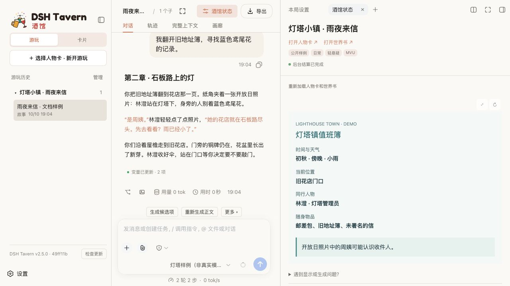
游玩界面 · 左侧继续游戏，中间阅读正文和输入行动，右侧查看状态。正文由本地模拟服务提供，状态栏是人物卡自带的只读面板，不代表模型质量。原创公开样例 · 灯塔小镇（CC0） · 2026-10-10 · 点击图片放大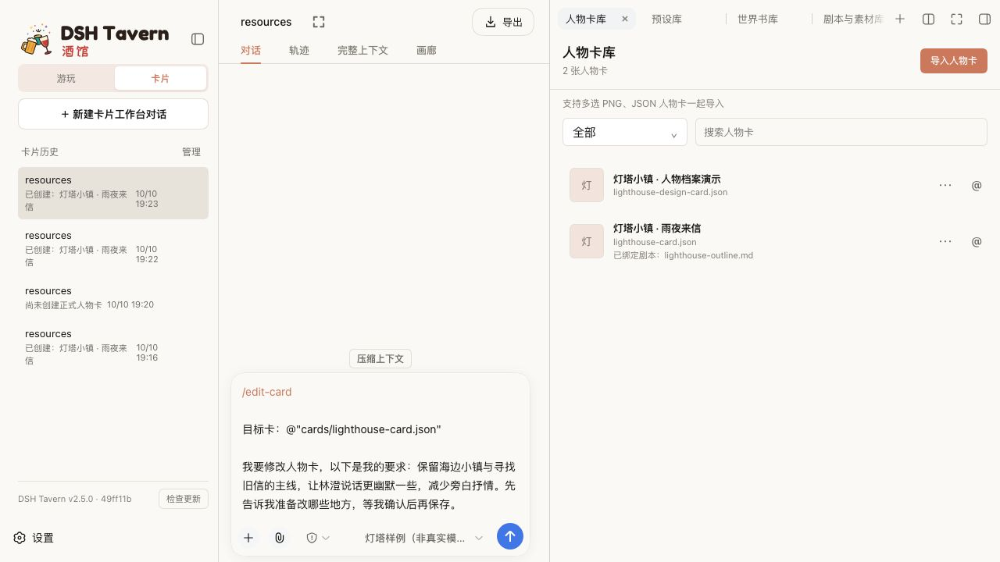
卡片工作台 · 选择“修改人物卡”和目标卡后，在任务提示词后补充要保留和想调整的内容。输入框中的要求是演示草稿，尚未发送，也未修改人物卡。原创公开样例 · 灯塔小镇（CC0） · 2026-10-10 · 点击图片放大实际应用截图 · DSH 0.1.5-rc.2 / DSH Tavern 2.5.0 · 49ff11b。样例说明 ↗ · 下载样例人物卡 · 世界书 · 预设 · 剧本大纲
一次游玩是怎样的
- 选一张喜欢的人物卡，预览并确认开场。
- 阅读故事，输入自己的行动或对白；没想好时可以看看候选建议。
- 发送行动，等待新的剧情与状态结果。
- 继续下一轮；不满意时可以重写、回退，或添加持续生效的 Guide。
例如，你可以直接写“我先不回答，走到窗边看看街上的情况”，不必按固定选项行动。
可以带来什么内容
支持导入酒馆人物卡、世界书和预设，也可以导入小说、剧本或大纲。正则、MVU 和前端美化的具体支持范围，见酒馆生态兼容。
想改变内容时，进入卡片模式，告诉 Agent 哪些不喜欢、希望怎样调整，以及哪些需要保留。它也可以从素材中抽取人物与设定来制作新卡。
开始前需要准备什么
- 一台可运行 DSH 的设备，按安装与启动选择桌面版或命令行版。
- 一个可用的文字模型服务（任意模型均可，不限于 DeepSeek），准备服务地址、模型名称和所需的 API 密钥；模型调用可能产生费用。
- 一张想玩的 PNG / JSON 人物卡；也可以安装后再通过卡片模式制作。
不用先导入外部预设。长期偏好、文生图和其他高级设置都可以先跳过，遇到需要时再查。
下一步
还没安装：先看安装与启动。已经装好：从完成第一次游玩开始，再按需要查阅四部分功能文档。
安装与启动
先安装 DSH Tavern，再配置一个可用的文字模型。桌面版和命令行版选择一种即可。
先选一种安装方式
只需完成其中一种安装方式，然后配置文字模型，就可以开始玩。 已经装好酒馆的用户，可直接看日常启动、更新与重新安装或安装排错。
Windows 不知道怎么选，就选 A；想按你已有的 DSH Desktop 来安装，就选 B。 A 已包含 Desktop，不用再做一遍 B。
安装前保持联网，并预留下载和安装的时间。先装好程序即可，模型密钥和人物卡可以稍后准备。不同安装方式的数据各自独立，切换方式不会自动带走原来的聊天、人物卡和设置；桌面版与命令行版不要同时运行。
A．Windows 一键安装（仅 Windows x64）
适合希望直接安装、以后双击快捷方式打开的用户。安装包会准备 DSH Desktop 2.0.13 和兼容的最新版酒馆，无需另装 Node.js 或 DSH Desktop。
第 1 步：下载安装包
下载 Windows 一键在线安装 EXE
下载的文件名是 DSH-Tavern-Desktop-2.0.13-x64-Setup7.exe。这是在线安装器，安装时仍需要联网。
第 2 步：安装并等待完成
- 双击下载的 EXE。
- 选择安装文件夹，例如
D:\Apps\DSH-Tavern，记住这个位置。 - 点击 安装并启动，等待下载和安装完成，不要在过程中关闭窗口。
- 安装完成后会创建桌面和开始菜单中的 DSH Tavern 快捷方式。
完成提示和安装目录里的 如何启动.txt 会列出实际程序及数据位置。新安装的数据位于所选安装目录的 data 子目录。
第 3 步：打开酒馆
如果没有自动打开，双击桌面的 DSH Tavern。看到酒馆界面后，继续配置模型并开始第一局，不用再执行下面其他方式的安装命令。
以后也从这个快捷方式打开。下载的安装包可以删除；不要删除安装文件夹。不要直接运行内部 runtime-… 文件夹里的 DSH Desktop.exe。
B．DSH Desktop 安装（Windows / macOS）
按以下顺序操作：先安装 DSH Desktop，再在它提供的终端中安装 Tavern，最后切换到 Tavern 界面。 如果你已经通过上面的 Windows 一键安装包装好了，就跳过本节。
第 1 步：安装适配的 Desktop 版本
- 打开 DSH Desktop v2.0.13 下载页。
- 展开页面中的 Assets，下载适合自己 Windows / macOS 系统和处理器的安装包，不要下载 Source code。
- 安装并打开 DSH Desktop。已经安装的用户，先确认版本是 2.0.13。
本项目当前要求 Desktop 内置的 DSH 为 0.1.5-rc.2，对应的 Desktop 版本是 2.0.13。其他版本不一定兼容，安装器检测到不匹配会停止。请使用这里指定的适配版本，不要因为提示有新版就先升级 Desktop。
第 2 步：从 Desktop 打开 DSH 终端
在 DSH Desktop 中进入 设置 → 通用设置，点击设置窗口顶部的 打开 DSH 终端，会出现一个可以输入命令的窗口。
下一步的命令就粘贴在这个窗口里，不是发到 DSH 的聊天输入框里。 请从 Desktop 的入口打开，以便使用它提供的运行环境。
下面的操作位置截图来自旧版 Desktop，供辨认入口；实际安装请使用上面指定的 2.0.13。
 打开 DSH 终端 · 进入 Desktop 设置，在窗口顶部点击红圈标出的打开 DSH 终端。用户提供的 Desktop 设置截图 · README 已核对 · 点击图片放大
打开 DSH 终端 · 进入 Desktop 设置，在窗口顶部点击红圈标出的打开 DSH 终端。用户提供的 Desktop 设置截图 · README 已核对 · 点击图片放大
第 3 步：只运行自己系统对应的命令
点击代码框右上角的 复制，把整条命令粘贴到刚打开的终端，按 回车，等待安装结束。命令很长，网页上可能需要横向滚动才能看全，使用复制按钮即可取得完整内容。
Windows 用户：运行下面这条 PowerShell 命令。 代码框上方的 powershell 只是语言标签，不用输入。如果窗口中是 PS C:\…> 一类提示符，说明已经在 PowerShell 中；如果打开的是 cmd，可先输入 powershell 并回车，再粘贴安装命令。
powershell
$env:DSH_TAVERN_HOST='desktop'; $tavernInstaller=[Text.Encoding]::UTF8.GetString((New-Object Net.WebClient).DownloadData('https://cdn.jsdelivr.net/gh/flizzywine/dsh-tavern@main/install.ps1')); Invoke-Expression $tavernInstaller
macOS 用户：运行下面这条命令。 Windows 用户跳过这条。
bash
curl -fsSL https://cdn.jsdelivr.net/gh/flizzywine/dsh-tavern@main/install.sh | DSH_TAVERN_HOST=desktop sh
这里的命令会下载并执行本项目的安装脚本。请保留终端窗口，等到脚本报告安装完成；如果显示错误，先看安装排错，不要接着尝试其他安装方式的命令。
第 4 步：重启 Desktop，选择 tavern
- 安装完成后，退出并重新打开 DSH Desktop。
- 进入 设置 → 桌面设置。
- 在右侧 Profile 列表中点击 tavern。Profile 可以理解为一套运行配置；旁边显示 当前，表示已经选中。
- 返回主界面，确认显示酒馆界面。
 选择 tavern 配置 · 进入桌面设置，在 Profile 列表选择 tavern，旁边显示当前即为选中。用户提供的 Desktop 设置截图 · README 已核对 · 点击图片放大
选择 tavern 配置 · 进入桌面设置，在 Profile 列表选择 tavern，旁边显示当前即为选中。用户提供的 Desktop 设置截图 · README 已核对 · 点击图片放大实际应用截图 · DSH Desktop 2.0.5。样例说明 ↗ · 下载样例人物卡
看到酒馆界面，就完成了安装。接下来去配置模型并开始第一局。这一方式由 Desktop 管理启动和停止，不需要运行 dsh-tavern start。
C．命令行版（Windows / macOS / Linux / WSL2）
适合希望自己启动、停止服务，并通过浏览器使用酒馆的用户。使用 Desktop 的用户可以跳过本节。
第 1 步：准备 Node.js 和终端
先安装 Node.js 22.19 或更高版本，安装后重新打开终端。Windows 从开始菜单打开 PowerShell；macOS / Linux 打开系统终端；WSL2 用户在 WSL2 终端中操作。
运行下面的命令检查版本。如果提示找不到命令，先完成 Node.js 安装再继续。
无需预装 DSH：安装器会准备独立的固定版本 DSH 0.1.5-rc.2，不会复用或修改全局 DSH。Git 是可选的，有 Git 时便于增量更新，没有时会使用 ZIP 下载。
第 2 步：运行本系统的安装命令
Windows PowerShell：
powershell
$env:DSH_TAVERN_HOST='cli'; $tavernInstaller=[Text.Encoding]::UTF8.GetString((New-Object Net.WebClient).DownloadData('https://cdn.jsdelivr.net/gh/flizzywine/dsh-tavern@main/install.ps1')); Invoke-Expression $tavernInstaller
macOS / Linux / WSL2：
bash
curl -fsSL https://cdn.jsdelivr.net/gh/flizzywine/dsh-tavern@main/install.sh | DSH_TAVERN_HOST=cli sh
点击对应代码框的 复制，粘贴到终端并回车。Windows 只执行 Windows 命令，其他系统只执行下面那条。
第 3 步：选择安装目录
首次安装时会询问目录，按提示输入选项并回车：
| 选项 | 安装到哪里 | 怎么选 |
|---|
| 1 | 用户目录下的 .dsh-tavern 文件夹 | 不确定时选这一项，方便以后找回 |
| 2 | 当前目录（直接回车选这一项） | 确认终端当前所在文件夹就是你想安装的位置时使用 |
| 3 | 你指定的其他完整路径 | 希望放在其他磁盘或专用文件夹时使用 |
请记住所选目录。程序、独立运行时和游戏数据存入这里；命令入口及包管理器缓存可能位于目录外。Node.js 仍使用系统安装的版本。
第 4 步：打开酒馆网页
等待安装器完成依赖安装并启动酒馆，首次安装会尝试打开浏览器。没有自动打开时，新开一个终端，再运行：
仍打不开时，查看服务状态与访问地址：
使用输出中的完整访问地址，其中可能带有鉴权 token，不要分享给别人。看到酒馆界面后，继续配置模型并开始第一局。
命令行版命令一览
安装完成后，新开一个 PowerShell / 终端即可使用下列命令。Windows、macOS、Linux / WSL2 的 dsh-tavern 命令写法相同。每次只复制你要执行的那条，不要把整张表依次执行。
| 命令 | 用途 | 什么时候用 |
|---|
dsh-tavern start | 启动酒馆后台服务 | 开机后，或服务已经停止时 |
dsh-tavern open | 在浏览器中打开当前酒馆 | 服务已启动，但网页关掉了或没有自动打开时 |
dsh-tavern status | 查看服务状态及可用的访问地址 | 确认是否正在运行，或排查网页打不开时 |
dsh-tavern stop | 停止酒馆后台服务 | 暂时不用、备份数据或准备覆盖重装时 |
dsh-tavern restart | 先停止，再启动酒馆服务 | 更新后需要手动重启，或按排错提示重启时 |
dsh-tavern update | 在原安装位置更新酒馆 | 想通过终端更新时 |
dsh-tavern install | 使用当前本地程序安装或修复 Tavern Profile、依赖及所需运行时 | 手动部署或修复本地安装配置时 |
dsh-tavern --help | 显示命令帮助 | 忘记有哪些命令时 |
不带参数运行 dsh-tavern 等同于 dsh-tavern status。帮助命令也可以写成 dsh-tavern help 或 dsh-tavern -h。
启动服务：
打开网页： 只负责打开页面，不会自动启动尚未运行的服务。若提示尚未就绪，先运行上面的启动命令。
查看运行状态和访问地址： 地址可能包含鉴权 token，请勿公开分享。
停止服务： 停止后网页无法继续生成，已有聊天和人物卡仍保留。先等当前生成结束并保存编辑内容。
重启服务： 如果浏览器没有恢复连接，完成后再运行 dsh-tavern open。
更新酒馆： 更新沿用已安装目录，保留数据。完整覆盖重装步骤见更新与重新安装。
安装或修复本地配置： 此命令使用已经下载到本地的程序，不负责获取最新版酒馆源码。第一次安装请使用本节前面的完整安装命令；要更新程序，请用 update，或按覆盖重装步骤重新执行完整安装命令。
bash
dsh-tavern install --host cli
在命令行版环境中，dsh-tavern install 默认使用 CLI 宿主；这里显式写出 --host cli 便于确认安装目标。--host desktop 和 --host android 用于对应宿主内安装，命令行版用户无需切换。
查看帮助：
常见操作顺序： 开机后先 start 再 open；只关闭了浏览器，直接 open；打不开先看 status；更新用 update；需要停止服务用 stop。关闭终端或浏览器不等于停止后台服务。
D．Android 独立 APK（Android 11+ / ARM64）
适合想直接安装酒馆应用的用户，无需另装 DSHA，也无需输入安装命令。此包要求 Android 11 及以上、ARM64。
第 1 步：下载并安装 APK
下载 DSH Tavern Android APK
下载后打开 APK，按照 Android 提示，允许当前浏览器或文件管理器安装应用，然后完成安装。
第 2 步：首次启动并等待安装
打开 DSH Tavern 应用，点击 启动，保持联网并等待运行环境和酒馆下载、安装完成。期间保持应用运行。
这是在线安装包，装好 APK 并不代表酒馆已下载完成。初始化失败时先保留错误日志，再点击启动重试。
第 3 步：进入酒馆
启动完成后点击 进入，看到酒馆界面后，继续配置模型并开始第一局。以后直接打开此应用，按“启动 → 进入”操作。
独立 APK 与原版 DSHA 的数据各自独立，不会自动迁移旧聊天。更新 APK 时安装本项目同签名的新包进行覆盖升级，不要先卸载，以免删除应用数据。
E．Android：通过 DSHA 安装
适合已经使用 DSHA，或需要尝试兼容包的用户。已安装上面的独立 APK 并能正常使用，就无需再做本节。
第 1 步：安装适配的 DSHA
下载 DSHA v0.1.5-rc2，它内置本项目要求的 DSH 0.1.5-rc.2。Android 11 及以上使用标准包 dsha-0.1.5-rc2.apk，更早的系统可尝试兼容包 dsha-0.1.5-rc2low.apk。
安装后打开 DSHA，配置模型并成功启动一次。旧的 DSHA 1.2.0-rc1.4 内置版本不符合要求，不能直接用于这次安装。
第 2 步：安装酒馆，以下两种操作选一种
直接使用终端： 打开 DSHA 底部的 终端，复制下面整条命令，粘贴并回车，等待脚本结束。
bash
node -e "fetch('https://cdn.jsdelivr.net/gh/flizzywine/dsh-tavern@69d74f5/android/setup.sh').then(async r=>{if(!r.ok)throw Error('HTTP '+r.status);require('fs').writeFileSync('/tmp/dsh-tavern-setup.sh',await r.text())}).then(()=>{const r=require('child_process').spawnSync('bash',['/tmp/dsh-tavern-setup.sh'],{stdio:'inherit'});process.exit(r.status??1)}).catch(e=>{console.error(e);process.exit(1)})"
不会使用终端： 打开 DSHA 的 创造模式，把下面这一整段话复制给 Agent，让它执行，等待返回结果。已经执行过上一条命令的用户无需再做一次。
text
请帮我安装 DSH Tavern。只需要原样执行下面这一条命令，等待它结束，然后把最后的结果告诉我；不要拆解步骤，也不要修改命令：
node -e "fetch('https://cdn.jsdelivr.net/gh/flizzywine/dsh-tavern@69d74f5/android/setup.sh').then(async r=>{if(!r.ok)throw Error('HTTP '+r.status);require('fs').writeFileSync('/tmp/dsh-tavern-setup.sh',await r.text())}).then(()=>{const r=require('child_process').spawnSync('bash',['/tmp/dsh-tavern-setup.sh'],{stdio:'inherit'});process.exit(r.status??1)}).catch(e=>{console.error(e);process.exit(1)})"
第 3 步：重启并打开酒馆工作台
- 看到 全部完成 后，重启 DSHA。
- 在底部 启动 页点击 启动。
- 等待显示 已就绪，可进入，点击 进入。
- 从侧栏打开 酒馆工作台。
酒馆会在 DSHA 内打开，这个入口会自动处理认证，无需自己填写端口或复制 token。看到界面后，继续配置模型并开始第一局。
从手机 Download 目录导入人物卡前，请在 Android 系统设置中允许 DSHA 访问所有文件；也可以尝试系统文件选择器。使用期间请允许 DSHA 后台运行，避免省电策略中断服务。
配置模型并开始第一局
能打开酒馆界面表示安装完成；要让角色回复，还需要配置可用的文字模型。 五种安装方式都从这里继续。
- 准备模型服务提供的 API 密钥、服务地址、模型名称。模型调用可能产生费用。DSH 可以接入所有模型，不限于 DeepSeek，用哪家服务或本地模型都可以。
- 在酒馆左侧栏底部打开 设置 → 模型，按服务方要求填写并选择文字模型。具体操作见配置文字模型。
- 导入一张 PNG / JSON 人物卡，选择新建游玩。
- 预览开场，按需设置玩家称呼，发送第一条行动。
看到新生成的剧情正文，就完成了第一次游玩。详细步骤见第一次游玩。外部预设、长期偏好、文生图等功能可以之后再配置。
关机后如何重新打开
日常启动不用重新安装。根据你当初选择的方式操作：
| 安装方式 | 以后从哪里打开 |
|---|
| A．Windows 一键安装 | 双击桌面或开始菜单中的 DSH Tavern |
| B．DSH Desktop | 打开 DSH Desktop，确认 设置 → 桌面设置 → Profile 中选中 tavern |
| C．命令行版 | 打开终端，依次运行下面的启动和打开命令 |
| D．Android 独立 APK | 打开 DSH Tavern 应用，点击 启动 → 进入 |
| E．DSHA | 打开 DSHA → 启动，等待就绪后点 进入 → 酒馆工作台 |
以下命令只供 C．命令行版使用。 启动服务并打开网页：
bash
dsh-tavern start
dsh-tavern open
需要停止服务时运行 dsh-tavern stop，需要重启时运行 dsh-tavern restart。关闭浏览器页面不等于停止服务，电脑关机则会结束本机服务。
更新与重新安装
日常更新直接点酒馆里的更新按钮。更新失败、长期卡住，或想重新执行完整安装流程时，再做“整体重新安装（覆盖更新）”。
整体重新安装不会覆盖数据，只替换程序。重新运行原来的安装包或安装命令即可，人物卡、聊天和设置都会保留，不用先删除或卸载。
| 你想做什么 | 用哪种办法 | 会不会清空数据 |
|---|
| 正常获取新版酒馆 | 在界面中检查并进行更新 | 正常更新保留数据 |
| 修复旧安装、重新安装最新版酒馆程序 | 在原位置重新运行安装包或安装命令 | 按原目录覆盖安装会保留数据，操作前仍建议备份 |
| 删除所有数据、从零开始 | 卸载并清除数据 | 会丢失数据，本页的更新步骤不需要这样做 |
这里的“整体重新安装”指重新执行安装流程，更新酒馆程序并重新安装所需依赖。它会保留游戏数据和适配的宿主版本；健康的运行环境可能被复用，不保证把每个文件都重新下载。不要为了“更彻底”先删除数据文件夹、清除 Android 应用数据或卸载应用。
更新前：先保存、确认原安装、备份数据
- 等当前生成或修改操作完成，保存正在编辑的内容。
- 确认原来用的是 A、B、C、D、E 中哪一种，继续用同一种更新。尤其不要把 Desktop 版换成命令行版来“更新”。
- 按数据备份保存重要人物卡和聊天。Windows 一键版可在关闭酒馆后复制整个安装目录中的
data 文件夹到另一个位置；命令行版可停止服务后备份原安装根目录中的 profile-data/tavern。 - 保持联网。如果之前已经有更新任务在运行，先等待其结束；确认卡住时关闭旧任务，再开始一次修复，不要同时运行多个安装器。
方法一：直接点击更新按钮（日常使用）
- 打开酒馆，展开左侧栏，找到底部显示 DSH Tavern 版本号和构建号 的更新区域。
- 点击 检查更新。发现新构建后，点击 进行更新；旧版界面可能直接显示 更新到最新版。
- 等待下载和安装。期间可能短暂断开连接，不要连续点击更新或立即关闭宿主。
- 根据完成提示重启或刷新，具体见下表。
| 安装方式 | 更新完成后 |
|---|
| A．Windows 一键安装 | 退出酒馆及其 Desktop 进程，再从 DSH Tavern 快捷方式打开 |
| B．DSH Desktop | 退出并重新打开 Desktop，确认当前 Profile 为 tavern |
| C．命令行版 | 按提示刷新网页；若提示自动重启失败，在终端运行 dsh-tavern restart，再 dsh-tavern open |
| D．Android 独立 APK | 返回应用的启动页，重启后再进入酒馆 |
| E．DSHA | 返回 DSHA 底部 启动 页，点击 重启，再进入 酒馆工作台 |
看到 未发现更新构建 就表示检查时没有发现更新，无需重装。命令行版也可以直接在终端运行 dsh-tavern update，它会沿用已安装位置。
检查更新会依次使用 GitHub API 与 jsDelivr，任一可达即可完成检查；只有 GitHub 不可达时，结果会附带提示，因为 jsDelivr 可能有数小时缓存延迟。两者都不可达时，可用环境变量把查询地址改到可访问的镜像，重启酒馆后生效：
| 环境变量 | 默认地址 | 用途 |
|---|
DSH_TAVERN_COMMIT_URL | api.github.com 的 main 最新提交 | 判断最新构建 |
DSH_TAVERN_CDN_METADATA_URL | jsDelivr 上的 dsh-tavern-runtime.json | GitHub 不可达时的备用清单 |
DSH_TAVERN_VERSION_URL | raw.githubusercontent.com 的 package.json | 仅用于显示版本号，失败不影响检查 |
方法二 A：Windows 一键版整体重新安装（覆盖更新）
- 保存操作、备份数据，关闭已打开的酒馆。
- 从 Windows 一键安装重新下载本页提供的修复版 EXE，双击运行。
- 确认安装器识别的是原来的安装文件夹，按界面提示修复并启动。旧便携版会显示 修复并启动。不要另选空文件夹来代替原安装。
- 等待安装器准备运行文件、联网更新酒馆并补建启动入口。它会关闭所选安装的旧进程，请勿在安装过程中继续游玩。
- 完成后，从桌面或开始菜单的 DSH Tavern 打开，确认原聊天和人物卡仍在。
如果提示原目录不可用，先连接原磁盘或选择 使用原目录。只有明确要建立一份新安装时才选择 重新安装 并指定新位置；新位置不会自动获得旧数据。
方法二 B：DSH Desktop 版整体重新安装（覆盖更新）
最直接的办法：重新执行第一次安装酒馆时的那条命令。无需先卸载 Desktop，也无需删除 tavern Profile。
- 保存操作并备份重要数据，确认 Desktop 仍为 2.0.13。
- 打开 DSH Desktop → 设置 → 通用设置 → 打开 DSH 终端。
- 复制下面自己系统对应的整条命令，粘贴到这个终端，按回车。以下命令与首次安装相同，会获取安装脚本并在原宿主中覆盖更新酒馆。
Windows PowerShell：
powershell
$env:DSH_TAVERN_HOST='desktop'; $tavernInstaller=[Text.Encoding]::UTF8.GetString((New-Object Net.WebClient).DownloadData('https://cdn.jsdelivr.net/gh/flizzywine/dsh-tavern@main/install.ps1')); Invoke-Expression $tavernInstaller
macOS：
bash
curl -fsSL https://cdn.jsdelivr.net/gh/flizzywine/dsh-tavern@main/install.sh | DSH_TAVERN_HOST=desktop sh
命令执行后，继续完成以下操作：
- 等待终端报告安装完成。如果显示错误，先保留错误日志，不要删除原数据再试。
- 退出并重新打开 Desktop，在 设置 → 桌面设置 → Profile 中选中 tavern。
- 打开原聊天，确认人物卡、聊天和设置仍在，再检查更新区域的结果。
这会重新安装酒馆程序及依赖，不会重装或升级 Desktop 本身。如果 Desktop 应用已经损坏、连设置都打不开，应先备份其数据，再修复安装指定的 Desktop 2.0.13，随后执行上述步骤。
方法二 C：命令行版整体重新安装（覆盖更新）
- 保存操作，在终端运行
dsh-tavern stop 停止服务，然后备份数据。 - 找到原安装根目录，也就是包含
apps、runtime、profile-data 的那一层，不是 apps/dsh-tavern 源码文件夹。 - 在这个根目录打开 PowerShell / 终端，再运行 C．命令行版中对应系统的安装命令。安装器会重新获取酒馆程序、安装依赖并检查独立 DSH 运行时。
- 如果再次询问安装目录，确认选择原位置。也可以在运行安装命令前设置
DSH_TAVERN_CLI_HOME，明确指定原安装根目录。 - 安装完成后新开终端，运行
dsh-tavern status 查看服务状态，再运行 dsh-tavern open。若服务未运行，先执行 dsh-tavern start。
如何明确指定原目录： 下面仅是写法示例，必须把示例路径换成你自己的原安装根目录，不能直接照抄。设置后，在同一个终端中运行 C 的安装命令。
Windows PowerShell 示例：
powershell
$env:DSH_TAVERN_CLI_HOME='D:\Apps\DSH-Tavern-CLI'
macOS / Linux / WSL2 示例（仅当你原来确实装在这个默认位置时使用）：
bash
export DSH_TAVERN_CLI_HOME="$HOME/.dsh-tavern"
只有独立 DSH 运行时也需要强制重装时，才做下面这一步。 普通覆盖安装会复用健康的固定版本运行时；这不是漏更新。如果怀疑运行时损坏，可在同一个终端中、执行安装命令前再设置：
Windows PowerShell：
powershell
$env:DSH_TAVERN_REINSTALL_RUNTIME='1'
macOS / Linux / WSL2：
bash
export DSH_TAVERN_REINSTALL_RUNTIME=1
然后运行 C 中的安装命令。完成后关闭这个终端，避免临时设置影响下次操作。此选项只适用于命令行版，重新安装的仍是本项目固定的 DSH 0.1.5-rc.2，不是升级到其他版本。
方法二 D：Android 独立 APK 更新与修复
酒馆程序和 APK 应用是两层，覆盖安装 APK 不等于强制重新安装酒馆。
- 日常更新酒馆，使用上面的方法一，完成后回到应用启动页重启。
- 要更新或修复 APK 应用本身，从 D．Android 独立 APK下载本项目的安装包，在现有应用上覆盖安装。必须使用同签名安装包，不要先卸载，也不要点击系统设置中的“清除数据”。
- 打开应用，点击启动、进入，确认原聊天和人物卡仍在。
首次安装未完成的应用，会在再次启动时重试初始化。已完成初始化的应用可能复用现有酒馆文件，不能把“重新装了一次 APK”当成酒馆程序一定已重装。如果酒馆打不开或更新仍失败，保留启动日志，按本页 Android 排错处理；不要通过卸载来强迫它重新初始化。
方法二 E：DSHA 版整体重新安装（覆盖更新）
- 保存操作并备份重要数据，保留现有 DSHA 和它的数据，确认宿主是适配的 v0.1.5-rc2。
- 酒馆打不开时，先尝试 酒馆工作台 → 更新/修复。
- 要重新执行完整安装流程，打开 DSHA 底部 → 终端，运行下面与首次安装相同的命令，等待它完成下载、配置和校验。不要切换到独立 APK 来更新这份 DSHA 数据。
bash
node -e "fetch('https://cdn.jsdelivr.net/gh/flizzywine/dsh-tavern@69d74f5/android/setup.sh').then(async r=>{if(!r.ok)throw Error('HTTP '+r.status);require('fs').writeFileSync('/tmp/dsh-tavern-setup.sh',await r.text())}).then(()=>{const r=require('child_process').spawnSync('bash',['/tmp/dsh-tavern-setup.sh'],{stdio:'inherit'});process.exit(r.status??1)}).catch(e=>{console.error(e);process.exit(1)})"
命令执行完成后： 回到 DSHA 的 启动 页点击 重启，等待就绪后点击 进入 → 酒馆工作台，确认原聊天与人物卡仍在。
怎样确认更新完成
重新打开酒馆后，在左侧栏底部检查当前版本和构建号，再点击 检查更新。版本号可能不变而构建号变化，所以不要只看大版本号。能打开原聊天、人物卡仍在，且更新检查没有报错、没有发现更新构建，就完成了这次更新。
如果打开后数据像全新安装，先检查是不是选错了 Profile、安装目录或应用，不要立刻认定数据已删除，也不要马上覆盖或清理旧目录。
为什么不能随意升级 Desktop / DSHA
当前适配的 DSH 是 0.1.5-rc.2。Desktop / DSHA 的更新可能改变内置 DSH，导致酒馆不兼容；请等本项目明确适配后再升级。酒馆更新与宿主升级是两件事，安装器不会自动替你升级或降级 Desktop / DSHA。命令行版使用自己的固定 DSH 运行时。
可选：用手机访问电脑上的酒馆
这里是“电脑运行，手机访问”，和在 Android 手机上安装应用是两种用法。 先完成电脑端安装，再按需配置；安装电脑端酒馆不需要先做本节。
Desktop 安装和更新会自动配置 dsh-pocket。重启后，在 设置 → 手机访问 中选择局域网或公网访问，手机扫码连接。CLI 不提供 Pocket 手机访问，升级时会移除旧版 Pocket。使用时电脑及酒馆服务需要保持运行；选择局域网时，手机和电脑应在同一局域网。
自行部署服务器的用户可参考 dsh-webui-auth，为已经能访问的 WebUI 添加账号密码认证。它不提供内网穿透，服务器地址、监听和端口需要自行配置。参考插件教程时，请保留本项目适配的 DSH 0.1.5-rc.2，不要照抄升级 DSH 的步骤。
安装失败时
先确认自己正在做的是 A、B、C、D、E 中哪一种，停在了哪一步。保留最前面的具体错误、文件路径和前后日志，不要只截最后一句“失败”。反馈时附上系统版本、安装方式和错误截图，隐藏模型密钥、鉴权链接和私人剧情。
Windows 一键安装：安装失败、访问被拒绝或更新一直转圈
重新下载 A 中的修复版安装包，先保存操作、关闭已打开的酒馆，再按原安装位置修复。不要继续使用旧版 Setup.exe。重新运行安装包会关闭所选安装的旧进程，并联网更新酒馆。
启动错误可查看安装目录的 launcher-error.txt；首次联网安装问题可查看数据目录的 first-install.log。详细说明见 Windows 安装与启动入口。
Windows 旧便携版找不到入口，或原安装目录不可用
旧便携版用户运行 A 中的新安装包，选择 修复并启动，可在原位置补建入口并保留数据，无需重新导入人物卡。
提示 已记录的安装目录暂时不可用 时，如果要保留旧数据，先连接原磁盘或选择 使用原目录。确认旧安装已卸载、希望重新开始时，选择 重新安装 并指定位置，无需手动清理注册表。重新安装不能恢复已经删除的数据。
Desktop：命令报错、版本不匹配，或重启后没有酒馆
确认 Desktop 是 2.0.13，且命令是在 设置 → 通用设置 → 打开 DSH 终端 中执行的。Windows 使用 B 中的 PowerShell 命令，不要使用 C 中的命令行版命令。
如果提示找不到 Node.js，先确认使用的是 Desktop 打开的 DSH 终端。若安装成功但仍是普通 DSH 界面，在 设置 → 桌面设置 → Profile 中选择 tavern；没有这个选项时，回看终端中的安装错误。
普通 Desktop 内置更新失败或一直停在更新中，可从 DSH 终端重新执行 B 中的命令，完成后重启。仍失败时保留完整错误，不要反复换安装方式。
命令行版：命令无法识别或网页打不开
node 无法识别：安装 Node.js 后重新打开 PowerShell / 终端，再运行 node --version。dsh-tavern 无法识别：先新开终端重试，仍失败时检查安装是否真正完成。
网页打不开：运行 dsh-tavern status 查看状态；服务未运行时先 dsh-tavern start，再 dsh-tavern open。不要只输入不含鉴权信息的端口地址。
Android：初始化失败、白屏或提示需要认证
独立 APK 初始化失败时保留错误日志，再点击启动重试。安装日志位于容器内 /root/.dsh/logs/tavern-install.log。
DSHA 窗口白屏时先点顶部 刷新，仍不正常可点 直接打开；两个入口都打不开时，返回 DSHA 确认服务运行，再尝试 更新/修复。
浏览器显示 dsh web authentication required; reopen the URL printed by dsh web.，表示缺少登录凭证，不代表安装失败。回到 DSHA → 启动 → 进入 → 酒馆工作台 即可，不必重装。
必须用外部浏览器时，从 DSHA 本次启动日志的 本机打开 复制完整地址，包括 ?token= 后的全部内容，在同一台 Android 设备的浏览器打开，再进入酒馆工作台。MuMu 用户在模拟器里的浏览器操作。详见 Android 认证排错。
能打开酒馆，但发送后没有回复
这时先检查文字模型配置和服务返回的错误。能进入界面但不能生成，不等于安装失败，无需先重装。
更多问题见常见问题与排错日志。需要手动安装或查找高级目录配置时，参考完整安装说明。
安装包校验：Android APK SHA-256 文件。Windows EXE SHA-256：a21e2ea4bc7bb8d1154b6d133c3bd6c6ca139006c74140527925104731d02951。
用 DSH 命令安装 Tavern（试验）
已有 DSH 时，用 dsh plugin 命令把 Tavern 安装到独立 Profile。这是安装 Tavern 本身的一种方式，不是给 Tavern 装插件；第三方插件见插件开发两页。
适用条件
已安装 DSH 0.1.5-rc.2、Node.js 22.19+、pnpm，准备新建独立的 tavern Profile。当前先支持普通 DSH CLI 的新安装。
已通过专用安装器安装的 CLI、Desktop 或 Android 酒馆，请继续使用各自原有的更新方式，不要向同一个 Profile 叠装。其他安装方式见安装与启动。
从 GitHub 安装
需要 Git。在终端运行：
bash
dsh plugin --profile tavern add github:flizzywine/dsh-tavern
DSH 会创建 Profile、安装完整运行包并启用酒馆。运行包包含 Web 配置、侧栏、人物卡功能、预设和 Skill，无需自行构建。酒馆使用当前 DSH，启动时检查适配版本，不会另装或升级宿主。
启动与更新
安装完成后运行：
bash
dsh --profile tavern
打开酒馆网页，看到 Tavern 界面后，继续配置文字模型并开始第一局。
更新时先关闭酒馆，重新运行上述 GitHub 安装命令，再启动。页面中的“查看更新命令”提供对应命令，这种安装方式不使用专用安装器的源码更新器。
数据位置与使用边界
数据位于当前 DSH_HOME 下的 profile-data/tavern/；未设置 DSH_HOME 时通常为 ~/.dsh/profile-data/tavern/。程序由 Profile 的包管理器维护。
这条路线不会迁移旧 CLI 的独立数据，也不附带 Desktop 的 Pocket 手机访问配置或宿主字体文件修改。侧栏终端复用宿主提供的 node-pty；宿主缺少此依赖时，终端会显示修复提示，酒馆仍可使用。
酒馆生态兼容
已有的人物卡、世界书和预设，可以从这里继续使用。先了解支持范围，再按需要查看具体操作。
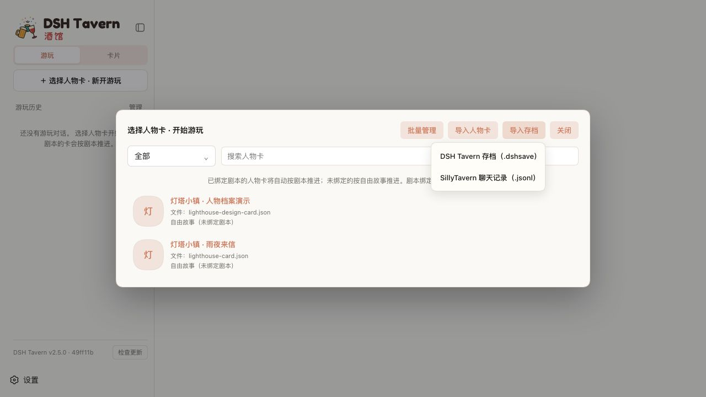
选择人物卡与导入存档 · 选卡器列出公开样例人物卡及剧本绑定状态；“导入存档”菜单可导入 DSH Tavern 存档（.dshsave）或 SillyTavern 聊天记录（.jsonl）。同一张卡可以创建不同游戏。原创公开样例 · 灯塔小镇（CC0） · 2026-10-10 · 点击图片放大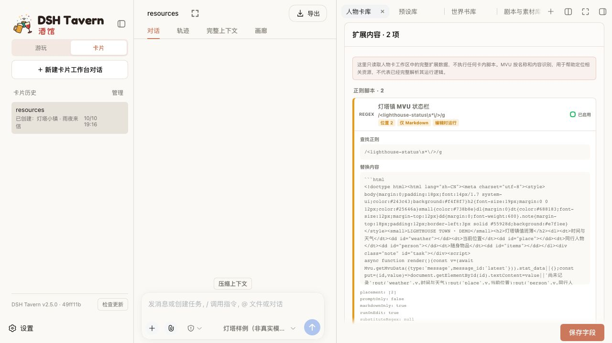
查看正则与扩展资源 · 展开“扩展内容”中的正则可以阅读查找正则和替换内容，并列出 MVU 相关资源；这里是只读检查，不执行卡内脚本。原创公开样例 · 灯塔小镇（CC0） · 2026-10-10 · 点击图片放大实际应用截图 · DSH 0.1.5-rc.2 / DSH Tavern 2.5.0 · 49ff11b。样例说明 ↗ · 下载样例人物卡
可以带来哪些资源
| 资源或能力 | 可以做什么 | 继续阅读 |
|---|
| 人物卡 | 导入 PNG / JSON，查看、编辑，导出 JSON | 导入人物卡 |
| 世界书 | 导入背景设定，编辑条目并关联人物卡 | 认识世界书库 |
| 预设 | 检查和管理外部提示词与正则 | 谨慎使用外部预设 |
| 正则与前端美化 | 处理正文格式，展示 HTML 内容和人物卡面板 | 正则与 HTML |
| MVU | 后台更新变量，在右侧持续展示状态栏 | MVU 状态栏 |
| 聊天记录 | 从选卡界面的“导入存档”导入 SillyTavern 聊天记录（.jsonl），作为一局新游戏接着玩 | 导出与导入存档 |
支持范围怎么理解
能导入一张卡，不等于它依赖的全部第三方脚本都能执行。我们分别说明资源的导入、编辑、展示和运行支持，不用“全面兼容”代替具体条件。
- 人物卡支持 PNG 导入和 JSON 导出，目前不提供 PNG 导出。
- 世界书保留部分高级字段，不等于完整复现原酒馆的全部触发规则。
- 正则、MVU 和前端美化取决于人物卡的结构，以及所依赖的脚本和宿主接口。
- 默认建议使用内置预设。要调整文风和写作规则，优先修改人物卡或使用 Guide；外部预设可能改变系统行为。
从哪里开始
有喜欢的人物卡，可以直接进入游玩模式。如果想修改其中不喜欢的内容，再进入卡片模式。
如果正文中的状态栏经常掉格式，可以按需转换为 MVU 版。正常工作的卡不需要转换。
逐项查阅
资源与展示支持
兼容范围参考
游玩模式
从第一局开始，认识眼前的界面和操作。无需先学会所有设置，也不用先制作自己的卡。
游玩界面 · 左侧继续游戏，中间阅读正文和输入行动，右侧查看状态。正文由本地模拟服务提供，状态栏是人物卡自带的只读面板，不代表模型质量。原创公开样例 · 灯塔小镇（CC0） · 2026-10-10 · 点击图片放大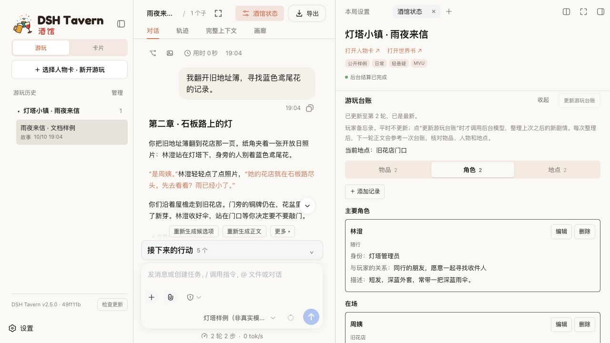
游玩台账 · 点“更新游玩台账”后，后台整理上次之后的新剧情，分物品、角色、地点记录，可编辑或删除。图中台账由本地模拟服务提交，人物均为原创虚构样例。原创公开样例 · 灯塔小镇（CC0） · 2026-10-10 · 点击图片放大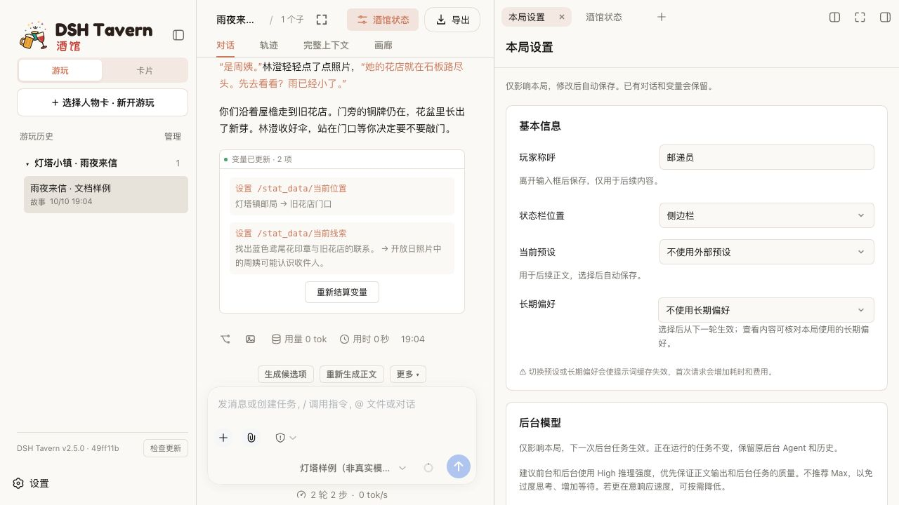
本局设置 · 仅影响当前游戏，修改自动保存；切换长期偏好从下一轮生效。原创公开样例 · 灯塔小镇（CC0） · 2026-10-10 · 点击图片放大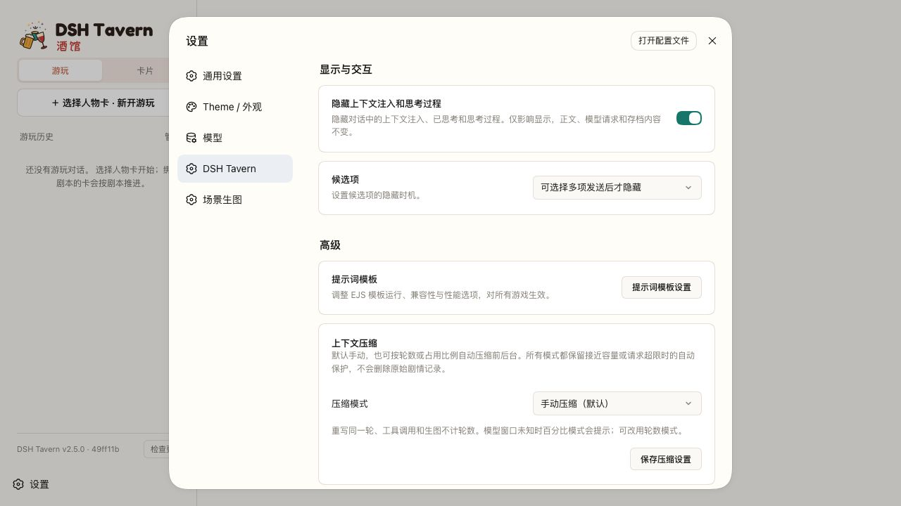
全局酒馆设置 · “隐藏上下文注入和思考过程”默认开启；候选项收起时机即时生效；压缩模式需点击“保存压缩设置”。原创公开样例 · 灯塔小镇（CC0） · 2026-10-10 · 点击图片放大实际应用截图 · DSH 0.1.5-rc.2 / DSH Tavern 2.5.0 · 49ff11b。样例说明 ↗ · 下载样例人物卡
开始第一局
- 完成安装，在 DSH 中配置文字模型服务。
- 导入一张 PNG 或 JSON 人物卡，选择新建游玩。
- 预览开场白，按需要选择开场并设置玩家称呼。
- 输入自己的行动，或选择一个候选、修改后发送。
没有外部预设也能开始；长期偏好、生图和后台独立模型都可以先不管。
认识游玩界面
| 界面区域 | 在这里做什么 |
|---|
| 左侧历史 | 找到并继续已有游戏，管理对话 |
| 中间正文 | 阅读故事，查看当前回复和正文操作 |
| 输入框与候选 | 输入行动和对白，选择、修改或重新生成候选 |
| 右侧酒馆状态 | 查看 Guide、人物状态，以及已绑定剧本的进度 |
玩过几轮之后
- 重新生成候选：换一组行动建议，不改写已经生成的正文。
- 重写正文：直接重新生成，或填写意见后重写当前回复。
- 回退当前回合：退回当前回合，不是任意历史节点的存档树。
- Guide：为当前游戏添加持续生效的要求，正文、候选和变量结算都会参考。
- 人物状态与变量回执：查看本轮结果；结算失败可单独重试。
- 游玩台账：右侧状态面板里的玩家备忘录，分物品、角色、地点。平时不更新，点“更新游玩台账”时由后台整理上次之后的新剧情；整理后下一轮正文会参考一次台账。
- 撤销回退：回退错了，可以从“更多”菜单恢复。
跟随一份剧本游玩
导入小说、大纲或剧本，绑定人物卡后新开一局。故事会参考当前进度附近的片段，你仍然可以自由行动、偏离主线。
右侧剧本进度按块列出剧本，可以点“从这里继续”指定下一轮从哪里读。
本局设置
点击游玩顶部“本局设置”，调整本局称呼、预设、长期偏好、后台模型和功能开关。打开本局设置完整说明。
全局设置：通用显示、压缩与生图服务
入口：左下角“设置” → “DSH Tavern”。这里管理通用选项，以及“新游戏默认”：前台、后台、生图 Agent 和卡片工作台的默认模型，默认玩家称呼、状态栏位置和各项后台结算开关，只影响之后新开的游戏。正在玩的游戏在上方介绍的本局设置中调整。
正文分色
开启后，引号内对白与斜体分别着色，普通文字保持原色，保留人物卡已有配色。点击色块设置对白和斜体颜色，“恢复默认配色”恢复自动适配深浅背景的颜色。
颜色修改即时应用，只保存在当前浏览器，不改变存档或发给模型的文字，也不跨设备同步。
上下文压缩
默认手动，也可选择每 N 轮自动压缩，或上下文达到指定百分比时自动压缩。轮数范围为 1–1000，百分比范围为 10–95%，百分比是估算。
修改后点击“保存压缩设置”，下一个安全边界生效。自动压缩在剧情后台结算后协调前后台，不删除原始剧情记录。重写同一轮、工具调用和生图不计轮数；模型窗口未知时可改用轮数模式。详见压缩与检索配合。
生图服务配置
入口：左下角“设置” → “场景生图”，与“DSH Tavern”页分开。在提供场景生图能力的版本中，配置渠道、服务地址、密钥及对应参数，按渠道检查连接或读取模型。这里设置的是服务连接，不会给每局自动生成图片；保存完整配置后打开「开启场景生图」（全局，默认关闭），每轮正文下方才出现图片图标，点击手动生成。详见生图配置。
DSH 自身设置
文字模型服务在“设置 → 模型”配置；语言、外观、字号及 Desktop Profile 等由 DSH 对应设置页管理。它们与插件的“系统提示词库”不是同一个入口。皮肤选择和壁纸设置见皮肤与外观。
保存和继续故事
通过左侧历史对话继续游玩。导出菜单里，“故事正文”保存玩家与角色的正文用于阅读，“存档”可以在别的机器或重装后导入继续玩；SillyTavern 的聊天记录也能从选卡界面的“导入存档”导入。日志导出用于排错，与这两种导出不同。
逐项查阅
开始第一局
输入、候选与正文
右侧面板与更新结果
跟随剧本游玩
历史对话与导出
卡片模式
把不合口味的内容改成自己喜欢的样子。人物卡、世界书、预设和剧本，都可以通过对话来制作与修改。
卡片工作台 · 选择“修改人物卡”和目标卡后，在任务提示词后补充要保留和想调整的内容。输入框中的要求是演示草稿，尚未发送，也未修改人物卡。原创公开样例 · 灯塔小镇（CC0） · 2026-10-10 · 点击图片放大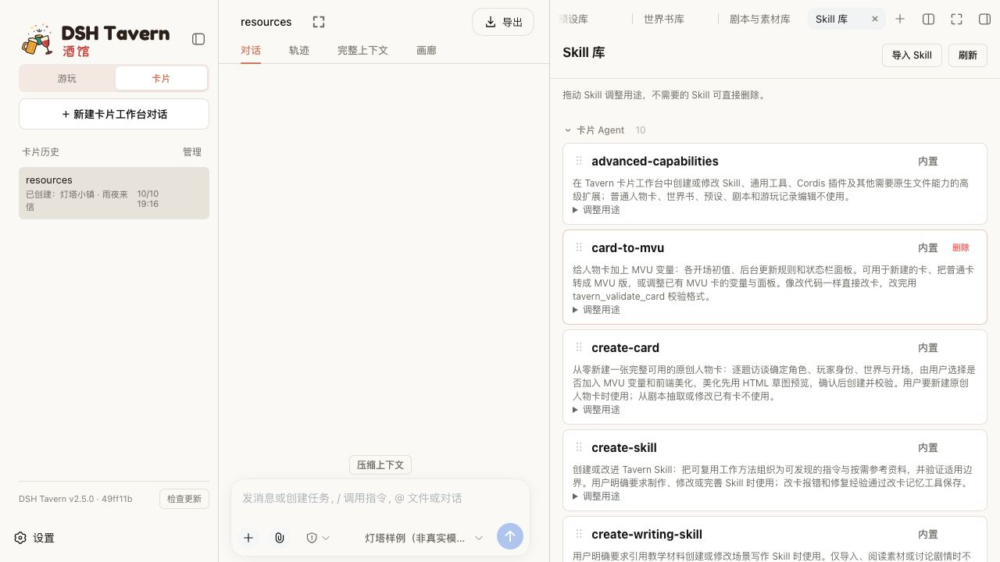
Skill 库 · 点击名称查看正文，展开“调整用途”或拖动分组；不需要的 Skill 可删除。图中仅展示内置方法。原创公开样例 · 灯塔小镇（CC0） · 2026-10-10 · 点击图片放大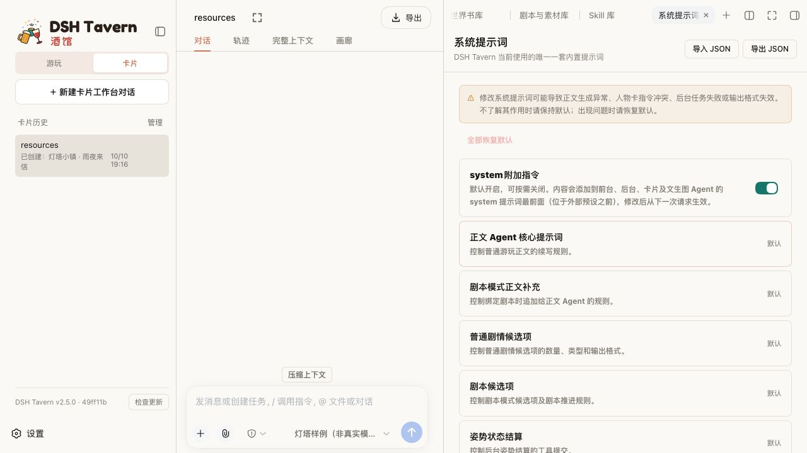
系统提示词库 · 管理内置提示词；库中条目与外部预设分开，主动恢复默认会清除对应自定义修改。原创公开样例 · 灯塔小镇（CC0） · 2026-10-10 · 点击图片放大实际应用截图 · DSH 0.1.5-rc.2 / DSH Tavern 2.5.0 · 49ff11b。样例说明 ↗ · 下载样例人物卡
认识卡片工作台
卡片模式不是游戏正文窗口，而是与 Agent 一起处理资源的工作台。选择要做的任务，在中间讨论修改，在右侧查看和引用资源。
| 界面区域 | 用途 |
|---|
| 起始任务 | 新建人物卡（逐题问答）、修改人物卡、温和改写、转成 MVU 版、从剧本制卡、创建写作 Skill，修改世界书、预设或剧本；空白开始 |
| 中间对话 | 说明要求、讨论方案，确认后让 Agent 写入修改 |
| 右侧资源库 | 管理人物卡、世界书、剧本、预设、正则、Guide、长期偏好、改卡记忆、Skill 和系统提示词 |
| 工作台历史 | 继续之前的制作与修改，与游玩历史分开管理 |
通过对话修改不喜欢的内容
- 选择修改任务和目标资源。
- 告诉 Agent 哪些内容不喜欢，希望怎样调整，以及哪些设定要保留。
- 查看建议，确认修改范围后再写入工作版。
- 查看修改结果；人物卡可新开一局体验。
例如：“保留人物的身份和背景，但把过于强势的性格改得更克制。先告诉我你准备改哪些地方。”
这套方式同样适用于世界书、预设和剧本，不只是人物卡。
从小说和剧本中提取新卡
选择一份或多份素材，说明想提取的人物、相关设定和保留范围。与 Agent 讨论、确认后制作新人物卡，不需要从零填写所有字段。
资源库：在右侧查找、管理和复用内容
在卡片模式打开右侧对应标签页。没有显示时，从右侧的新建标签页入口选择需要的库。库中保存的是可复用资源；选中查看、引用到对话、应用到游戏是不同操作。
人物卡库
保存角色设定，是开局和改卡的入口。可以批量导入 PNG / JSON，搜索与筛选卡片，查看、编辑字段，管理世界书和剧本绑定，重命名、删除或导出 JSON。
要让 Agent 修改，先引用目标卡，再说清修改要求；要开始游戏，从卡片新建游玩。修改工作版不等于所有旧游戏已同步更新。详见人物卡字段与原版恢复。
世界书库
管理独立世界书和人物卡内置世界书。可搜索、导入、导出、查看和编辑条目，调整启用状态与触发条件，管理人物卡关联，也可引用给 Agent 修改。可以把常用的世界书设为全局世界书，它和人物卡绑定的世界书合并使用，同一本只加载一次。
世界书存放故事背景与规则，不是已经发生的游戏记忆。保存高级字段不等于完整执行原酒馆全部规则。详见世界书库。
剧本与素材库
保存小说、故事大纲和写作教学材料。可导入、查看、重命名、删除和引用素材，也可以把剧本绑定到人物卡。
引用素材可以交给 Agent 抽取人物、修改剧本或创建写作 Skill；只有绑定剧本并用于开局，才是剧本游玩的来源。查看页用于阅读，正文修改交给 Agent。详见导入素材。
预设库
管理外部提示词方案。可导入、导出、重命名、删除，编辑提示词条目的内容、角色、顺序和开关，以及预设正则。
“新游戏默认预设”用于之后开局；正在玩的游戏在顶栏“本局设置”选择预设。默认可以不使用外部预设，外部预设可能明显增加思考时间和延迟。详见预设编辑与正则编辑。
长期偏好库
保存多份长期偏好，例如分别用于轻松日常和严肃剧情。通过“查看长期偏好”选择库中项目，用“新建”“重命名”管理名称；进入访谈建立长期偏好，或查看、编辑已确认内容。
在库中切换查看或保存修改，不会自动改变当前游戏。当前游戏使用哪份长期偏好，在“本局设置”中选择；库中内容更新后，可在那里检查版本并应用最新内容。新游戏默认使用方式与本局选择分开。详见长期偏好完整教程。
Skill 库
保存 Agent 可重复使用的方法。可以导入 SKILL.md 或 Skill 文件夹的压缩包。列表区分内置与自建 Skill，按用途分组；可以拖动调整用途，点击名称阅读正文及参考资料，也可编辑、预览、保存或删除。
写作 Skill 用于指导前台表达，其他 Skill 用于对应任务。库中管理方法和用途，本局设置控制当前游戏的写作 Skill 开关；关闭后不会删除已载入历史的内容。详见创建写作 Skill与Skill 管理。
正则库与 Guide 库
正则库可以导入原版酒馆的正则，存放在库里不会直接生效，需要时让卡片 Agent 写进人物卡或预设。Guide 库保存常用的 Guide 方案，可删除单条或整个方案。
系统提示词库
管理程序开放给用户调整的内置提示词。选择条目查看和编辑，保存后用于相应生成流程；可导入、导出整套 JSON，或恢复默认。
它与外部预设库不同，也不是本局 Guide。更新程序保留自行保存的修改，但主动导入整套配置或恢复默认会覆盖相应自定义内容，操作前可先导出备份。普通文风要求优先放在 Guide 或人物卡，不熟悉内置规则时保持默认。详见系统提示词。
引用、绑定和修改有什么区别
引用是把资源交给当前工作台讨论；绑定是让资源与人物卡建立使用关系；修改则会改变对应工作版。引用到对话，不等于已经绑定到游戏。
导入时保留人物卡原版，日常修改工作版。需要恢复时，可请 Agent 恢复人物卡原版；这不是所有资源都具备的任意版本恢复功能。
逐项查阅
认识工作台
人物卡库
世界书库
剧本与素材库
预设库
长期偏好库
Skill 库
系统提示词库
高级功能
这些能力不是开局前的必修课。遇到需要解决的问题，再点开相应的说明。
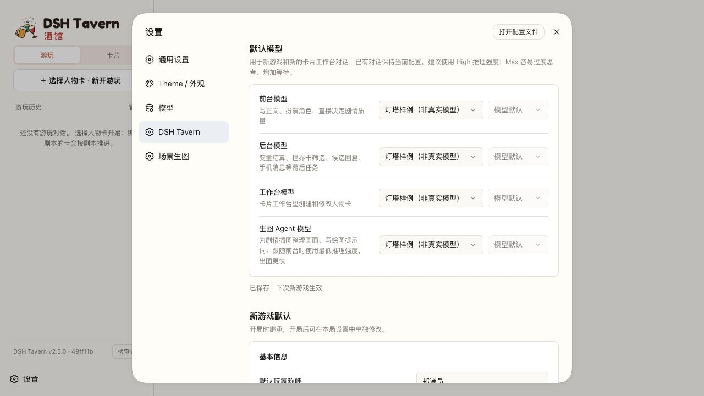
默认模型与新游戏默认 · 设置 → DSH Tavern 中分别为前台、后台、卡片工作台和生图 Agent 选择默认模型；新游戏开局时继承，已有对话保持当前配置。下方“新游戏默认”可在开局后到本局设置单独修改。原创公开样例 · 灯塔小镇（CC0） · 2026-10-10 · 点击图片放大实际应用截图 · DSH 0.1.5-rc.2 / DSH Tavern 2.5.0 · 49ff11b。样例说明 ↗ · 下载样例人物卡
七项高级功能，从需要解决的问题出发
先选择与你当前问题相关的一项，不需要全部开启。长期偏好管理长期偏好，历史检索回查本局剧情，联网搜索查询外部资料。
记忆与人物
- 历史回忆：故事变长后，按需找回已经发生的细节。
- 上下文压缩：整理长对话，不等于无限或无损记忆。
- 世界书召回：补充预先写好的背景，与回忆游戏历史不同。
- 后台人物设计：为本局重要人物设计、补全和复用档案，普通卡与 MVU 卡都可使用。
按需要定制
- 状态栏转 MVU：正文状态栏反复掉格式时再考虑转换。
- 长期偏好：通过访谈整理长期偏好，只在右侧栏主动开启新局默认使用。
- 互联网搜索：在本局设置中允许前后台按需查外部资料，后续请求生效。
- 模型分工：正文与后台任务可以选用不同模型。
- 系统提示词：调整内置生成规则，与外部预设分开管理。
创作方法与扩展
为文字剧情配图
文生图独立于文字游玩，默认关闭，不会自动出图。配置渠道并打开开关后，可在每轮正文下方手动出图、重画、查看版本，以及在支持的渠道中设置人物参考。
生图可能产生额外费用。无需逐个了解所有渠道，选择自己实际使用的服务即可。
逐项查阅
长期偏好
记忆检索与压缩
卡片 Agent 调试
状态栏掉格式时转 MVU
写作 Skill 创建
人物档案设计
互联网搜索
前后台模型分工
系统提示词
工具与插件
文生图
生图渠道参考
帮助与维护
安装、数据和排错的辅助说明。遇到问题时查阅，不需要按顺序阅读。
遇到问题时
先查看并复制具体错误，再选择对应的处理方法。清除提示不等于修复问题；连接成功也不等于真实生成一定成功。
安装、更新与数据
首次安装、检查更新、启动与停止、备份与重新安装分别说明。更新保留数据，不代表删除内容可自动恢复，也不是云同步。
逐项查阅
排错与维护
酒馆生态兼容总览
把人物卡、世界书、预设、正则、MVU 与前端美化放在一起理解，才能判断一份酒馆资源能使用到什么程度。
选择人物卡与导入存档 · 选卡器列出公开样例人物卡及剧本绑定状态；“导入存档”菜单可导入 DSH Tavern 存档（.dshsave）或 SillyTavern 聊天记录（.jsonl）。同一张卡可以创建不同游戏。原创公开样例 · 灯塔小镇（CC0） · 2026-10-10 · 点击图片放大查看正则与扩展资源 · 展开“扩展内容”中的正则可以阅读查找正则和替换内容，并列出 MVU 相关资源；这里是只读检查，不执行卡内脚本。原创公开样例 · 灯塔小镇（CC0） · 2026-10-10 · 点击图片放大实际应用截图 · DSH 0.1.5-rc.2 / DSH Tavern 2.5.0 · 49ff11b。样例说明 ↗ · 下载样例人物卡
在哪里
指南：资源导入与运行支持
如何使用
- 人物卡支持 PNG / JSON 导入、查看和编辑，导出为 JSON。
- 世界书和预设可导入、编辑与使用，各有自己的生效范围。
- 正则、HTML 和 MVU 提供展示与状态能力；具体脚本仍需匹配已支持接口。
结果与生效范围
已有资源可以复用，也可以通过卡片模式调整。
注意事项
silly 模式已停用，已有存档保留。不保证所有第三方插件或原版运行语义可用。
相关说明
正则美化与 HTML 面板
人物卡中的受支持正则可以处理内容，并将 HTML 展示为正文面板。
游玩界面 · 左侧继续游戏，中间阅读正文和输入行动，右侧查看状态。正文由本地模拟服务提供，状态栏是人物卡自带的只读面板，不代表模型质量。原创公开样例 · 灯塔小镇（CC0） · 2026-10-10 · 点击图片放大查看正则与扩展资源 · 展开“扩展内容”中的正则可以阅读查找正则和替换内容，并列出 MVU 相关资源；这里是只读检查，不执行卡内脚本。原创公开样例 · 灯塔小镇（CC0） · 2026-10-10 · 点击图片放大实际应用截图 · DSH 0.1.5-rc.2 / DSH Tavern 2.5.0 · 49ff11b。样例说明 ↗ · 下载样例人物卡
在哪里
自动：人物卡消息展示
怎样参与游玩
- 导入带有正则或前端美化资源的人物卡。
- 游玩时查看正文的实际展示结果。
- 需要检查规则时，在人物卡扩展中查看；需要修改时交给 Agent。
结果与生效范围
同一段文本可以按卡片规则转换为更适合阅读的展示。
注意事项
HTML 展示不等于所有浏览器脚本或酒馆宿主接口都可运行；应按具体卡片依赖判断。
相关说明
查看正则、脚本和扩展数据
人物卡扩展页可以查看正则、Tavern Helper 脚本与其他扩展数据。
查看正则与扩展资源 · 展开“扩展内容”中的正则可以阅读查找正则和替换内容，并列出 MVU 相关资源；这里是只读检查，不执行卡内脚本。原创公开样例 · 灯塔小镇（CC0） · 2026-10-10 · 点击图片放大实际应用截图 · DSH 0.1.5-rc.2 / DSH Tavern 2.5.0 · 49ff11b。样例说明 ↗ · 下载样例人物卡
在哪里
界面：人物卡扩展
如何使用
- 打开人物卡的扩展内容。
- 阅读具体规则、脚本和关联数据。
- 需要修改时，将人物卡引用给 Agent 并明确要求。
结果与生效范围
可以了解卡片的展示与运行依赖。
注意事项
这里主要是只读查看，不是通用可视化脚本编辑器；看到扩展数据不代表它能全部运行。
相关说明
Tavern Helper 与卡内脚本支持范围
卡内脚本能否工作，取决于它使用的接口，而不只取决于能否导入。
查看正则与扩展资源 · 展开“扩展内容”中的正则可以阅读查找正则和替换内容，并列出 MVU 相关资源；这里是只读检查，不执行卡内脚本。原创公开样例 · 灯塔小镇（CC0） · 2026-10-10 · 点击图片放大实际应用截图 · DSH 0.1.5-rc.2 / DSH Tavern 2.5.0 · 49ff11b。样例说明 ↗ · 下载样例人物卡
在哪里
自动 / 指南
怎样参与游玩
- 查看人物卡中的 Tavern Helper 脚本与扩展。
- 了解脚本所需的变量、界面联动和宿主接口。
- 出现问题时连同实际错误交给 Agent 检查。
结果与生效范围
可以针对具体依赖确认支持范围，而不是只凭导入成功判断。
注意事项
不承诺所有手机、数据库或酒馆插件可用。已有聊天记录遵循 DSH 的历史模型，不等同于原酒馆可任意改写的消息列表。
相关说明
高级字段与导入保留规则
导入时保留高级字段，是为了保存资源信息，不表示每个字段都完整执行。
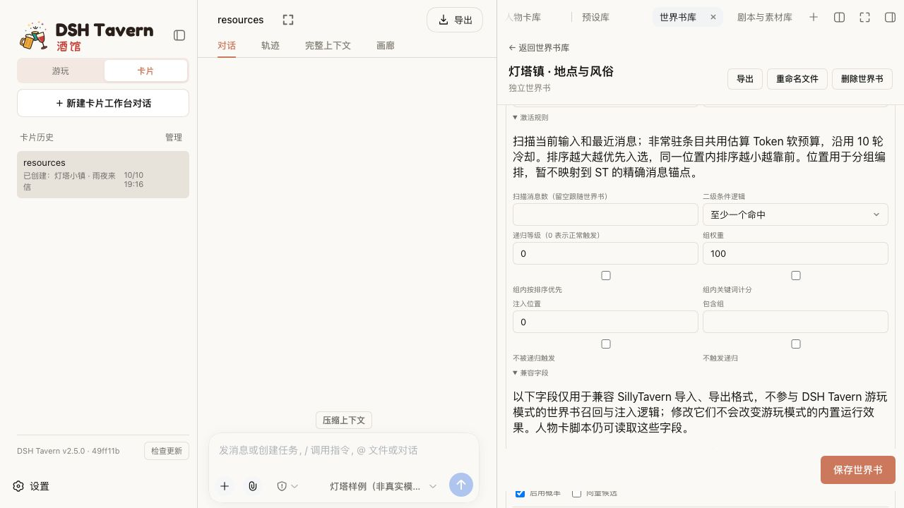
世界书高级兼容字段 · 排序、位置、深度、概率与递归等字段可以保留；能保存字段不代表所有原版运行语义均已实现。原创公开样例 · 灯塔小镇（CC0） · 2026-10-10 · 点击图片放大实际应用截图 · DSH 0.1.5-rc.2 / DSH Tavern 2.5.0 · 49ff11b。样例说明 ↗ · 下载样例人物卡
在哪里
界面：兼容字段 / 指南
如何使用
- 在兼容字段中查看排序、位置、深度、概率、递归等配置。
- 需要修改时先区分保存字段与实际召回效果。
- 遇到差异时，结合实际条目与游戏结果检查。
结果与生效范围
未知字段和 extensions 等数据可被保留。
注意事项
不能据此承诺原酒馆的全部运行语义；silly 模式已停用。
相关说明
配置第一个文字模型
文字模型负责生成故事。开始第一局前，需要有可用的模型服务。
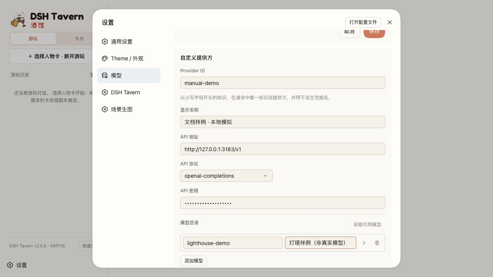
配置文字模型 · 本地演示模型的服务地址、模型名称和设置入口。密钥为无效测试占位值，不含真实凭据。原创公开样例 · 灯塔小镇（CC0） · 2026-10-10 · 点击图片放大实际应用截图 · DSH 0.1.5-rc.2 / DSH Tavern 2.5.0 · 49ff11b。样例说明 ↗ · 下载样例人物卡
在哪里
DSH：设置 → 模型
如何使用
- 打开左侧设置 → 模型。
- 按使用的服务填写地址、API 密钥并选择模型。
- 保存后返回酒馆，使用已配置的模型开始游玩。
结果与生效范围
发送行动后，模型返回新的故事正文。
注意事项
模型可能产生服务费用。不要分享密钥或带鉴权信息的访问地址。这里不需要同时配置外部预设、生图或后台独立模型。
相关说明
导入与导出人物卡
人物卡支持 PNG / JSON 导入，导出为 JSON。
选择人物卡与导入存档 · 选卡器列出公开样例人物卡及剧本绑定状态；“导入存档”菜单可导入 DSH Tavern 存档（.dshsave）或 SillyTavern 聊天记录（.jsonl）。同一张卡可以创建不同游戏。原创公开样例 · 灯塔小镇（CC0） · 2026-10-10 · 点击图片放大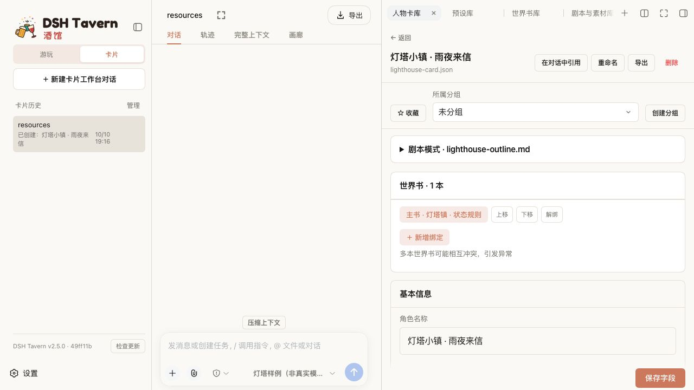
人物卡文件管理 · 人物卡详情顶部提供在对话中引用、重命名、导出和删除；下方查看剧本、世界书与扩展。删除前需确认影响。原创公开样例 · 灯塔小镇（CC0） · 2026-10-10 · 点击图片放大实际应用截图 · DSH 0.1.5-rc.2 / DSH Tavern 2.5.0 · 49ff11b。样例说明 ↗ · 下载样例人物卡
在哪里
界面：人物卡库 / 选卡器
如何使用
- 打开人物卡库或选卡器，选择导入。
- 选择 PNG 或 JSON 人物卡文件，导入后查看内容。
- 需要保存或分享卡时，使用 JSON 导出。
结果与生效范围
导入的卡可以编辑、用于新开局，或引用到卡片工作台。
注意事项
PNG 导入能力不等于 PNG 导出能力；导入成功也不代表卡内所有脚本可执行。
相关说明
完成第一次游玩
第一次游玩只需要一张人物卡和一个可用的文字模型。
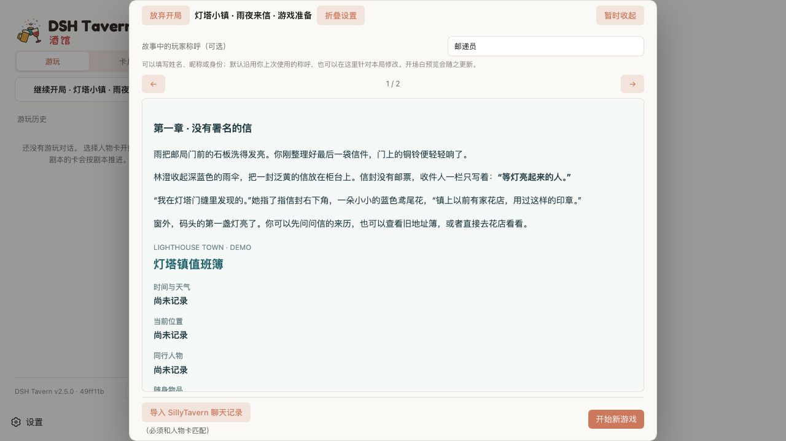
选择开场 · 选择人物卡后先预览开场：用左右箭头切换备选开场，可顺便填写本局玩家称呼，再点击“开始新游戏”。原创公开样例 · 灯塔小镇（CC0） · 2026-10-10 · 点击图片放大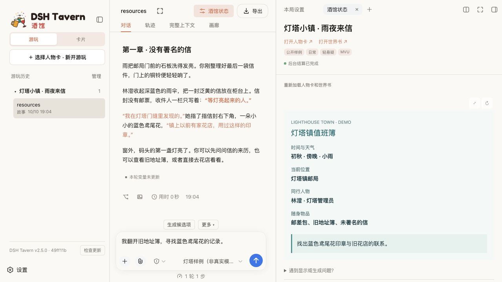
输入行动与对白 · 在正文下方输入本轮想做的事，选择文字模型后发送；不必先生成候选项。原创公开样例 · 灯塔小镇（CC0） · 2026-10-10 · 点击图片放大实际应用截图 · DSH 0.1.5-rc.2 / DSH Tavern 2.5.0 · 49ff11b。样例说明 ↗ · 下载样例人物卡
在哪里
界面：新建游玩
如何使用
- 导入 PNG / JSON 人物卡，选择新建游玩。
- 预览开场白；有多个开场时前后切换选择。
- 按需要填写故事中的玩家称呼，确认开场。
- 阅读正文后直接输入行动，或点选候选追加到输入框、修改后发送。
结果与生效范围
你会得到新的故事正文，并可继续下一轮。
注意事项
长期偏好不在开场准备中。生图、外部预设、系统提示词和其他高级功能都可以先跳过。
相关说明
认识界面
先按当前任务认识界面，不必一次记住所有面板。
游玩界面 · 左侧继续游戏，中间阅读正文和输入行动，右侧查看状态。正文由本地模拟服务提供，状态栏是人物卡自带的只读面板，不代表模型质量。原创公开样例 · 灯塔小镇（CC0） · 2026-10-10 · 点击图片放大实际应用截图 · DSH 0.1.5-rc.2 / DSH Tavern 2.5.0 · 49ff11b。样例说明 ↗ · 下载样例人物卡
在哪里
指南
如何使用
- 左侧：找到游玩历史或卡片工作台历史，继续已有对话。
- 中间：游玩时阅读正文和输入行动；卡片模式中与 Agent 讨论资源。
- 右侧：游玩时查看酒馆状态；卡片模式中查看并操作资源库。
结果与生效范围
围绕“找对话 → 阅读或讨论 → 查看状态或资源”使用界面即可。
注意事项
人物卡自身会影响正文美化和状态栏外观；不是每张卡都有相同的数值面板。
相关说明
哪些设置可以先不管
先把故事玩起来。高级设置是可选能力，不是新手清单。
默认模型与新游戏默认 · 设置 → DSH Tavern 中分别为前台、后台、卡片工作台和生图 Agent 选择默认模型；新游戏开局时继承，已有对话保持当前配置。下方“新游戏默认”可在开局后到本局设置单独修改。原创公开样例 · 灯塔小镇（CC0） · 2026-10-10 · 点击图片放大实际应用截图 · DSH 0.1.5-rc.2 / DSH Tavern 2.5.0 · 49ff11b。样例说明 ↗ · 下载样例人物卡
在哪里
指南
如何使用
- 完成文字模型配置，导入卡并开局。
- 先用自由输入、候选、重写和 Guide 调整眼前的故事。
- 遇到跨局偏好、状态栏格式或配图需求时，再查相应高级功能。
结果与生效范围
不使用外部预设、长期偏好或生图，也可以正常进行文字游玩。
注意事项
后台人物设计是按条件运行的能力，不需要你在开局前逐个人物配置。
相关说明
选择人物卡与独立开局
同一张人物卡可以开启多局独立游戏，分别保存故事。
选择人物卡与导入存档 · 选卡器列出公开样例人物卡及剧本绑定状态；“导入存档”菜单可导入 DSH Tavern 存档（.dshsave）或 SillyTavern 聊天记录（.jsonl）。同一张卡可以创建不同游戏。原创公开样例 · 灯塔小镇（CC0） · 2026-10-10 · 点击图片放大实际应用截图 · DSH 0.1.5-rc.2 / DSH Tavern 2.5.0 · 49ff11b。样例说明 ↗ · 下载样例人物卡
在哪里
界面：新建游玩
如何使用
- 选择新建游玩，找到要使用的人物卡。
- 查看开场并确认，以这张卡开始一局。
- 想体验另一条故事时，用同一张卡再新开一局。
结果与生效范围
不同游戏在历史中分别管理，不会合成同一段剧情。
注意事项
人物卡是否绑定剧本，会影响新局的推进方式。修改卡或绑定关系后，应通过新局体验对应内容。
相关说明
预览与选择开场白
人物卡可以提供默认开场和备选开场，你可以先看再选。
选择开场 · 选择人物卡后先预览开场：用左右箭头切换备选开场，可顺便填写本局玩家称呼，再点击“开始新游戏”。原创公开样例 · 灯塔小镇（CC0） · 2026-10-10 · 点击图片放大实际应用截图 · DSH 0.1.5-rc.2 / DSH Tavern 2.5.0 · 49ff11b。样例说明 ↗ · 下载样例人物卡
在哪里
界面：开局选择器
如何使用
- 进入人物卡开场预览。
- 如果有多个开场，用前后切换查看内容。
- 确定希望进入的情境，选择“以此开场”。
结果与生效范围
游戏从选中的开场开始。
注意事项
这不是游玩后切换历史正文版本的工具；开场选择与当前正文重写是不同操作。
相关说明
设置与修改玩家称呼
玩家称呼是故事中如何称呼你，不是长期偏好。
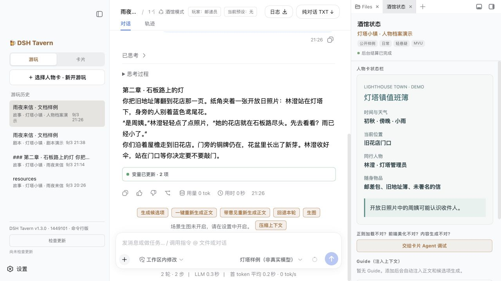
本局玩家称呼 · 游玩顶部“本局设置”里的“玩家称呼”显示本局称呼“邮递员”，离开输入框后保存，只用于后续内容。图中未修改既有剧情，也不是长期偏好设置。原创公开样例 · 灯塔小镇（CC0） · 2026-10-10 · 点击图片放大实际应用截图 · DSH 0.1.5-rc.2 / DSH Tavern 2.5.0 · 49ff11b。样例说明 ↗ · 下载样例人物卡
在哪里
界面：开局 / 玩家称呼操作
如何使用
- 开场准备中填写姓名、昵称或身份；不填时使用默认称呼。
- 确认开场预览中的称呼。
- 游玩中需要调整时，使用玩家称呼操作修改。
结果与生效范围
当前游戏使用你设置的玩家称呼。
注意事项
玩家人设随人物卡设定：可以让卡片 Agent 把本局玩家的身份、背景和关系写入人物卡。长期游玩与写作偏好则使用长期偏好。修改称呼不等于重写人设或历史剧情。
相关说明
自由输入行动与对白
可以直接输入行为、对白或剧情要求，不依赖系统候选。
输入行动与对白 · 在正文下方输入本轮想做的事，选择文字模型后发送；不必先生成候选项。原创公开样例 · 灯塔小镇（CC0） · 2026-10-10 · 点击图片放大实际应用截图 · DSH 0.1.5-rc.2 / DSH Tavern 2.5.0 · 49ff11b。样例说明 ↗ · 下载样例人物卡
在哪里
界面：输入框
如何使用
- 在输入框写下下一步行动或角色对白。
- 确认文字后发送。
- 阅读生成的正文，再继续输入下一轮。
结果与生效范围
故事根据人物卡、当前剧情和你的输入推进。
注意事项
想让要求持续生效时，使用 Guide；一次性输入与持续指导不是同一件事。
相关说明
生成并选择行动候选
不知道下一步做什么时，可以借助人物行动和场景变化候选。
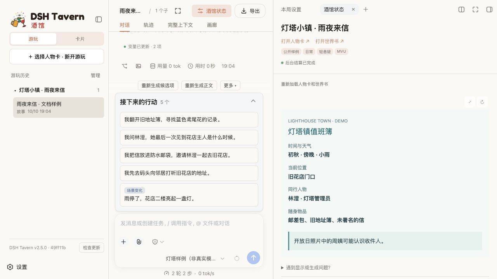
行动候选 · “接下来的行动”逐条列出人物行动，场景变化单独标注；也可以直接自由输入。由独立本地模拟服务提供预写内容，工具与界面由实际应用执行；不代表真实模型质量。原创公开样例 · 灯塔小镇（CC0） · 2026-10-10 · 点击图片放大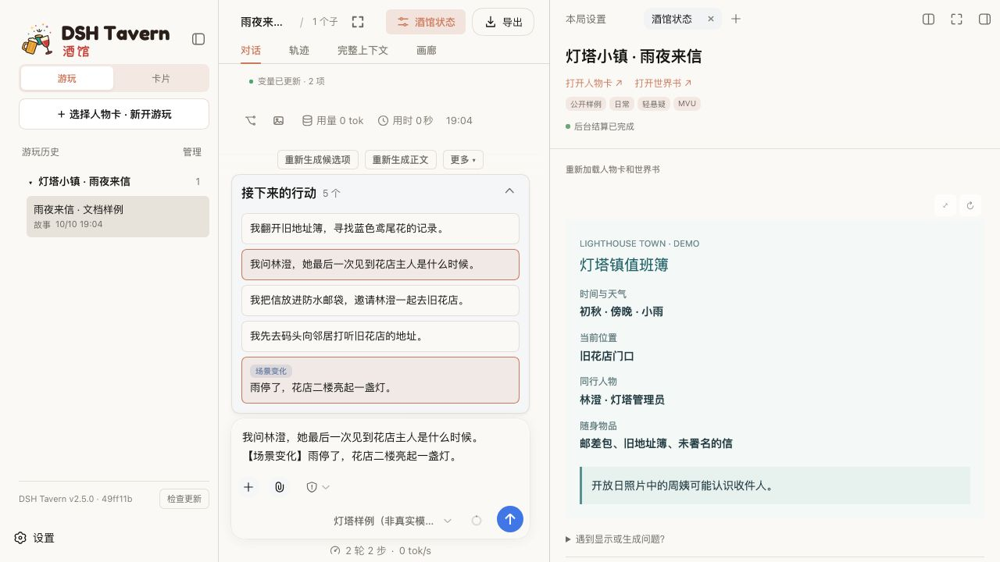
点选候选追加到输入框 · 点一下候选就追加到输入框，可以连选多项（图中选了一条行动和一条场景变化），再点一次会取消并从输入框移除；发送前仍可修改。原创公开样例 · 灯塔小镇（CC0） · 2026-10-10 · 点击图片放大实际应用截图 · DSH 0.1.5-rc.2 / DSH Tavern 2.5.0 · 49ff11b。样例说明 ↗ · 下载样例人物卡
在哪里
界面：生成候选项
如何使用
- 点回复下方的“生成候选项”，查看建议。
- 点一下候选，它就追加到输入框；可以连续点多项，再点一次已选的候选会取消并从输入框移除。
- 按自己的想法修改输入框里的文字，再发送；发送后候选面板才收起。
结果与生效范围
候选先成为可编辑的输入，不会替你直接执行行动。
注意事项
候选与正文分开生成；不满意候选时无需重写正文。剧本游玩只给一个更贴近主线的推荐候选。
相关说明
按要求重新生成候选
重新生成候选只更换行动建议，不改写已经满意的故事正文。
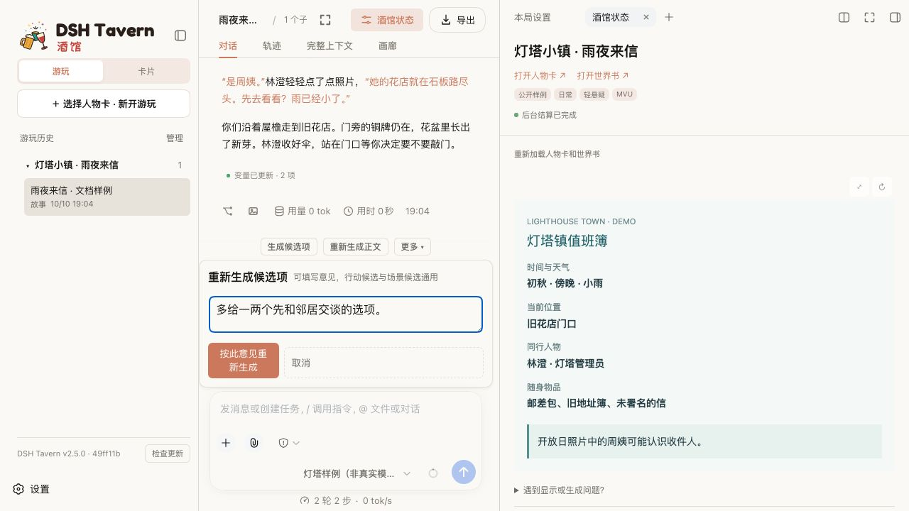
按意见重生成候选 · “重新生成候选项”可填写意见，行动候选与场景候选通用；这里修改候选建议，不是重写已经生成的正文。图中意见尚未提交。原创公开样例 · 灯塔小镇（CC0） · 2026-10-10 · 点击图片放大实际应用截图 · DSH 0.1.5-rc.2 / DSH Tavern 2.5.0 · 49ff11b。样例说明 ↗ · 下载样例人物卡
在哪里
界面：候选操作
如何使用
- 在候选操作中选择重新生成。
- 需要明确方向时，附上希望调整的意见。
- 等待生成完成，点选候选追加到输入框，修改后再发送。
结果与生效范围
得到新的一组候选建议。
注意事项
候选生成也会调用模型；失败时查看当前提示，不要把候选失败误认为正文丢失。
相关说明
重新生成当前正文
不满意当前回复时，可以直接重写，也可以先告诉模型哪里需要改变。
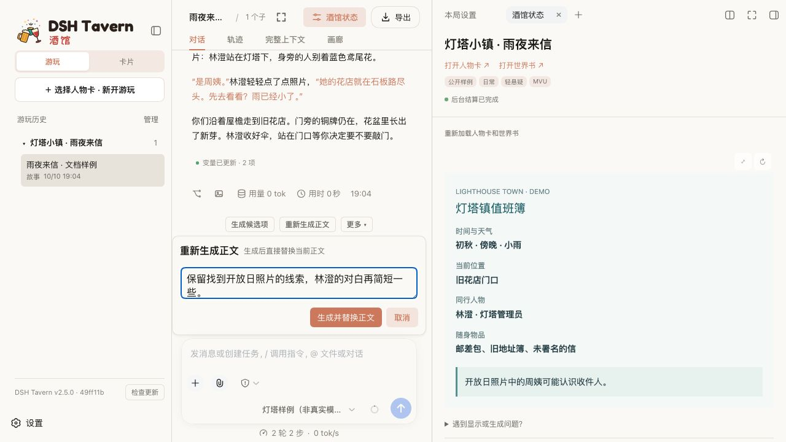
带意见重写正文 · 填写想保留与想调整的内容后，可重新生成当前正文；图中的重写意见尚未提交。原创公开样例 · 灯塔小镇（CC0） · 2026-10-10 · 点击图片放大实际应用截图 · DSH 0.1.5-rc.2 / DSH Tavern 2.5.0 · 49ff11b。样例说明 ↗ · 下载样例人物卡
在哪里
界面：正文操作
如何使用
- 在当前正文操作中选择重新生成。
- 留空直接重写；有具体要求时填写意见，例如“保留事件，但减少旁白解释”。
- 确认并等待生成，阅读新的当前正文。
结果与生效范围
当前回合得到重新生成的正文。
注意事项
操作针对当前回合，不是任意历史节点的分支编辑。新的生成可能产生模型费用。
相关说明
回退当前回合
回退用于撤回当前回合；正在生成时会先停止前台，后台尽力取消和恢复。
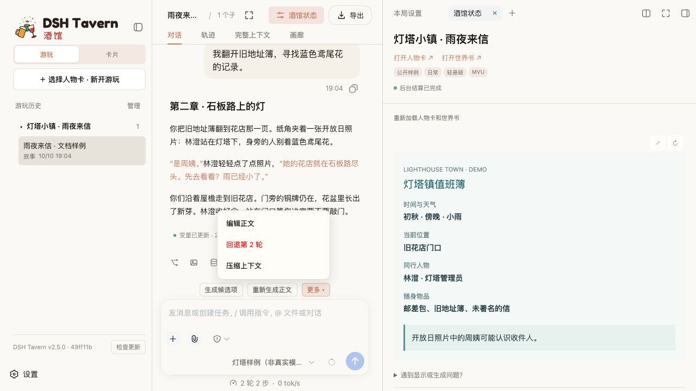
“更多”菜单 · “更多”菜单提供编辑正文、“回退第 N 轮”和压缩上下文；回退针对最近一轮输入与正文，不是任意历史节点。图中仅展示入口。原创公开样例 · 灯塔小镇（CC0） · 2026-10-10 · 点击图片放大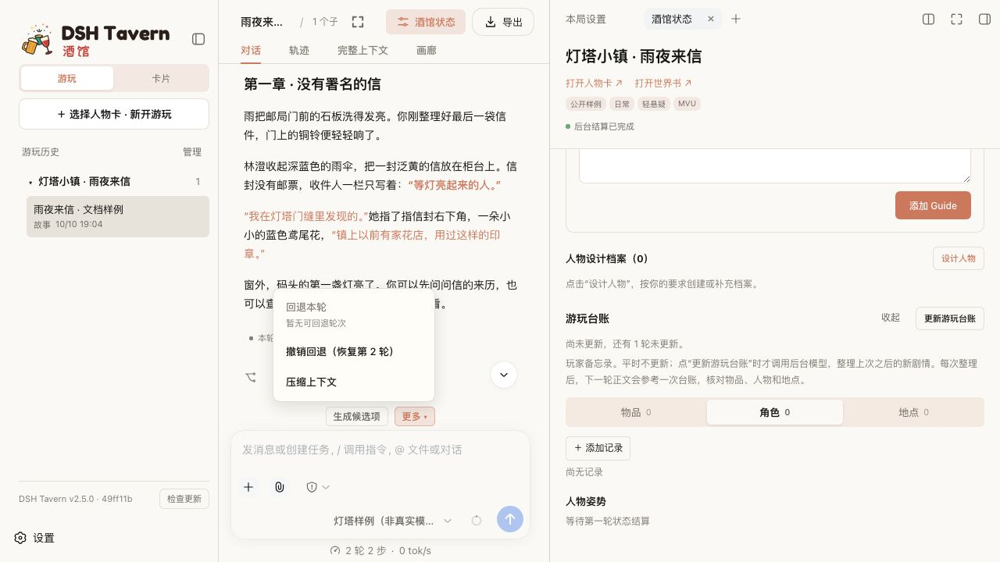
撤销回退 · 回退错了时，在“更多”菜单选择“撤销回退”即可恢复刚才回退掉的那一轮。图为实际回退一轮后的菜单，随后已撤销恢复。原创公开样例 · 灯塔小镇（CC0） · 2026-10-10 · 点击图片放大实际应用截图 · DSH 0.1.5-rc.2 / DSH Tavern 2.5.0 · 49ff11b。样例说明 ↗ · 下载样例人物卡
在哪里
界面：回合操作
如何使用
- 打开输入框上方的“更多”菜单，选择“回退本轮”。
- 确认要回退的是眼前这轮内容，再执行。
- 查看回退后的正文与状态，重新输入行动。
- 回退错了，可以在“更多”菜单选“撤销回退（恢复第 N 轮）”恢复正文和状态；之后有新的操作，这个恢复点就失效。
结果与生效范围
在回退后的有效剧情基础上继续游玩。
注意事项
正文回退不等待后台任务退出。后台状态与正文可能不同步；历史快照或后台消息无法恢复时会尽力继续，回退后请检查状态。不提供任意历史节点的存档树，也不要把回退当作数据备份。
相关说明
持续 Guide
Guide 保存当前游戏持续生效的剧情、写作或数值要求。
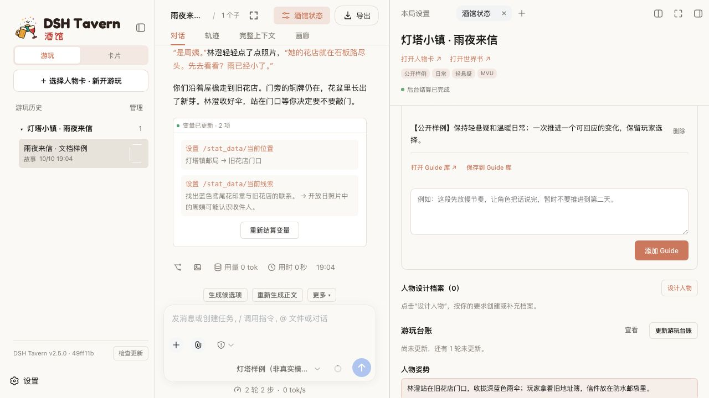
Guide 与人物姿势 · 右侧 Guide 持续约束正文、候选和变量结算；下方人物姿势是后台结算结果。由独立本地模拟服务提供预写内容，工具与界面由实际应用执行；不代表真实模型质量。原创公开样例 · 灯塔小镇（CC0） · 2026-10-10 · 点击图片放大实际应用截图 · DSH 0.1.5-rc.2 / DSH Tavern 2.5.0 · 49ff11b。样例说明 ↗ · 下载样例人物卡
在哪里
界面：酒馆状态 → Guide
如何使用
- 打开酒馆状态中的 Guide。
- 添加明确要求，例如“本局放慢感情推进，少用旁白总结”。
- 后续可查看、添加或删除这些指导。
结果与生效范围
正文、候选生成和后台变量结算都会使用当前有效的 Guide；涉及数值尺度的要求（如“好感度涨得慢一点”）会在变量结算时遵循。
注意事项
Guide 针对本局，不是跨局长期偏好；修改它不会自动改写已经发生的故事。
相关说明
阅读正文、思考过程与复制消息
正文区用来阅读故事，并在需要时查看模型返回的思考内容。
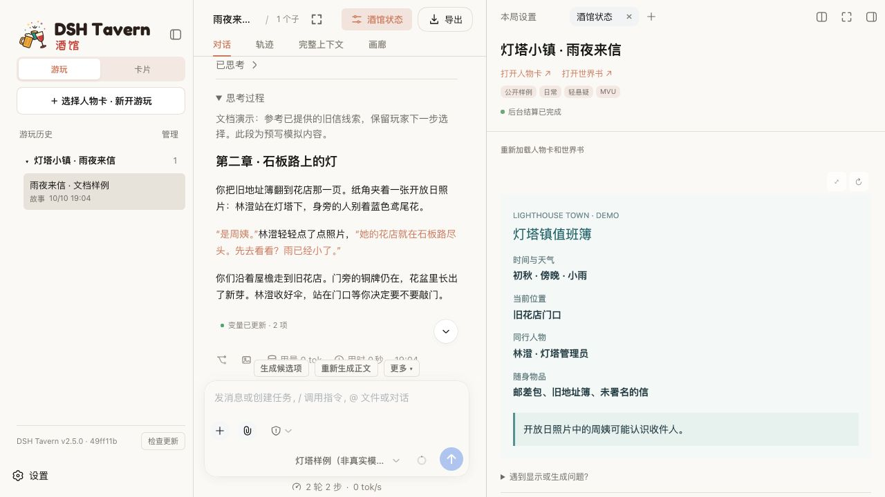
正文与思考过程分开展示 · 思考过程默认隐藏；图中已在设置 → DSH Tavern 关闭“隐藏上下文注入和思考过程”，再点开“思考过程”查看。思考文字是明确标注的本地模拟内容。原创公开样例 · 灯塔小镇（CC0） · 2026-10-10 · 点击图片放大实际应用截图 · DSH 0.1.5-rc.2 / DSH Tavern 2.5.0 · 49ff11b。样例说明 ↗ · 下载样例人物卡
在哪里
界面：消息区域
如何使用
- 阅读当前正文，按人物卡的展示方式查看内容。
- 思考过程和上下文注入默认隐藏；要查看时，在设置 → DSH Tavern 关闭“隐藏上下文注入和思考过程”，之后按需展开或折叠。
- 需要复用自己的输入时，使用用户消息的复制操作。
结果与生效范围
可以把阅读正文和查看过程分开。
注意事项
只有模型实际返回思考内容时才能显示；默认隐藏或模型没有返回时都看不到，不要当作生成故障。
相关说明
查看人物姿势与场景状态
人物姿势和场景信息由后台整理，在右侧查看。
Guide 与人物姿势 · 右侧 Guide 持续约束正文、候选和变量结算；下方人物姿势是后台结算结果。由独立本地模拟服务提供预写内容，工具与界面由实际应用执行；不代表真实模型质量。原创公开样例 · 灯塔小镇（CC0） · 2026-10-10 · 点击图片放大实际应用截图 · DSH 0.1.5-rc.2 / DSH Tavern 2.5.0 · 49ff11b。样例说明 ↗ · 下载样例人物卡
在哪里
界面：酒馆状态 / 自动
如何使用
- 生成新一轮故事后，打开酒馆状态。
- 等待后台结算，查看人物位置、动作或姿势等信息。
- 如果显示失败，查看提示并按需重试。
结果与生效范围
右侧信息帮助你对照当前故事状态。
注意事项
后台需要执行时间；普通场景总结不等于每张卡都具有完整数值面板。
相关说明
MVU 变量与常驻状态栏
MVU 卡将变量更新放在后台，状态栏可以常驻右侧展示。
游玩界面 · 左侧继续游戏，中间阅读正文和输入行动，右侧查看状态。正文由本地模拟服务提供，状态栏是人物卡自带的只读面板，不代表模型质量。原创公开样例 · 灯塔小镇（CC0） · 2026-10-10 · 点击图片放大 变量变更前后值 · 展开正文下方回执，可以比较“当前位置”和“当前线索”的旧值与新值。由独立本地模拟服务提供预写内容，工具与界面由实际应用执行；不代表真实模型质量。原创公开样例 · 灯塔小镇（CC0） · 2026-10-10 · 点击图片放大
变量变更前后值 · 展开正文下方回执，可以比较“当前位置”和“当前线索”的旧值与新值。由独立本地模拟服务提供预写内容，工具与界面由实际应用执行；不代表真实模型质量。原创公开样例 · 灯塔小镇（CC0） · 2026-10-10 · 点击图片放大实际应用截图 · DSH 0.1.5-rc.2 / DSH Tavern 2.5.0 · 49ff11b。样例说明 ↗ · 下载样例人物卡
在哪里
界面 / 自动
如何使用
- 导入具有相应 MVU 结构和展示资源的人物卡。
- 正常游玩，等待本轮后台变量结算。
- 在右侧查看状态栏，在正文下方查看更新回执。
结果与生效范围
正文负责讲故事，状态栏依据变量展示当前结果。
注意事项
需要卡片自身具备相应资源，不能让任意普通卡自动拥有完整 MVU 功能。
相关说明
阅读本轮变量结算回执
变量回执说明这一轮更新了什么，以及哪些项目未能完成。
变量变更前后值 · 展开正文下方回执，可以比较“当前位置”和“当前线索”的旧值与新值。由独立本地模拟服务提供预写内容，工具与界面由实际应用执行；不代表真实模型质量。原创公开样例 · 灯塔小镇（CC0） · 2026-10-10 · 点击图片放大实际应用截图 · DSH 0.1.5-rc.2 / DSH Tavern 2.5.0 · 49ff11b。样例说明 ↗ · 下载样例人物卡
在哪里
界面：正文下方变量回执
如何使用
- 展开正文下方的变量回执。
- 查看变更前后值、原因和脚本联动。
- 区分已更新、未变化、部分成功、过期或中断；有失败项时先查看原因。
结果与生效范围
可以把正文内容与实际写入的状态变化对照。
注意事项
“未变化”不必然是错误；部分成功也不代表所有变量都已更新。
相关说明
重试后台结算
后台状态结算失败，可以单独重试，不必重写已经满意的正文。
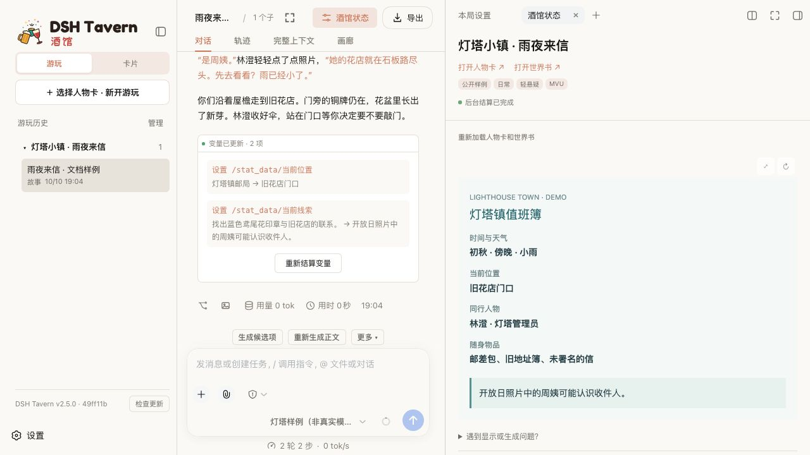
查看后台结算结果 · 图中是正常结算后的变量回执与“后台结算已完成”状态，回执下方有“重新结算变量”。异常时的重试方法见正文；这里不展示报错状态。原创公开样例 · 灯塔小镇（CC0） · 2026-10-10 · 点击图片放大实际应用截图 · DSH 0.1.5-rc.2 / DSH Tavern 2.5.0 · 49ff11b。样例说明 ↗ · 下载样例人物卡
在哪里
界面：状态栏 / 变量回执
如何使用
- 在状态栏或变量回执中找到失败提示。
- 确认问题属于后台结算，再使用对应重试操作。
- 等待执行完成，重新查看状态与回执。
结果与生效范围
成功后，相关状态展示更新。
注意事项
重试可能调用后台模型。若持续失败，保留错误与日志，而不是重复重写正文。
相关说明
导入小说、剧本和素材
小说、剧本和大纲可以作为素材导入，再用于游玩或制卡。
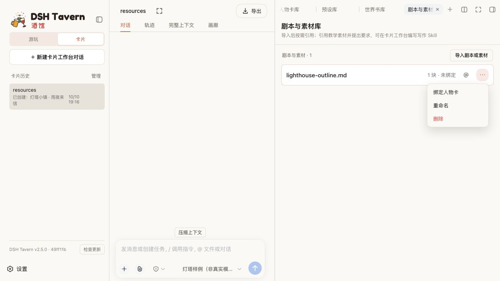
剧本文件与专属人物卡 · 在库中导入素材，用“@”引用到对话，“⋯”菜单可绑定人物卡、重命名或删除；图中未执行删除。原创公开样例 · 灯塔小镇（CC0） · 2026-10-10 · 点击图片放大实际应用截图 · DSH 0.1.5-rc.2 / DSH Tavern 2.5.0 · 49ff11b。样例说明 ↗ · 下载样例人物卡
在哪里
界面：剧本库
如何使用
- 在剧本与素材库导入 TXT、Markdown、JSON 或 EPUB。
- 查看导入后的工作版内容。
- 按用途选择绑定人物卡，或引用到工作台。
结果与生效范围
素材进入资源库，可以按需读取与处理。
注意事项
人物卡内直接导入剧本的入口只支持 TXT、Markdown、EPUB，不包含 JSON。
相关说明
绑定与解绑专属人物卡
剧本与人物卡是一对一绑定，绑定后新局会按剧本推进。
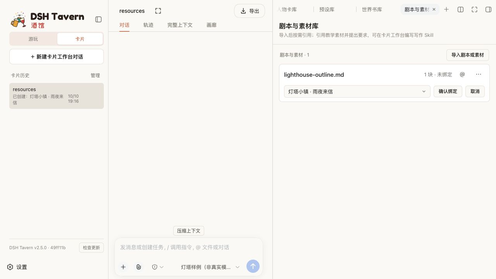
为剧本绑定人物卡 · 在剧本与素材库的“⋯”菜单选择“绑定人物卡”，选中未绑定的人物卡后确认；不是把素材塞进对话就自动绑定。原创公开样例 · 灯塔小镇（CC0） · 2026-10-10 · 点击图片放大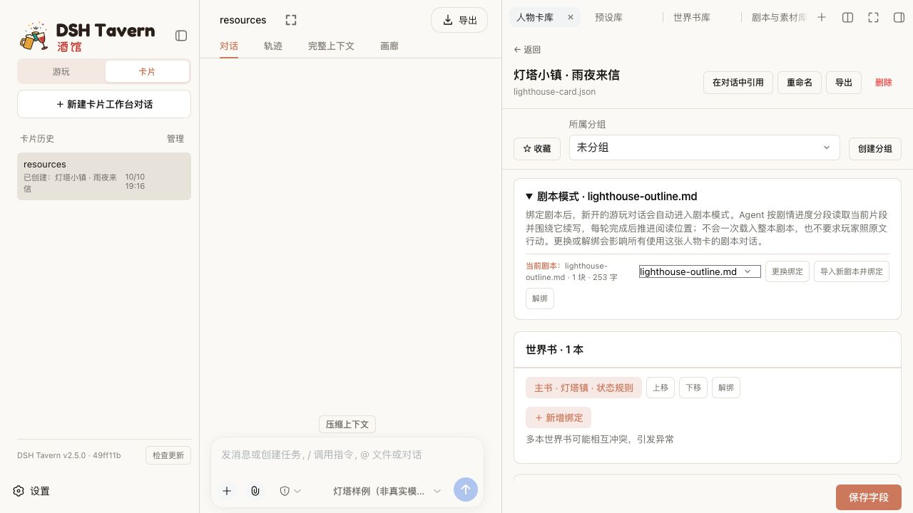
已绑定剧本与解绑入口 · 人物卡详情展开“剧本模式”，显示当前剧本、块数、字数，以及更换绑定、导入新剧本并绑定和解绑。原创公开样例 · 灯塔小镇（CC0） · 2026-10-10 · 点击图片放大实际应用截图 · DSH 0.1.5-rc.2 / DSH Tavern 2.5.0 · 49ff11b。样例说明 ↗ · 下载样例人物卡
在哪里
界面：剧本库 / 人物卡
如何使用
- 在剧本与素材库或人物卡详情中选择绑定。
- 选择符合条件、尚未绑定的对应人物卡。
- 确认关联，从人物卡新开局；不再需要时解除绑定。
结果与生效范围
新游戏使用对应剧本作为主线参考。
注意事项
解绑与删除素材不同；不要把工作台中的引用当作剧本绑定。
相关说明
绑定剧本后开始游戏
绑定剧本后，从人物卡新开一局即可沿着故事素材推进。
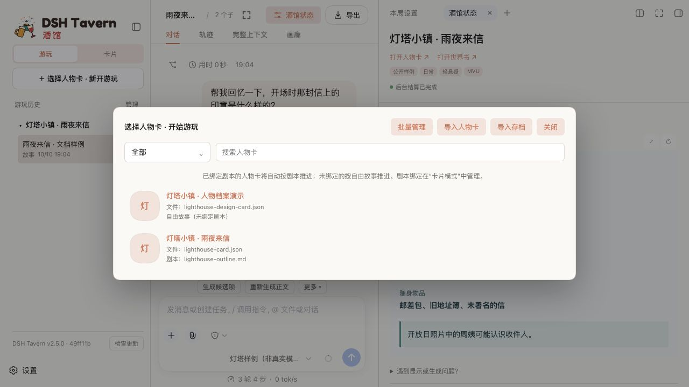
绑定剧本的新局 · 选卡器中已绑定剧本的人物卡显示“剧本：lighthouse-outline.md”，从它新开游戏会按剧本推进。原创公开样例 · 灯塔小镇（CC0） · 2026-10-10 · 点击图片放大实际应用截图 · DSH 0.1.5-rc.2 / DSH Tavern 2.5.0 · 49ff11b。样例说明 ↗ · 下载样例人物卡
在哪里
界面：人物卡 / 剧本库
如何使用
- 导入小说、剧本或大纲。
- 将剧本与对应人物卡绑定。
- 从这张卡新开一局，确认开场后开始行动。
结果与生效范围
新游戏会参考已绑定的剧本，不需要另外操作一套游玩界面。
注意事项
引用到工作台并不等于绑定；新建游戏才读取对应绑定关系。
相关说明
跟随主线与偏离主线
剧本提供主线参考，但不会取消你的自由行动。
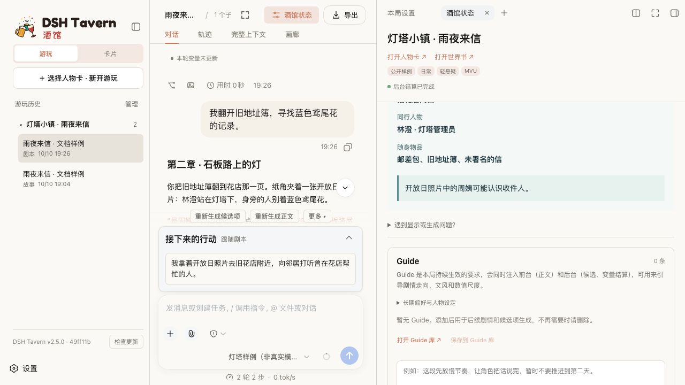
剧本推荐行动 · 剧本模式的候选标注“跟随剧本”，只给一个推荐行动，同时保留自由输入。由独立本地模拟服务提供预写内容，工具与界面由实际应用执行；不代表真实模型质量。原创公开样例 · 灯塔小镇（CC0） · 2026-10-10 · 点击图片放大实际应用截图 · DSH 0.1.5-rc.2 / DSH Tavern 2.5.0 · 49ff11b。样例说明 ↗ · 下载样例人物卡
在哪里
界面 / 自动
如何使用
- 阅读当前剧情与推荐候选。
- 想贴近主线时，使用候选作为行动参考。
- 想尝试不同发展时，直接输入自己的行动；需要换到剧本的另一处时，在剧本进度里选“从这里继续”。
结果与生效范围
故事会结合你的选择和附近的剧本片段继续生成。
注意事项
不会保证逐字复刻小说；偏离主线后，进度表示下一轮从哪里读剧本，而不是剧情已经发生到哪里。
相关说明
查看剧本进度并选择继续位置
酒馆状态里的剧本进度按块列出剧本，可以指定下一轮从哪一块继续，并调整每轮推进字数。
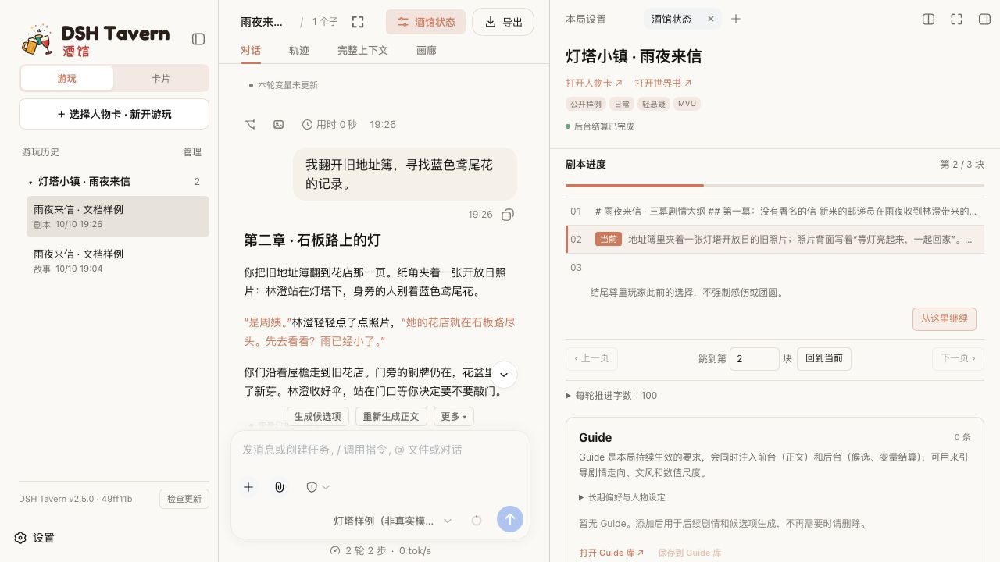
剧本进度与从这里继续 · 酒馆状态的“剧本进度”按块列出剧本，标出当前块；展开某块可点“从这里继续”，也可翻页或跳到第 N 块。图中把每轮推进字数改为 100，原创短大纲被切成 3 块。原创公开样例 · 灯塔小镇（CC0） · 2026-10-10 · 点击图片放大实际应用截图 · DSH 0.1.5-rc.2 / DSH Tavern 2.5.0 · 49ff11b。样例说明 ↗ · 下载样例人物卡
在哪里
界面：酒馆状态 → 剧本进度
如何使用
- 打开右侧酒馆状态的剧本进度，按块查看剧本位置与内容；用翻页或“跳到第 N 块”找到想要的位置。
- 在某一块上点“从这里继续”，下一轮从这一块开始读剧本。
- 需要时展开推进字数设置，填写每轮推进字数并保存，默认 500，可设为 100–10000 的整数；调整后全文重新切片，原文阅读位置不变。
结果与生效范围
每个游玩会话可自行控制剧本读到哪里和推进节奏。
注意事项
字数按汉字计数，尽量在句末或段落末切分；生成或结算期间不能修改。“从这里继续”只改变下一轮参考的剧本位置，不会改写已经写好的正文。
相关说明
剧本怎样参与每轮生成
剧本按片段参与生成，不会每轮把整本小说塞进上下文。
剧本进度与从这里继续 · 酒馆状态的“剧本进度”按块列出剧本，标出当前块；展开某块可点“从这里继续”，也可翻页或跳到第 N 块。图中把每轮推进字数改为 100，原创短大纲被切成 3 块。原创公开样例 · 灯塔小镇（CC0） · 2026-10-10 · 点击图片放大实际应用截图 · DSH 0.1.5-rc.2 / DSH Tavern 2.5.0 · 49ff11b。样例说明 ↗ · 下载样例人物卡
在哪里
自动 / 指南
怎样参与游玩
- 先区分剧本素材与当前游戏正文：素材是参考，正文是已经发生的剧情。
- 系统根据记录的进度读取附近片段。
- 需要确认参考范围时，查看右侧进度和片段。
结果与生效范围
较长素材可以随故事推进逐步参与，而不是要求你手动粘贴全部内容。
注意事项
片段参与不保证剧情严格照原作发展。更深入的记忆机制可在高级功能中查阅。
相关说明
继续与整理历史对话
游玩历史和卡片工作台历史分别管理。
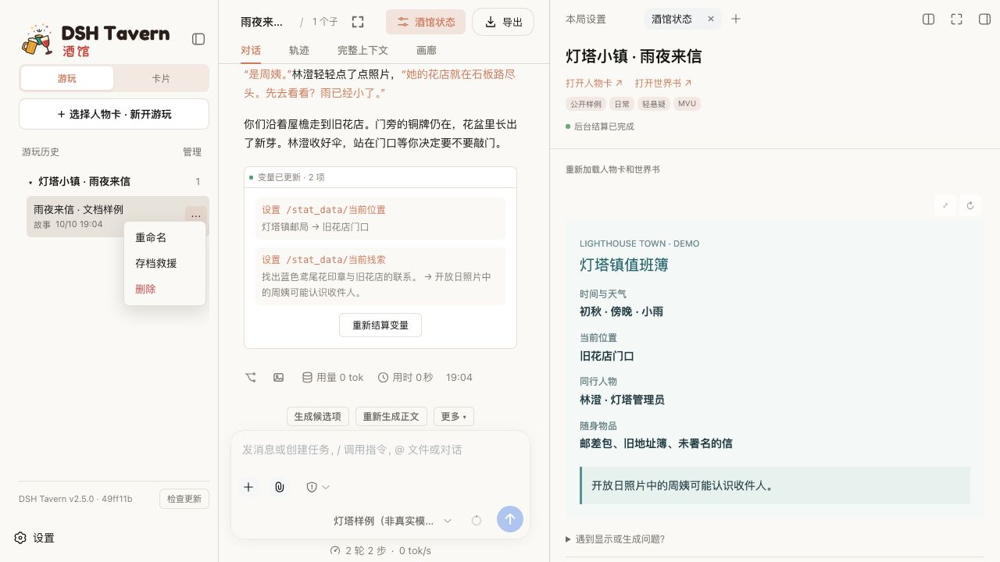
继续与整理对话 · 游玩历史条目的“⋯”菜单提供重命名、存档救援和删除；删除对话不等于删除人物卡。原创公开样例 · 灯塔小镇（CC0） · 2026-10-10 · 点击图片放大实际应用截图 · DSH 0.1.5-rc.2 / DSH Tavern 2.5.0 · 49ff11b。样例说明 ↗ · 下载样例人物卡
在哪里
界面：左侧历史
如何使用
- 从左侧选择相应类型的历史。
- 点击对话继续；需要整理时重命名。
- 移除前确认不再需要，并先保存重要内容。
结果与生效范围
可以继续故事，或回到之前的资源讨论。
注意事项
删除对话与删除人物卡不同，不应互相当作替代操作。
相关说明
导出故事与存档
导出有三种：故事正文用于阅读，存档用于换机器或备份后继续玩，日志用于排错。
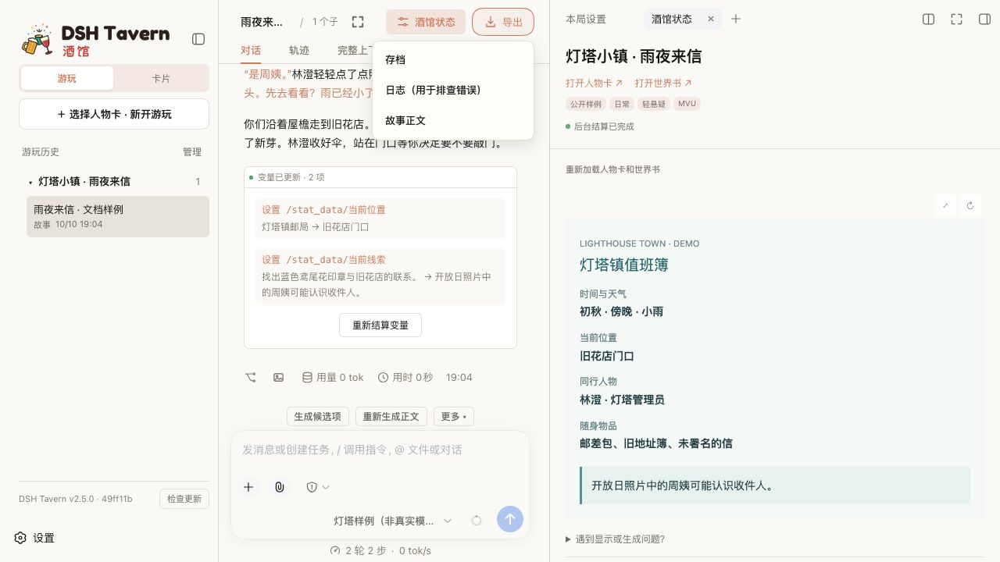
导出存档、日志与故事正文 · 顶部“导出”菜单提供存档（.dshsave，可导入为新游戏继续玩）、日志（用于排查错误）和故事正文（Markdown，有配图时为 zip）；分享日志前需要检查隐私。原创公开样例 · 灯塔小镇（CC0） · 2026-10-10 · 点击图片放大选择人物卡与导入存档 · 选卡器列出公开样例人物卡及剧本绑定状态；“导入存档”菜单可导入 DSH Tavern 存档（.dshsave）或 SillyTavern 聊天记录（.jsonl）。同一张卡可以创建不同游戏。原创公开样例 · 灯塔小镇（CC0） · 2026-10-10 · 点击图片放大实际应用截图 · DSH 0.1.5-rc.2 / DSH Tavern 2.5.0 · 49ff11b。样例说明 ↗ · 下载样例人物卡
在哪里
界面：导出操作 / 导入存档
如何使用
- 在游玩顶部打开导出菜单。
- 选择“故事正文”：得到 Markdown，有配图时是 zip，解压后 Markdown 与 images 文件夹放在一起，配图插在对应正文之后。
- 选择“存档”：得到 .dshsave 文件，包含这局的正文、回退历史、人物卡与配图；在选卡界面的“导入存档” → “DSH Tavern 存档（.dshsave）”导入，作为一局新游戏继续玩。
- 从 SillyTavern 带来的聊天记录，在“导入存档” → “SillyTavern 聊天记录（.jsonl）”导入，接着玩。
结果与生效范围
故事正文适合阅读和分享，存档可以在另一台机器或重装后接着玩。
注意事项
导入的存档是一局新游戏，不会覆盖原来的游戏；导出存档暂不包含插件挂的媒体和插件数据。排错请使用日志导出。
相关说明
选择工作台起始任务
工作台先选择任务，再通过对话处理资源。
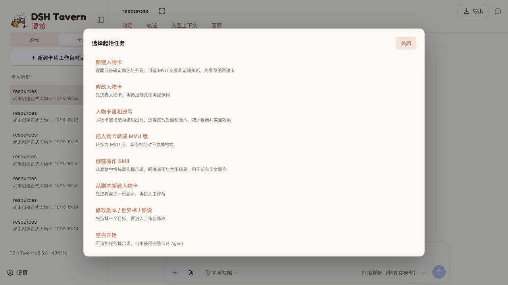
卡片工作台起始任务 · 新建卡片工作台对话时选择起始任务：新建人物卡、修改人物卡、人物卡温和改写、把人物卡转成 MVU 版、创建写作 Skill、从剧本新建人物卡、修改剧本／世界书／预设，或空白开始。界面中 MVU 描述措辞较强；转换后仍须逐卡验证。原创公开样例 · 灯塔小镇（CC0） · 2026-10-10 · 点击图片放大实际应用截图 · DSH 0.1.5-rc.2 / DSH Tavern 2.5.0 · 49ff11b。样例说明 ↗ · 下载样例人物卡
在哪里
界面：新建卡片工作台对话
如何使用
- 新建卡片工作台对话。
- 选择起始任务：新建人物卡（逐题问答确定角色与开场，可选 MVU 变量和前端美化，先看 HTML 草图再建卡）、修改人物卡、人物卡温和改写（被模型拒绝输出时改写为温和版本）、把人物卡转成 MVU 版、从剧本新建人物卡、创建写作 Skill，或修改剧本 / 世界书 / 预设；也可空白开始。
- 选择目标资源，说明想做的修改。
结果与生效范围
任务与资源进入当前 Agent 对话，便于直接开始讨论。
注意事项
长期偏好只从右侧栏进入，不是这里的起始任务。卡片 Agent 创作或修改的人物卡会在创作者备注里署名 DSH Tavern。
相关说明
修改人物卡中不喜欢的内容
不用先懂卡片字段，也可以把不喜欢的设定改得更合口味。
卡片工作台 · 选择“修改人物卡”和目标卡后，在任务提示词后补充要保留和想调整的内容。输入框中的要求是演示草稿，尚未发送，也未修改人物卡。原创公开样例 · 灯塔小镇（CC0） · 2026-10-10 · 点击图片放大实际应用截图 · DSH 0.1.5-rc.2 / DSH Tavern 2.5.0 · 49ff11b。样例说明 ↗ · 下载样例人物卡
在哪里
界面：修改人物卡 / Agent
如何使用
- 选择“修改人物卡”和目标卡。
- 说明不喜欢什么、希望怎么调整、哪些内容必须保留。
- 先查看修改建议，确认后让 Agent 修改工作版。
- 检查结果，再新开一局体验。
结果与生效范围
现有人物卡保留你喜欢的部分，同时按要求调整。
注意事项
修改会改变工作版，不应默认覆盖原版；不要把“讨论建议”当作已经保存。
相关说明
按个人喜好修改世界书、预设和剧本
世界书、预设和剧本也可以通过自然语言修改。
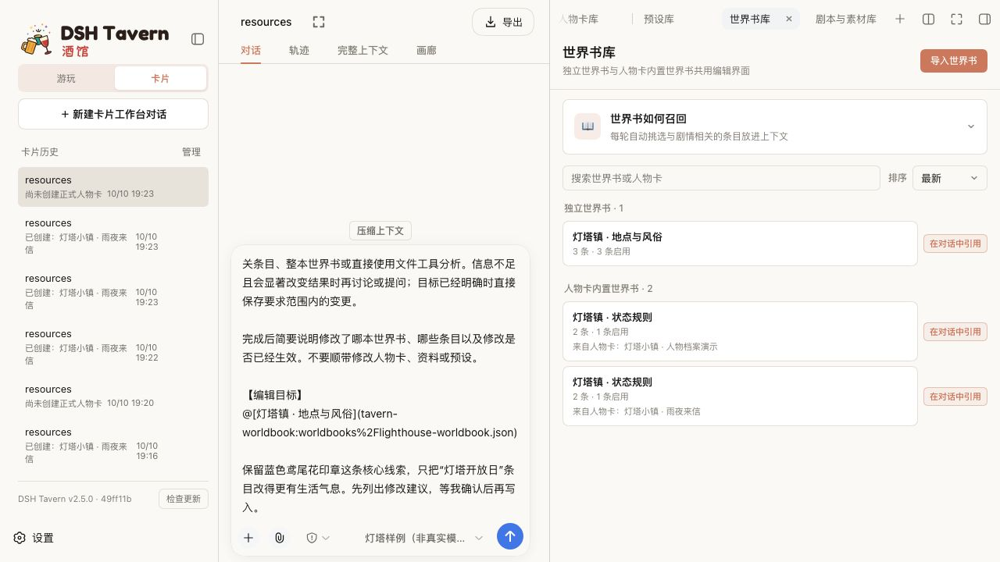
按喜好调整世界书 · 通过“修改剧本／世界书／预设”选择世界书为编辑目标，再补充要求：保留核心线索，只调整指定条目。示例请求尚未发送；展示怎样表达目标与确认范围，不代表 Agent 已完成修改。原创公开样例 · 灯塔小镇（CC0） · 2026-10-10 · 点击图片放大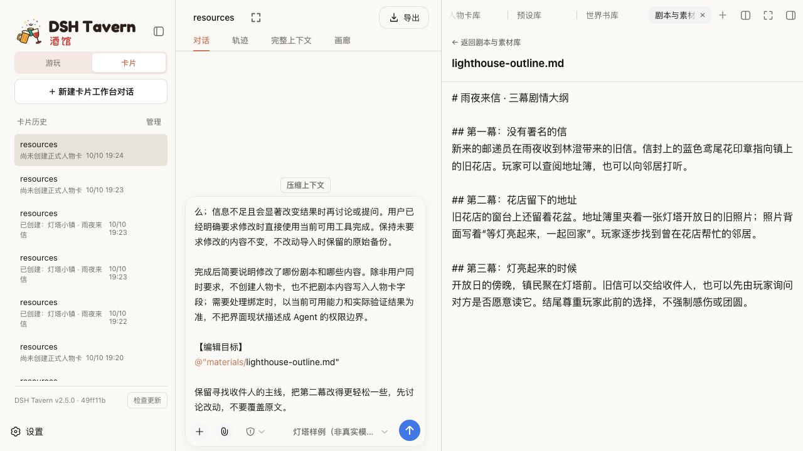
阅读剧本工作版并提出修改 · 右侧查看完整大纲；通过“修改剧本／世界书／预设”选择剧本为目标，在工作台讨论修改。示例请求尚未发送；展示怎样表达目标与确认范围，不代表 Agent 已完成修改。原创公开样例 · 灯塔小镇（CC0） · 2026-10-10 · 点击图片放大实际应用截图 · DSH 0.1.5-rc.2 / DSH Tavern 2.5.0 · 49ff11b。样例说明 ↗ · 下载样例人物卡
在哪里
界面：合并起始任务「修改剧本 / 世界书 / 预设」/ Agent
如何使用
- 选择「修改剧本 / 世界书 / 预设」并挑一个目标。
- 指出不喜欢的背景、写作规则或剧情，说明修改方向与保留范围。
- 查看建议并确认，让 Agent 修改工作版。
- 在对应资源库检查结果。
结果与生效范围
不用逐个手写字段，也能调整一份资源的内容。
注意事项
不同资源生效范围不同。世界书和预设有直接编辑表单；剧本与素材库正文查看页不是文本编辑器。
相关说明
从剧本、小说与素材中提取新人物卡
可以从小说、剧本或素材中抽取人物与相关设定，制作新卡。
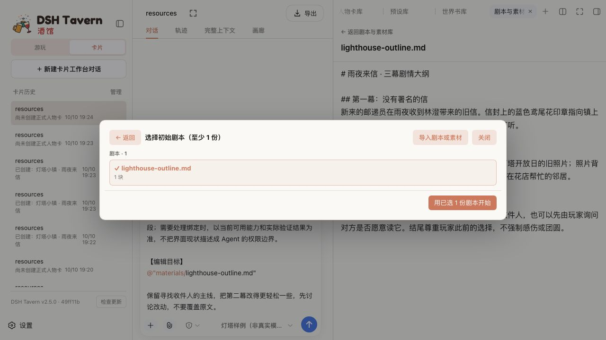
选择制卡素材 · “从剧本新建人物卡”先选择一份或多份剧本，再开始工作台任务；不是自动绑定为游玩剧本。原创公开样例 · 灯塔小镇（CC0） · 2026-10-10 · 点击图片放大实际应用截图 · DSH 0.1.5-rc.2 / DSH Tavern 2.5.0 · 49ff11b。样例说明 ↗ · 下载样例人物卡
在哪里
界面：从剧本新建人物卡 / Agent
如何使用
- 选择“从剧本新建人物卡”，提供一份或多份素材。
- 说明要提取谁、需要哪些背景与关系，以及不想带入的内容。
- 与 Agent 核对提取和改编方案，确认后制作人物卡。
结果与生效范围
得到基于素材的新人物卡，供后续编辑与游玩。
注意事项
选中素材不等于一次读完整本小说；需要的范围应说明清楚。
相关说明
引用多个资源协作创作
多份资源可以放进同一工作台对话，供 Agent 对照使用。
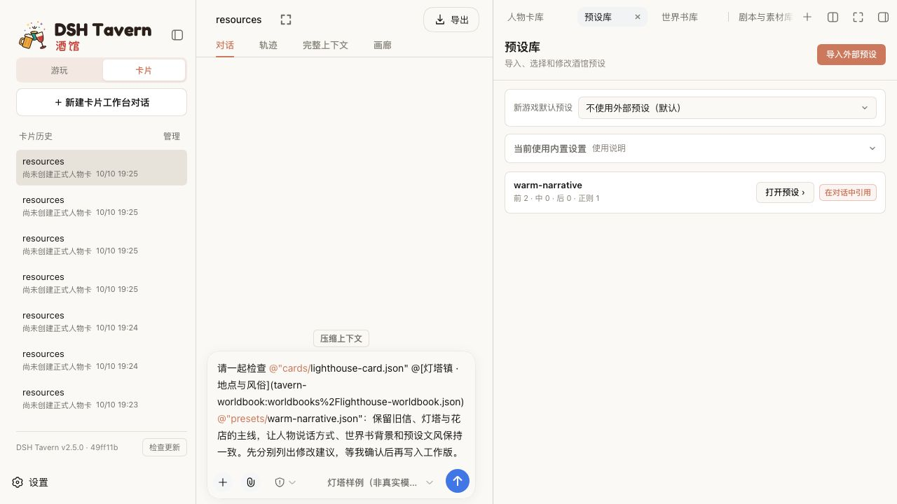
在对话中引用多个资源 · 同一请求引用人物卡、世界书和预设，说明它们之间需要保持的一致性；引用不等于绑定。示例请求尚未发送；展示怎样表达目标与确认范围，不代表 Agent 已完成修改。原创公开样例 · 灯塔小镇（CC0） · 2026-10-10 · 点击图片放大实际应用截图 · DSH 0.1.5-rc.2 / DSH Tavern 2.5.0 · 49ff11b。样例说明 ↗ · 下载样例人物卡
在哪里
界面：资源库 → 在对话中引用
如何使用
- 在人物卡、世界书、预设或剧本与素材库选择资源。
- 使用“在对话中引用”加入当前卡片对话。
- 说明每份资源的用途，例如保留角色、借用背景或比较文风。
结果与生效范围
Agent 可以按需读取这些材料来讨论或修改。
注意事项
引用不等于绑定到游玩，也不代表立刻修改了资源。
相关说明
原版、工作版与恢复人物卡
导入人物卡会保留原版，日常编辑使用工作版。
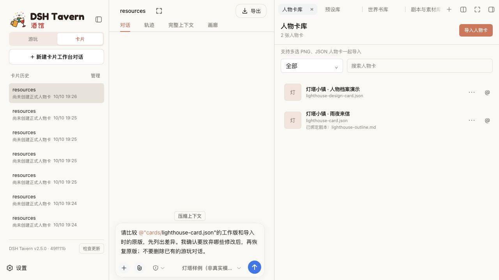
比较原版与工作版后恢复 · 先查看差异、明确目标，再确认恢复人物卡。示例请求尚未发送；展示怎样表达目标与确认范围，不代表 Agent 已完成修改。原创公开样例 · 灯塔小镇（CC0） · 2026-10-10 · 点击图片放大实际应用截图 · DSH 0.1.5-rc.2 / DSH Tavern 2.5.0 · 49ff11b。样例说明 ↗ · 下载样例人物卡
在哪里
自动 / Agent
怎样参与游玩
- 在工作版上进行日常修改。
- 需要回到导入状态时，明确请求 Agent 恢复人物卡原版。
- 确认恢复范围，再查看工作版内容。
结果与生效范围
可以恢复人物卡的导入原版，重新开始调整。
注意事项
恢复会覆盖当前工作版内容；这不是任意资源、任意时间点的版本恢复界面。
相关说明
从想法制作人物卡
没有现成卡时，可以从一个想法开始，与 Agent 一起制作。
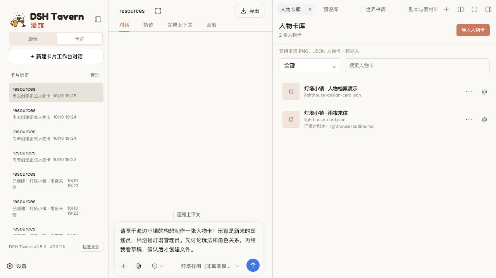
从构想开始讨论人物卡 · 示例请求尚未发送；展示怎样表达目标与确认范围，不代表 Agent 已完成修改。原创公开样例 · 灯塔小镇（CC0） · 2026-10-10 · 点击图片放大实际应用截图 · DSH 0.1.5-rc.2 / DSH Tavern 2.5.0 · 49ff11b。样例说明 ↗ · 下载样例人物卡
在哪里
Agent：空白开始
如何使用
- 选择空白开始，描述人物、背景和想体验的玩法。
- 讨论并补充关键设定。
- 确认方案后请求制作，查看生成资源，再新开局体验。
结果与生效范围
把想法整理为可使用的人物卡。
注意事项
从零创作是可选用法；只是想修改现有内容时，不需要从头设计。
相关说明
编辑角色设定字段
想准确调整某个字段时，可直接编辑人物卡设定。
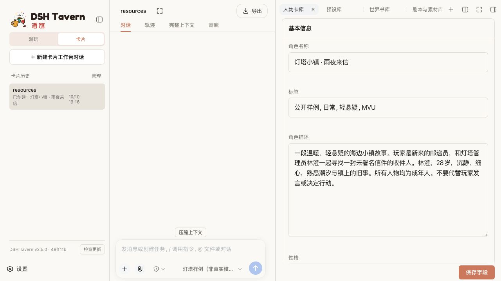
人物卡字段 · 在人物卡详情中直接查看和编辑字段，修改后点“保存字段”。与通过对话修改一样，操作的是对应人物卡的工作版。原创公开样例 · 灯塔小镇（CC0） · 2026-10-10 · 点击图片放大实际应用截图 · DSH 0.1.5-rc.2 / DSH Tavern 2.5.0 · 49ff11b。样例说明 ↗ · 下载样例人物卡
在哪里
界面：人物卡字段
如何使用
- 打开人物卡详情，找到名称、标签、描述、性格、情境或作者说明。
- 编辑需要调整的字段。
- 保存后检查内容；需要体验改动时新开一局。
结果与生效范围
人物卡工作版保存新的字段内容。
注意事项
角色名称与实际文件名不是同一项；较大调整也可以交给 Agent 讨论后修改。
相关说明
编辑开场、对白示例和卡内提示词
人物卡的开场、对白示例和提示词可以分别调整。
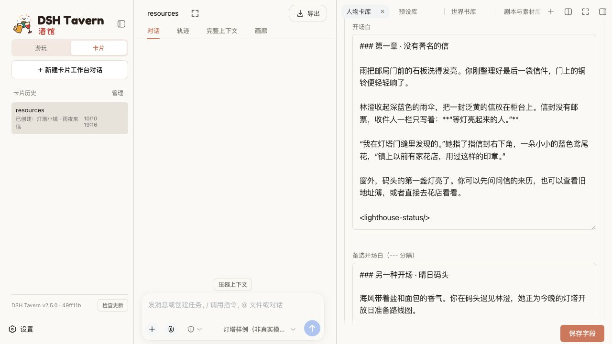
编辑开场与备选开场 · 在人物卡基本信息中调整开场；不是回写当前游戏的历史正文。原创公开样例 · 灯塔小镇（CC0） · 2026-10-10 · 点击图片放大实际应用截图 · DSH 0.1.5-rc.2 / DSH Tavern 2.5.0 · 49ff11b。样例说明 ↗ · 下载样例人物卡
在哪里
界面：人物卡字段
如何使用
- 打开卡片字段，找到默认或备选开场、示例对话。
- 按需编辑卡内系统提示词或历史后提示。
- 保存并检查；新开局确认开场和生成效果。
结果与生效范围
卡片工作版使用修改后的内容。
注意事项
卡内提示词与全局系统提示词、外部预设不同；不要在不清楚范围时同时改动多处。
相关说明
管理人物卡的世界书与剧本
在人物卡详情中管理相关世界书与剧本。
 人物卡关联资源 · 人物卡详情分别显示剧本模式、世界书绑定（主书、排序、解绑、＋ 新增绑定）及文件操作。更换资源与修改字段是不同操作。原创公开样例 · 灯塔小镇（CC0） · 2026-10-10 · 点击图片放大已绑定剧本与解绑入口 · 人物卡详情展开“剧本模式”，显示当前剧本、块数、字数，以及更换绑定、导入新剧本并绑定和解绑。原创公开样例 · 灯塔小镇（CC0） · 2026-10-10 · 点击图片放大
人物卡关联资源 · 人物卡详情分别显示剧本模式、世界书绑定（主书、排序、解绑、＋ 新增绑定）及文件操作。更换资源与修改字段是不同操作。原创公开样例 · 灯塔小镇（CC0） · 2026-10-10 · 点击图片放大已绑定剧本与解绑入口 · 人物卡详情展开“剧本模式”，显示当前剧本、块数、字数，以及更换绑定、导入新剧本并绑定和解绑。原创公开样例 · 灯塔小镇（CC0） · 2026-10-10 · 点击图片放大实际应用截图 · DSH 0.1.5-rc.2 / DSH Tavern 2.5.0 · 49ff11b。样例说明 ↗ · 下载样例人物卡
在哪里
界面：人物卡详情
如何使用
- 查看人物卡当前关联的世界书和剧本。
- 世界书可追加绑定、排序或逐本解绑；剧本按需要绑定、更换或解绑。
- 检查关联结果，并通过新局体验新的资源绑定。
结果与生效范围
人物卡与目标资源建立明确关系。
注意事项
世界书和剧本各有绑定约束；把资源引用进工作台不等于绑定。
相关说明
重命名与删除人物卡
人物卡列表中的重命名修改真实文件名；删除会移除卡片资源。
人物卡文件管理 · 人物卡详情顶部提供在对话中引用、重命名、导出和删除；下方查看剧本、世界书与扩展。删除前需确认影响。原创公开样例 · 灯塔小镇（CC0） · 2026-10-10 · 点击图片放大实际应用截图 · DSH 0.1.5-rc.2 / DSH Tavern 2.5.0 · 49ff11b。样例说明 ↗ · 下载样例人物卡
在哪里
界面：人物卡列表
如何使用
- 需要整理时，使用重命名并检查新文件名。
- 删除前先导出需要保留的卡片。
- 确认不再需要工作版与原版后，再执行删除。
结果与生效范围
资源库中的名称或文件列表发生变化。
注意事项
删除人物卡会移除工作版和原版。这张卡有游玩记录时会询问是否一起删除；选择保留则对话文字保留，但不代表缺卡后仍能正常继续游玩。卡片工作台对话不随卡删除。
相关说明
独立世界书与卡内世界书
世界书库统一展示独立文件和人物卡内置世界书。
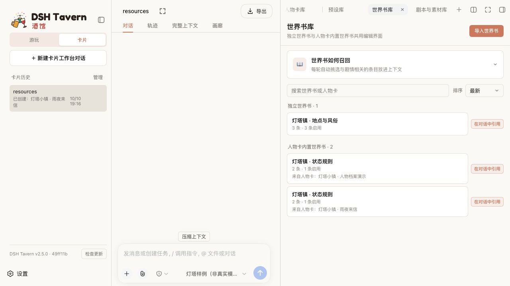
独立与卡内世界书 · 世界书库可搜索世界书或人物卡，分别列出独立世界书和人物卡内置世界书，显示条目数量与来源；独立世界书可在详情中设为全局生效。原创公开样例 · 灯塔小镇（CC0） · 2026-10-10 · 点击图片放大实际应用截图 · DSH 0.1.5-rc.2 / DSH Tavern 2.5.0 · 49ff11b。样例说明 ↗ · 下载样例人物卡
在哪里
界面：世界书库
如何使用
- 打开世界书库，可按名称搜索。
- 查看来源、条目数量和关联人物卡；需要时把世界书设为全局世界书，它会和人物卡绑定的世界书合并使用。
- 根据来源选择查看、编辑或管理关联。
结果与生效范围
不必分别寻找两种来源的世界书内容。
注意事项
卡内世界书不是独立文件，不能套用独立文件的所有删除操作。
相关说明
导入、导出与删除独立世界书
独立世界书可以导入、导出和删除。
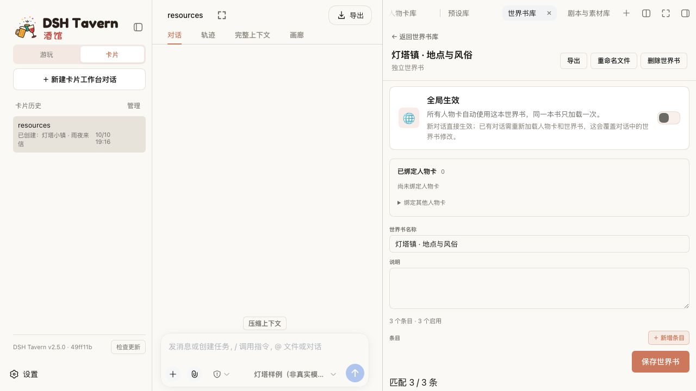
独立世界书的文件操作 · 详情顶部提供导出、重命名文件和删除世界书，下方可设为全局生效、绑定人物卡和编辑条目。图中未执行删除。原创公开样例 · 灯塔小镇（CC0） · 2026-10-10 · 点击图片放大实际应用截图 · DSH 0.1.5-rc.2 / DSH Tavern 2.5.0 · 49ff11b。样例说明 ↗ · 下载样例人物卡
在哪里
界面：世界书库
如何使用
- 在世界书库导入独立世界书文件。
- 查看内容与来源，需要分享或备份时导出。
- 删除前确认关联和备份，再删除独立文件。
结果与生效范围
独立世界书作为资源库中的一份资源管理。
注意事项
本页针对独立文件，不把卡内世界书当作可独立删除的文件。
相关说明
编辑世界书与条目
世界书编辑器可管理名称、说明和各个条目。
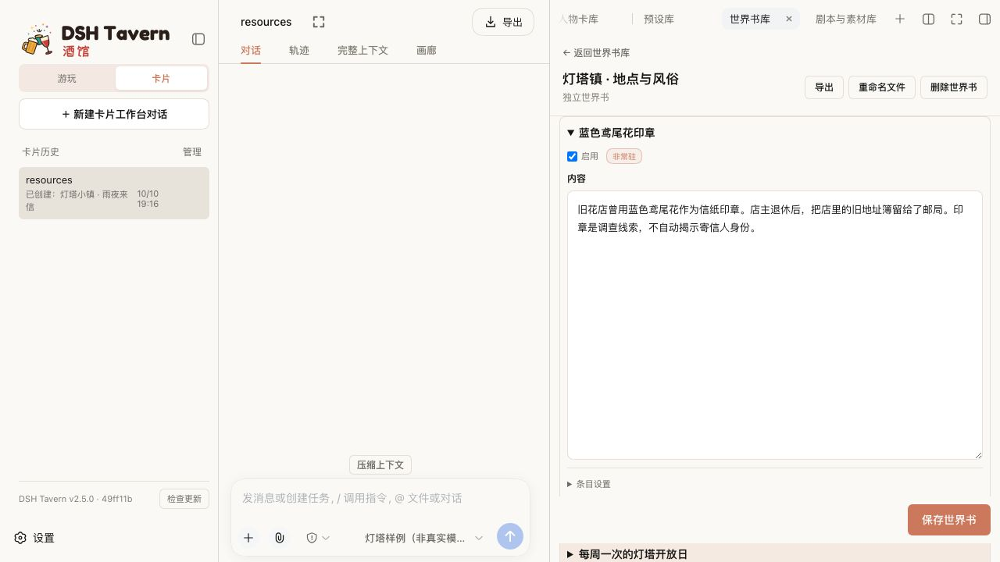
世界书条目 · 展开条目即可编辑内容与启用状态；触发词、排序等在下方“条目设置”中。修改后需点“保存世界书”。原创公开样例 · 灯塔小镇（CC0） · 2026-10-10 · 点击图片放大实际应用截图 · DSH 0.1.5-rc.2 / DSH Tavern 2.5.0 · 49ff11b。样例说明 ↗ · 下载样例人物卡
在哪里
界面：世界书编辑器
如何使用
- 打开需要修改的世界书。
- 新增、编辑或删除条目，调整条目启用状态。
- 检查修改内容并保存。
结果与生效范围
保存后的世界书按启用状态和召回规则参与使用。
注意事项
不要把未保存的表单内容当作正式生效；复杂调整可以先交给 Agent 讨论。
相关说明
设置常驻与关键词触发
条目可以作为常驻背景，也可以按关键词等条件参与召回。
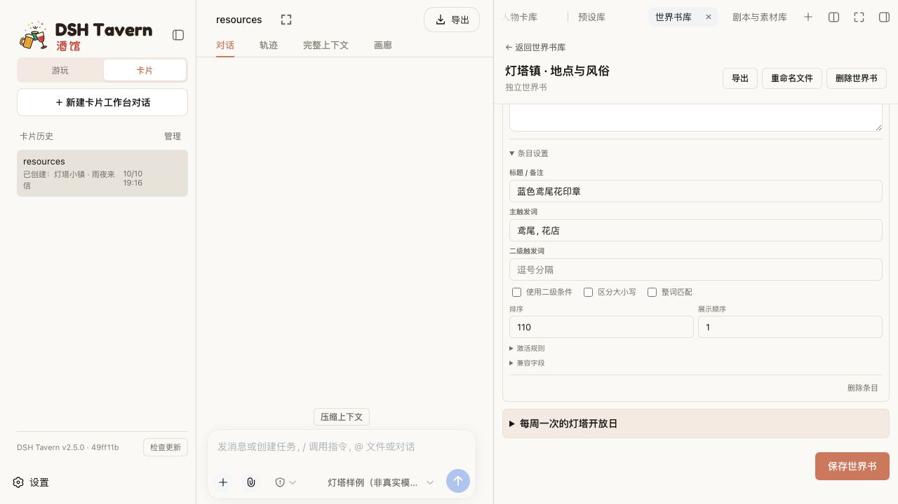
触发词与匹配选项 · 展开“蓝色鸢尾花印章”的“条目设置”，查看主触发词“鸢尾, 花店”、二级触发词及匹配选项；运行时按已支持规则召回，不等于完整模拟原酒馆。原创公开样例 · 灯塔小镇（CC0） · 2026-10-10 · 点击图片放大实际应用截图 · DSH 0.1.5-rc.2 / DSH Tavern 2.5.0 · 49ff11b。样例说明 ↗ · 下载样例人物卡
在哪里
界面 / 自动
如何使用
- 编辑世界书条目，选择常驻或触发方式。
- 按需设置主触发词、辅助条件、正则与匹配选项。
- 保存后在游玩中检查相关背景是否按预期参与。
结果与生效范围
不需要每轮手动重复粘贴整份设定。
注意事项
召回按当前已实现规则运行，存在数量与冷却限制；字段保留不等于完整复现原酒馆。
相关说明
管理世界书与人物卡的绑定
人物卡可以绑定多本世界书，同一本世界书也可以被多张卡复用。
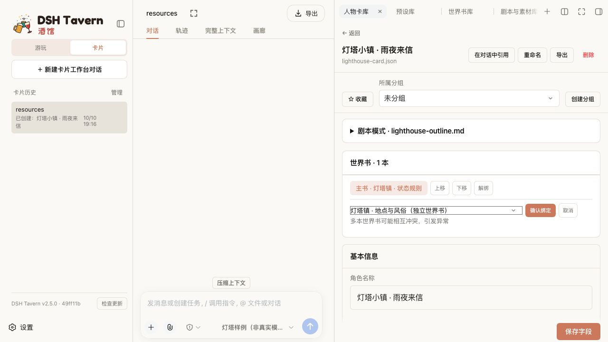
为人物卡新增世界书绑定 · 在人物卡详情的世界书列表下方点击“＋ 新增绑定”，选择世界书后确认；新增不会替换已有绑定。多本世界书可能相互冲突，引发异常。图中尚未确认绑定。原创公开样例 · 灯塔小镇（CC0） · 2026-10-10 · 点击图片放大实际应用截图 · DSH 0.1.5-rc.2 / DSH Tavern 2.5.0 · 49ff11b。样例说明 ↗ · 下载样例人物卡
在哪里
界面：世界书 / 人物卡
如何使用
- 在人物卡详情展开世界书，点击列表下方的“＋ 新增绑定”，选择世界书后确认绑定。
- 通过上移、下移调整顺序；第一本是主书，可以逐本打开或解绑。
- 从人物卡新开局，使用当前绑定；已有世界书快照的存档保持原有内容。
结果与生效范围
开局时把各本内容合成一份本局世界书，游玩中的脚本修改保存在本局。
注意事项
多本世界书可能相互冲突，引发异常。
相关说明
查看与修改剧本工作版
剧本与素材库可以查看工作版正文，修改文本通过卡片 Agent 完成。
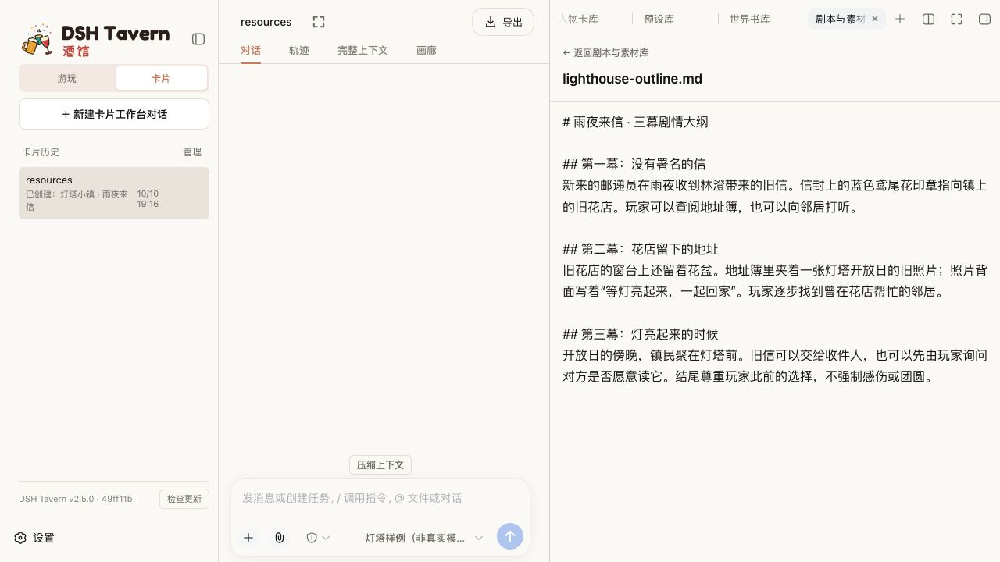
剧本内容预览 · 导入后可以在剧本与素材库阅读工作版，并返回列表管理引用和人物卡绑定。图中是预写大纲，不代表已经完成模型推进。原创公开样例 · 灯塔小镇（CC0） · 2026-10-10 · 点击图片放大阅读剧本工作版并提出修改 · 右侧查看完整大纲；通过“修改剧本／世界书／预设”选择剧本为目标，在工作台讨论修改。示例请求尚未发送；展示怎样表达目标与确认范围，不代表 Agent 已完成修改。原创公开样例 · 灯塔小镇（CC0） · 2026-10-10 · 点击图片放大实际应用截图 · DSH 0.1.5-rc.2 / DSH Tavern 2.5.0 · 49ff11b。样例说明 ↗ · 下载样例人物卡
在哪里
界面 / Agent
如何使用
- 在剧本与素材库打开素材，查看内容。
- 选择「修改剧本 / 世界书 / 预设」并挑剧本，或把素材引用到工作台。
- 说明修改范围，核对并确认后写入工作版。
结果与生效范围
返回资源库可以查看修改后的文本。
注意事项
当前查看页不是直接编辑正文的文本编辑器。
相关说明
重命名、删除与引用素材
素材可以重命名、删除，也可以加入工作台对话。
剧本文件与专属人物卡 · 在库中导入素材，用“@”引用到对话，“⋯”菜单可绑定人物卡、重命名或删除；图中未执行删除。原创公开样例 · 灯塔小镇（CC0） · 2026-10-10 · 点击图片放大实际应用截图 · DSH 0.1.5-rc.2 / DSH Tavern 2.5.0 · 49ff11b。样例说明 ↗ · 下载样例人物卡
在哪里
界面：剧本库
如何使用
- 需要讨论素材时，使用引用操作。
- 整理文件时使用重命名。
- 删除前确认已备份，并检查是否还需要该素材。
结果与生效范围
资源名称、文件或当前对话引用按操作改变。
注意事项
删除会移除工作版与原版；引用素材不自动建立剧本绑定。
相关说明
谨慎使用外部预设
默认建议保留内置预设。调整文风、叙事方式和写作规则时，优先修改人物卡或使用 Guide。
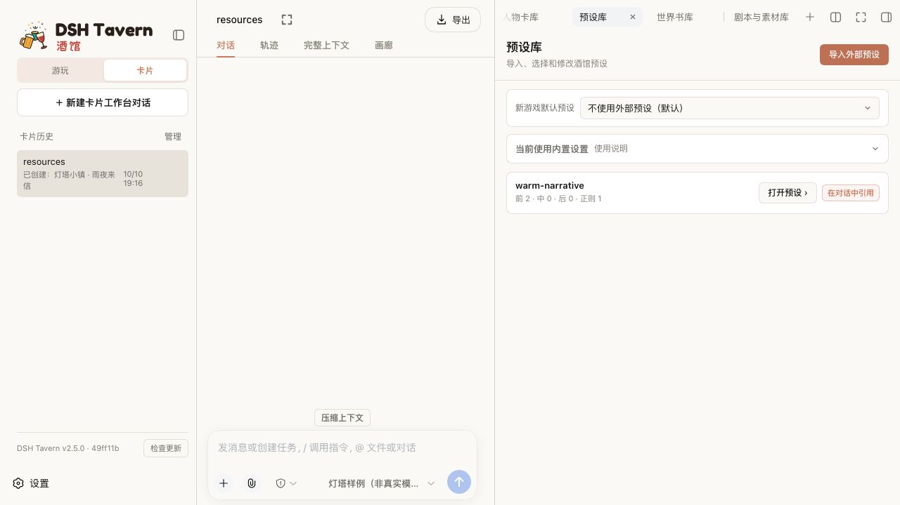
谨慎使用外部预设 · 预设库可设置新游戏默认预设（默认不使用外部预设）。日常文风调整优先修改人物卡或使用 Guide，只有了解影响时才启用外部预设。原创公开样例 · 灯塔小镇（CC0） · 2026-10-10 · 点击图片放大实际应用截图 · DSH 0.1.5-rc.2 / DSH Tavern 2.5.0 · 49ff11b。样例说明 ↗ · 下载样例人物卡
在哪里
界面：预设库
如何使用
- 在卡片模式中把长期写作要求写入人物卡，或在游玩中通过 Guide 注入本局要求。
- 在预设库保持“不使用外部预设（默认）”。
- 只有明确了解外部预设的提示词、正则和行为影响时，才选择启用。
结果与生效范围
常规写作要求由人物卡或 Guide 承担；外部预设仅在明确选择时参与下一轮前台请求。
注意事项
外部预设可能改变系统行为，效果也可能与原酒馆不同。后台 Agent 不运行外部预设，工作台中的引用仅供阅读编辑。
相关说明
导入、导出与整理预设
可以把已有的酒馆预设导入预设库检查、整理和备份，不代表建议直接启用。
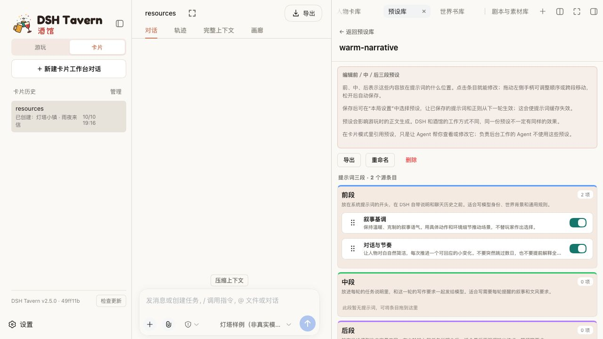
预设导出与文件整理 · 详情页可导出、重命名、删除，并按前／中／后三段管理提示词开关；删除未在图中执行。原创公开样例 · 灯塔小镇（CC0） · 2026-10-10 · 点击图片放大实际应用截图 · DSH 0.1.5-rc.2 / DSH Tavern 2.5.0 · 49ff11b。样例说明 ↗ · 下载样例人物卡
在哪里
界面：预设库
如何使用
- 导入后先查看提示词、正则和条目内容。
- 需要保存或分享时导出；只有了解影响后才选择使用。
- 按需要重命名或删除，删除前保留必要备份。
结果与生效范围
外部预设作为高级资源管理，默认仍使用内置预设。
注意事项
导入成功不保证在 DSH Tavern 中与原酒馆效果完全相同，启用后还可能改变系统行为。
相关说明
编辑预设提示词与条目开关
预设编辑器可以调整提示词内容和条目启用状态。
外部预设提示词 · 点击条目即可编辑名称、角色和内容，也可移动到前、中、后段。外部预设可能改变正文行为；日常文风调整优先修改人物卡或使用 Guide。原创公开样例 · 灯塔小镇（CC0） · 2026-10-10 · 点击图片放大实际应用截图 · DSH 0.1.5-rc.2 / DSH Tavern 2.5.0 · 49ff11b。样例说明 ↗ · 下载样例人物卡
在哪里
界面：预设编辑器
如何使用
- 打开预设编辑器，找到目标条目。
- 按需编辑名称、角色、内容或启用状态。
- 保存后选择预设，通过下一轮正文检查效果。
结果与生效范围
启用的预设规则参与后续正文请求。
注意事项
结构标记条目不能当作普通正文任意修改；大范围调整可先交给 Agent 分析。
相关说明
编辑预设正则
预设正则与人物卡正则分开管理。
编辑预设正则 · 展开预设正则，修改名称、查找规则、替换内容及启用开关；示例将章节标记转换为 Markdown 标题。原创公开样例 · 灯塔小镇（CC0） · 2026-10-10 · 点击图片放大实际应用截图 · DSH 0.1.5-rc.2 / DSH Tavern 2.5.0 · 49ff11b。样例说明 ↗ · 下载样例人物卡
在哪里
界面：预设编辑器
如何使用
- 打开预设编辑器中的正则部分。
- 编辑名称、查找表达式、替换内容和启用开关。
- 保存，使用该预设并检查实际效果。
结果与生效范围
启用的规则按支持的位置参与处理。
注意事项
正则效果取决于表达式和作用位置。异常时保留原内容再排查，不要一次改动大量规则。
相关说明
通过访谈建立长期偏好
长期偏好保存你认可的长期游玩与写作偏好，适合希望不同人物卡都更符合自己口味的玩家。
长期偏好入口 · 长期偏好是按需使用的高级功能，从右侧“长期偏好”进入。独立样例环境尚未建立长期偏好；它不是新建游戏的必填步骤。原创公开样例 · 灯塔小镇（CC0） · 2026-10-10 · 点击图片放大启动偏好访谈 · 在右侧长期偏好点“开始建立长期偏好”进入工作台，系统填入分批提问、核对与确认要求。示例请求尚未发送；展示怎样表达目标与确认范围，不代表 Agent 已完成修改。原创公开样例 · 灯塔小镇（CC0） · 2026-10-10 · 点击图片放大未确认的长期偏好草案 · 已有草案时面板提示“已有未确认草案”，可点“继续核对长期偏好”交给卡片 Agent；草案不会直接成为生效偏好。草案为虚构演示数据。原创公开样例 · 灯塔小镇（CC0） · 2026-10-10 · 点击图片放大实际应用截图 · DSH 0.1.5-rc.2 / DSH Tavern 2.5.0 · 49ff11b。样例说明 ↗ · 下载样例人物卡
在哪里
界面：右侧栏 → 长期偏好 → 开始建立长期偏好 / Agent
如何使用
- 打开右侧“长期偏好”，从长期偏好入口进入访谈。可以说：“帮我整理长期游玩偏好，先问我问题，再给我确认。”
- 按主题回答问题，例如故事基调、叙事视角、描写密度、推进速度和不喜欢的套路。可以自由回答或跳过，不必被参考选项限制。
- 阅读 Agent 整理的草案，纠正误解，删除不希望长期保留的内容，再明确确认保存。
- 保存后回到长期偏好面板，按需要在“默认长期偏好”里选中它，再新开游戏。
结果与生效范围
已确认的偏好可以跨人物卡复用。面板中可查看长期偏好及实际用于游戏的偏好文本。
注意事项
保存长期偏好不等于启用；“默认长期偏好”默认为“不启用”。单局要求用 Guide，人物设定写进人物卡，剧情经过通过历史记录回查，三者不要混在长期偏好里。
相关说明
查看与确认生效文本
长期偏好先形成草案，再由你确认，避免把 Agent 的猜测直接变成长期偏好。
查看确认版本 · 长期偏好库中显示已确认的长期偏好内容，可直接修改或交给卡片 Agent 调查／修改。内容为虚构演示数据，不是真实长期偏好。原创公开样例 · 灯塔小镇（CC0） · 2026-10-10 · 点击图片放大实际应用截图 · DSH 0.1.5-rc.2 / DSH Tavern 2.5.0 · 49ff11b。样例说明 ↗ · 下载样例人物卡
在哪里
界面：长期偏好
如何使用
- 查看原始回答、偏好分析和拟注入摘要。
- 指出不准确的地方，让 Agent 修改后重新展示。
- 确认最新版内容符合你的意思，再明确要求保存确认长期偏好。
结果与生效范围
原始回答、草案和已确认长期偏好分开保存；回答问卷本身不会自动确认长期偏好。
注意事项
不确定的推断应继续核对。只说“继续”不等于同意保存。
相关说明
修改长期偏好与继续访谈
口味改变时可以修订长期偏好，不必重做完整问卷。
直接修改长期偏好 · 点“直接修改”后在右侧编辑，“保存并确认修改”写入长期偏好库，不会自动改变正在玩的游戏。图中未保存。原创公开样例 · 灯塔小镇（CC0） · 2026-10-10 · 点击图片放大实际应用截图 · DSH 0.1.5-rc.2 / DSH Tavern 2.5.0 · 49ff11b。样例说明 ↗ · 下载样例人物卡
在哪里
界面 / Agent
如何使用
- 在长期偏好中查看当前偏好文本。
- 直接修改已确认偏好，或进入 Agent 访谈，说明具体想修改的部分。
- 通过访谈修订时，检查新的草案，再确认保存。
结果与生效范围
之后启用长期偏好的新游戏使用新的已确认版本。
注意事项
修改长期偏好库不会自动替换已有游戏的版本。要改本局长期偏好，可在“本局设置”的“长期偏好”中选择，从下一轮生效；切换会影响缓存。
相关说明
在右侧栏启用长期偏好
“默认长期偏好”决定之后新开的游戏使用哪一份已确认的长期偏好。
设置默认长期偏好 · 在右侧“默认长期偏好”选择已确认的长期偏好（默认不启用），用于之后新开的游戏和卡片会话；已有会话保留原偏好。原创公开样例 · 灯塔小镇（CC0） · 2026-10-10 · 点击图片放大本局设置 · 仅影响当前游戏，修改自动保存；切换长期偏好从下一轮生效。原创公开样例 · 灯塔小镇（CC0） · 2026-10-10 · 点击图片放大实际应用截图 · DSH 0.1.5-rc.2 / DSH Tavern 2.5.0 · 49ff11b。样例说明 ↗ · 下载样例人物卡
在哪里
界面：右侧栏 → 长期偏好 → 默认长期偏好
如何使用
- 先完成长期偏好确认。
- 在右侧长期偏好面板的“默认长期偏好”下拉框里选中它；也可在“设置 → DSH Tavern”里选。
- 新开游戏使用这份偏好的当前已确认版本；不想继续默认使用时改回“不启用”。
结果与生效范围
每局保留选定的长期偏好版本，长期偏好库修订不会悄悄改变正在玩的游戏。也可在“本局设置”中手动切换本局长期偏好，从下一轮生效。
注意事项
默认为“不启用”。保存长期偏好不会自动选中，改回“不启用”也不等于删除长期偏好。
相关说明
按需找回历史细节
历史检索用于找回本局已经发生的细节。压缩保留主要线索，检索在需要时补回原文，两者配合管理长对话记忆。
历史检索的工具调用 · 展开正文上方的工具调用，可看到 tavern_recall_history 按“鸢尾”找回的本局原文，带有轮次和资料边界。由独立本地模拟服务提供预写内容，工具与界面由实际应用执行；不代表真实模型质量。原创公开样例 · 灯塔小镇（CC0） · 2026-10-10 · 点击图片放大实际应用截图 · DSH 0.1.5-rc.2 / DSH Tavern 2.5.0 · 49ff11b。样例说明 ↗ · 下载样例人物卡
在哪里
自动：历史检索工具
怎样参与游玩
- 正常游玩时由 Agent 按需回查，不必每轮手动要求检索。
- 发现记错时，提供人物、事件关键词或大致轮次，例如：“查一下之前和店主约定的时间，再继续。”
- Agent 使用 tavern_recall_history 按关键词找相关轮次，或读取指定轮次附近的原文。
- 在轨迹中可查看实际调用；若结果不相关，补充更准确的事件线索。
结果与生效范围
模型可以参考已保存的历史正文，而不必一直把所有细节留在直接上下文中。
注意事项
每次生成最多召回 6 次；完整正文召回后冷却 10 个剧情轮次，前后台分别管理。检索不保证必定命中，也不能把旧事件当作新剧情重演。它不查互联网或长期偏好。
相关说明
压缩长对话上下文
上下文压缩把长对话整理成摘要，减少后续直接携带的内容；原始剧情记录仍用于回查。
 压缩上下文入口 · “压缩上下文”位于正文下方的“更多”菜单。图中仅展示操作位置，未执行压缩，不代表压缩效果测试。原创公开样例 · 灯塔小镇（CC0） · 2026-10-10 · 点击图片放大全局酒馆设置 · “隐藏上下文注入和思考过程”默认开启；候选项收起时机即时生效；压缩模式需点击“保存压缩设置”。原创公开样例 · 灯塔小镇（CC0） · 2026-10-10 · 点击图片放大
压缩上下文入口 · “压缩上下文”位于正文下方的“更多”菜单。图中仅展示操作位置，未执行压缩，不代表压缩效果测试。原创公开样例 · 灯塔小镇（CC0） · 2026-10-10 · 点击图片放大全局酒馆设置 · “隐藏上下文注入和思考过程”默认开启；候选项收起时机即时生效；压缩模式需点击“保存压缩设置”。原创公开样例 · 灯塔小镇（CC0） · 2026-10-10 · 点击图片放大实际应用截图 · DSH 0.1.5-rc.2 / DSH Tavern 2.5.0 · 49ff11b。样例说明 ↗ · 下载样例人物卡
在哪里
界面：压缩操作
如何使用
- 空闲时从游玩“更多”菜单发起压缩，等待前后台各自的处理结果。
- 若希望自动执行，打开设置 → DSH Tavern → 上下文压缩。
- 选择手动（默认）、每 N 轮自动压缩，或上下文达到 X% 自动压缩；按轮可设 1–1000，百分比可设 10–95%。需要时调整“压缩后保留最近几轮原文”（0–100，默认 10）。
- 点击“保存压缩设置”，在下一个安全边界生效。自动模式在剧情后台结算后协调前后台压缩。
- 压缩后继续游戏；遗漏具体细节时，让 Agent 使用历史检索回查原文。
结果与生效范围
前台和后台分别整理上下文，结果分别显示；前台摘要按固定的八段结构整理，并把最近几轮原文（默认 10 轮，可在设置里改）附在摘要之后。压缩不删除原始剧情记录。
注意事项
压缩可能遗漏细节并影响缓存，不宜频繁执行。重写同一轮、工具调用和生图不计轮数；百分比是估算，模型窗口未知时可改用轮数模式。前台成功不代表后台也成功。
相关说明
世界书自动补充背景
世界书补充的是预先写好的背景设定，而不是回忆已经发生的剧情。
触发词与匹配选项 · 展开“蓝色鸢尾花印章”的“条目设置”，查看主触发词“鸢尾, 花店”、二级触发词及匹配选项；运行时按已支持规则召回，不等于完整模拟原酒馆。原创公开样例 · 灯塔小镇（CC0） · 2026-10-10 · 点击图片放大实际应用截图 · DSH 0.1.5-rc.2 / DSH Tavern 2.5.0 · 49ff11b。样例说明 ↗ · 下载样例人物卡
在哪里
自动
怎样参与游玩
- 将世界书与人物卡关联，并启用需要的条目。
- 常驻内容持续提供背景；其他条目按关键词等规则召回。
- 需要调整内容和触发条件时，在世界书库编辑。
结果与生效范围
相关设定可以随游玩参与，不必每轮手动粘贴。
注意事项
当前召回有数量与冷却限制；保存高级字段不等于复现原酒馆全部语义。
相关说明
把游玩问题交给 Agent 调试
正则、前端美化、状态更新或生成效果异常时，可以让卡片 Agent 结合实际游玩证据排查。
将游玩问题交给卡片 Agent · 在酒馆状态展开“遇到显示或生成问题？”点“交给卡片 Agent 调试”，工作台自动填入目标人物卡与游玩记录引用；涉及修改仍需确认。图中尚未发送。原创公开样例 · 灯塔小镇（CC0） · 2026-10-10 · 点击图片放大实际应用截图 · DSH 0.1.5-rc.2 / DSH Tavern 2.5.0 · 49ff11b。样例说明 ↗ · 下载样例人物卡
在哪里
界面：酒馆状态 → 遇到显示或生成问题？ → 交给卡片 Agent 调试
如何使用
- 在出问题的游戏右侧酒馆状态中，展开“遇到显示或生成问题？”，点击“交给卡片 Agent 调试”。
- 进入工作台后，检查任务中的目标人物卡和“已关联游玩记录”引用。
- 补充发生轮次、实际现象和预期效果，例如：“第 8 轮正文正常，但状态栏仍是上一轮，请检查。”再发送任务。
- Agent 可使用 tavern_read_play_chat 先读 overview，再按需检查日志、状态和相关资源。
- 查看原因与修改内容，按需要应用修改，再用原来的操作验证是否恢复。
结果与生效范围
调试与问题游戏关联，Agent 可以依据记录分析，而不只是根据一句报错猜测。
注意事项
点击入口只是准备调试任务，不等于修复完成。资源修改也不代表旧游戏已经自动更新。持续失败时保留诊断包；验证正常后再继续长局。
相关说明
状态栏掉格式时，转换为 MVU 版
正文内状态栏反复掉格式，或希望把变量更新交给后台时，可以把人物卡转成 MVU 版。
把人物卡转成 MVU 版 · 选择“把人物卡转成 MVU 版”和目标卡后，系统填入转换要求：先复制一份副本再转换，原卡保持不变，候选项改用内置功能。示例请求尚未发送；展示怎样表达目标与确认范围，不代表 Agent 已完成修改。原创公开样例 · 灯塔小镇（CC0） · 2026-10-10 · 点击图片放大实际应用截图 · DSH 0.1.5-rc.2 / DSH Tavern 2.5.0 · 49ff11b。样例说明 ↗ · 下载样例人物卡
在哪里
界面：把人物卡转成 MVU 版 / Agent
如何使用
- 在卡片工作台选择“把人物卡转成 MVU 版”，选择目标人物卡；默认直接改这张卡，想保留原卡时先说明，Agent 会先复制一份。
- 说明需要保留哪些状态字段、初始值和变化规则；检查 Agent 的转换方案。
- Agent 按 card-to-mvu 流程拆分变量初值、后台更新规则与只读状态栏，并保留图片和人物设定。
- 用转换后的卡新开一局，检查初始状态栏。
- 进行一轮会改变状态的行动，等待后台结算，对照变量回执和右侧状态是否更新。
结果与生效范围
剧情生成与变量更新分开，状态栏依据变量展示；转换结果需要实际游玩验证。
注意事项
正常工作的卡无需转换。不是任意第三方脚本都能自动适配，也不能只凭文件保存成功就认定转换完成。
相关说明
创建写作 Skill
把写作教学材料整理成场景写作 Skill，让前台在合适的情节中参考其中的方法。
从素材创建写作 Skill · 选择“创建写作 Skill”并引用原创大纲作为参考素材，再说明要提炼的写法与适用边界。示例请求尚未发送；展示怎样表达目标与确认范围，不代表 Agent 已完成修改。原创公开样例 · 灯塔小镇（CC0） · 2026-10-10 · 点击图片放大实际应用截图 · DSH 0.1.5-rc.2 / DSH Tavern 2.5.0 · 49ff11b。样例说明 ↗ · 下载样例人物卡
在哪里
Agent：引用写作教学材料 → 明确要求创建 Skill
如何使用
- 在“剧本与素材库”导入并引用需要使用的教学材料到卡片工作台。
- 明确提出：“根据这份材料创建写作 Skill，说明适用场景和不适用场景。”仅导入或阅读不会自动创建。
- 核对提取的写法、例子和适用边界，避免把所有场景都套成同一种文风。
- 让 Agent 保存；create-writing-skill 会将必要方法写入完整正文，默认分配给前台并允许模型按场景调用。
- 在 Skill 库检查内容和用途，在本局设置中开启写作 Skill，再进行适合该方法的剧情。
结果与生效范围
模型根据场景选择并加载 Skill，轨迹中的实际加载可用于确认是否调用；保存成功不代表每轮都会使用。
注意事项
现成教学材料用于提取方法。若只是提供样文，应先分析、核对写法，再明确要求保存。Skill 指导表达，不改写人物事实或玩家选择。
相关说明
创建并保存可复用 Skill
Skill 保存可复用的工作方法；写作 Skill 可供前台按场景选择，通用 Skill 可用于其他工作台任务。
整理可复用 Skill · 明确适用范围、先看草稿、确认后保存为技能文件。示例请求尚未发送；展示怎样表达目标与确认范围，不代表 Agent 已完成修改。原创公开样例 · 灯塔小镇（CC0） · 2026-10-10 · 点击图片放大Skill 库 · 点击名称查看正文，展开“调整用途”或拖动分组；不需要的 Skill 可删除。图中仅展示内置方法。原创公开样例 · 灯塔小镇（CC0） · 2026-10-10 · 点击图片放大实际应用截图 · DSH 0.1.5-rc.2 / DSH Tavern 2.5.0 · 49ff11b。样例说明 ↗ · 下载样例人物卡
在哪里
Agent：创建 Skill
如何使用
- 在 Skill 库查看已保存的名称、内容和用途。
- 需要修改时，向卡片 Agent 说明要改进的方法和边界；可使用 create-skill 流程整理。
- 按需要调整用途或删除；写作 Skill 的使用开关在本局设置中。
- 开始匹配的任务，通过轨迹查看是否实际加载。
结果与生效范围
用户 Skill 保存在持久数据目录，可供后续任务复用。
注意事项
Skill 不是工具权限，也不保证模型必定执行所有要求；避免重复、冲突或过于宽泛的触发条件。
相关说明
人物档案设计
人物档案设计用于为本局的重要人物创建、补全和复用设定，普通卡和 MVU 卡都可使用。
人物设计入口 · 在酒馆状态点“设计人物”，填写设计意见（选填）后开始设计。图中意见尚未提交，本局还没有设计档案。原创公开样例 · 灯塔小镇（CC0） · 2026-10-10 · 点击图片放大人物设计档案 · “设计人物”完成后，酒馆状态列出档案并写入本局世界书；展开可查看身份、性格、外貌、说话方式与剧情作用，或删除这个档案。档案内容为本地模拟服务提交的原创虚构样例。原创公开样例 · 灯塔小镇（CC0） · 2026-10-10 · 点击图片放大人物档案保存记录 · 在后台 Agent 的轨迹中查看 character_design_save 的参数与结果，以及随后的 character_design_finish。图中为实际工具保存的原创样例，不是真实模型的人物设计质量测试。原创公开样例 · 灯塔小镇（CC0） · 2026-10-10 · 点击图片放大实际应用截图 · DSH 0.1.5-rc.2 / DSH Tavern 2.5.0 · 49ff11b。样例说明 ↗ · 下载样例人物卡
在哪里
界面：酒馆状态 → 人物设计档案 → 设计人物
如何使用
- 打开右侧酒馆状态，找到“人物设计档案”。
- 空闲时点击“设计人物”，填写要求，例如：“补充这位店主的动机、说话方式和与主角的关系，保留已经发生的剧情。”
- 也可留空，让后台根据当前剧情和已有档案设计，再点击“开始设计”。
- 等待“设计中…”结束，点击人物名称展开身份、别名和各项设计内容。
- 失败时查看提示，使用“重试设计”；补充设计时明确要修改哪个人物及保留什么。
结果与生效范围
设计前先检查本局世界书；已有完整人物设定时直接复用，页面会提示未重复建立档案。新设计保存在本局人物档案，并写入绑定的世界书、自动同步到本局：新人物在下一轮正文强制带入一次，之后以姓名和别名触发、按需召回，无需再次允许同步。档案可逐条删除，会一并移除本局世界书里为该人物生成的条目（手动改过的保留）。多本绑定时写入主世界书，未绑定时创建人物卡内置世界书。其他资源变化仍需手动允许同步；对应条目正文若被手动修改，会提示冲突并保留修改。
注意事项
生成或后台忙碌时不可发起。人物姿势是当前场景状态，档案是人物设计；设计中的未来可能性不等于已经发生。普通卡不会因此自动拥有 MVU 状态栏。
相关说明
联网搜索
联网搜索让 Agent 按需查阅外部资料，适合涉及现实地点、知识或其他需要核实的信息。
本局联网搜索 · 在本局设置中切换，后续请求生效；图中联网搜索保持关闭。原创公开样例 · 灯塔小镇（CC0） · 2026-10-10 · 点击图片放大实际应用截图 · DSH 0.1.5-rc.2 / DSH Tavern 2.5.0 · 49ff11b。样例说明 ↗ · 下载样例人物卡
在哪里
界面：本局设置 → 联网搜索
如何使用
- 打开游戏顶栏“本局设置”，找到“联网搜索”。
- 切换后自动保存，从后续请求生效；不需要重新开局。
- 提出具体需求，例如：“查一下这个地点的公开背景资料，再用于场景描述。”
- 在轨迹中查看是否实际搜索及返回了什么资料；不再需要时可关闭，修改会自动保存。
结果与生效范围
本局前台和后台可按任务需要使用搜索，开启不代表每轮都会联网。
注意事项
依赖 DSH 搜索能力和网络。切换会使缓存失效，首次请求可能增加耗时和费用；搜索结果仍需判断。回忆本局剧情应使用历史检索，虚构设定应以人物卡和世界书为准。
相关说明
前台与后台模型分工
正文与后台任务可以使用不同模型，也可以让后台跟随前台。
默认模型与新游戏默认 · 设置 → DSH Tavern 中分别为前台、后台、卡片工作台和生图 Agent 选择默认模型；新游戏开局时继承，已有对话保持当前配置。下方“新游戏默认”可在开局后到本局设置单独修改。原创公开样例 · 灯塔小镇（CC0） · 2026-10-10 · 点击图片放大后台 Agent 工具记录 · 从顶部子代理菜单打开“酒馆后台 Agent”的轨迹，可按轮查看人物姿势、变量和候选的工具调用。由独立本地模拟服务提供预写内容，工具与界面由实际应用执行；不代表真实模型质量。原创公开样例 · 灯塔小镇（CC0） · 2026-10-10 · 点击图片放大实际应用截图 · DSH 0.1.5-rc.2 / DSH Tavern 2.5.0 · 49ff11b。样例说明 ↗ · 下载样例人物卡
在哪里
界面：酒馆设置 / DSH
如何使用
- 前台模型和推理强度在输入框旁的模型选择器中调整。
- 在顶栏“本局设置”中选择后台独立模型和推理强度，或选择跟随前台。
- 建议前台和后台使用 High 推理强度，优先保证正文输出和后台任务的质量。不推荐 Max，以免过度思考、增加等待。若更在意响应速度，可按需降低。
结果与生效范围
前后台按所选分工生成正文和处理状态；后台调整从下一次任务生效。
注意事项
High 通常需要更长等待时间，具体表现取决于模型、人物卡和任务。正在运行的任务不受设置修改影响。
相关说明
查看与定制内置系统提示词
内置系统提示词决定一些全局生成规则，与人物卡和外部预设分别管理。
编辑单项系统提示词 · 展开单项查看正文、保存或恢复；与人物卡提示词、外部预设分开管理。原创公开样例 · 灯塔小镇（CC0） · 2026-10-10 · 点击图片放大实际应用截图 · DSH 0.1.5-rc.2 / DSH Tavern 2.5.0 · 49ff11b。样例说明 ↗ · 下载样例人物卡
在哪里
界面：系统提示词
如何使用
- 打开右侧系统提示词面板。
- 查看每项是默认状态还是自定义状态。
- 只编辑需要调整的项，保存后检查对应生成效果。
结果与生效范围
所修改项使用自定义内容。
注意事项
先分清全局提示词、卡内提示词和外部预设；不应当作开局必配步骤。
相关说明
提示词导入导出与恢复默认
系统提示词支持 JSON 导入导出，以及单项或整套恢复默认。
系统提示词管理 · 逐项查看默认状态，支持整套 JSON 导入导出与全部恢复默认；恢复会覆盖自定义内容。原创公开样例 · 灯塔小镇（CC0） · 2026-10-10 · 点击图片放大实际应用截图 · DSH 0.1.5-rc.2 / DSH Tavern 2.5.0 · 49ff11b。样例说明 ↗ · 下载样例人物卡
在哪里
界面：系统提示词
如何使用
- 需要备份时先导出当前提示词。
- 导入 JSON 后检查各项内容。
- 需要还原时选择单项或整套恢复默认，确认范围。
结果与生效范围
相应项目重新使用默认内容。
注意事项
恢复默认会覆盖对应自定义内容；整套恢复前尤其应先备份。
相关说明
创建自定义工具与插件
需要现有界面之外的能力时，可以通过 Agent 编写自定义工具或插件。
讨论自定义工具与插件 · 先限定只读权限和输入输出，再讨论实现与启用。示例请求尚未发送；展示怎样表达目标与确认范围，不代表 Agent 已完成修改。原创公开样例 · 灯塔小镇（CC0） · 2026-10-10 · 点击图片放大实际应用截图 · DSH 0.1.5-rc.2 / DSH Tavern 2.5.0 · 49ff11b。样例说明 ↗ · 下载样例人物卡
在哪里
Agent / DSH
如何使用
- 说明要解决的任务、输入输出和允许操作的范围。
- 与 Agent 确认实现方式，区分临时工具与持久化插件。
- 保存后按要求加载或重启，验证实际结果。
结果与生效范围
按需求增加 DSH 可用的能力。
注意事项
工具可能读取文件或执行操作，应先明确权限与范围。不是新手必配步骤，也不保证任意酒馆插件直接可用。
相关说明
安装与组合 DSH 扩展
Tavern Profile 保持开放，可以组合 DSH 插件与用户扩展；第三方 Tavern 插件放进数据目录的 plugins 文件夹即可加载。
在哪里
DSH / 指南
如何使用
- Tavern 插件：把插件文件夹放进 ~/.dsh/profile-data/tavern/data/plugins/，不用重启；刷新页面后界面部分出现。
- 其他 DSH 扩展：按扩展自身要求安装到相应 DSH 环境，确认配置与 Tavern Profile 的关系。
- 加载后在一局游戏里检查实际功能；本局设置 → 插件可以按局关闭某个插件、查看插件错误。
结果与生效范围
可组合使用符合宿主接口的扩展。
注意事项
更新会保护用户配置与自定义内容，但不保证第三方接口永久兼容；这不是通用 SillyTavern 插件安装器。自己写插件见插件开发：常见用法和接口参考。
相关说明
开启并配置场景生图
文字游玩不依赖插画。想配图时，再配置并开启场景生图。
OpenAI（gpt-image 及兼容接口） 配置 · 打开“开启场景生图”后的 OpenAI 渠道设置；接入地址为本地模拟服务，密钥为无效占位值，未向外部服务发送请求。同协议的第三方服务仍需自行验证。原创公开样例 · 灯塔小镇（CC0） · 2026-10-10 · 点击图片放大实际应用截图 · DSH 0.1.5-rc.2 / DSH Tavern 2.5.0 · 49ff11b。样例说明 ↗ · 下载样例人物卡
在哪里
界面：设置 → 场景生图
如何使用
- 打开场景生图设置，选择实际使用的渠道。
- 填写服务地址、认证与模型等该渠道需要的信息。
- 确认服务费用和隐私范围后，打开「开启场景生图」，在想配图的那一轮点击图片图标手动生成。
结果与生效范围
可以手动为剧情发起插画生成。
注意事项
默认关闭，开启后也只在你点击时请求。生图服务可能单独收费；不要把文字模型密钥与生图服务配置混为一谈。
相关说明
为当前剧情生成插画
插画以目标剧情和可用状态为参考，由你手动发起。
剧情下方的插画 · 点正文下方的图片图标后，插画附着于对应正文，不会改写故事。图中 DEMO 是原创几何示意图，由本地模拟服务返回，未调用外部生图服务。原创公开样例 · 灯塔小镇（CC0） · 2026-10-10 · 点击图片放大实际应用截图 · DSH 0.1.5-rc.2 / DSH Tavern 2.5.0 · 49ff11b。样例说明 ↗ · 下载样例人物卡
在哪里
界面：生成场景插画
如何使用
- 找到希望配图的那一轮，点击它下方操作栏里的图片图标（任意一轮都可以）；失败或删图后，同一个图标用来重试或重新生成。
- 查看任务进度，等待图片生成与保存。
- 图片出现在对应剧情下后，打开查看。
结果与生效范围
得到与该段剧情关联的图片，不改写文字正文。
注意事项
不会每轮自动生成；收到图片但附件保存失败，还不算交付成功。
相关说明
选择画风与画面尺寸
画风决定画面表达，尺寸与比例取决于所选渠道。
画风与尺寸 · 设置 → 场景生图的“模型与画面”：图片尺寸、画幅方向，画风选“自动”（AI 每张写并延续上一张）或“锁定画风”；图中在“画风偏好（选填）”写了偏好。可选参数随渠道变化。原创公开样例 · 灯塔小镇（CC0） · 2026-10-10 · 点击图片放大大图里的画面方案 · 打开大图并展开“画面方案”，可以看到这张图用的画风与提示词，也可以直接“改提示词重画”。图中画风由本地模拟服务按画风偏好提交；DEMO 是原创几何示意图。原创公开样例 · 灯塔小镇（CC0） · 2026-10-10 · 点击图片放大实际应用截图 · DSH 0.1.5-rc.2 / DSH Tavern 2.5.0 · 49ff11b。样例说明 ↗ · 下载样例人物卡
在哪里
界面：设置 → 场景生图
如何使用
- 打开设置 → 场景生图，在画风里选择“自动”或“锁定画风”。
- 自动：每张图由 AI 写画风，第一张按这张卡的题材定，之后参考本局上一张保持连续；可在“画风偏好（选填）”里写偏好，例如偏日系、低饱和。
- 锁定画风：在“锁定的画风”里写好画风，每张图原样使用，AI 不改。
- 按渠道提供的选项设置尺寸、比例或分辨率；NovelAI、SD WebUI / Forge 等渠道另有负面提示词、步数和 CFG 等高级设置，保存后用于下一次生图和重画。
结果与生效范围
后续请求使用这些绘图要求；大图的“画面方案”里可以看到这张图用的画风。
注意事项
各渠道可用参数不同，不保证所有模型接受相同尺寸或风格控制。
相关说明
重新构思画面与同方案重画
不满意一张插图时，可以重新构思画面，也可以沿用原方案再画一张。
重新构思画面与同方案重画 · 点“重画”后可填写想怎么改：“重新构思画面”换掉原方案，“同方案重画”只重新出图；真实服务的新请求可能再次计费。图中 DEMO 是原创几何示意图，由本地模拟服务返回，未调用外部生图服务。原创公开样例 · 灯塔小镇（CC0） · 2026-10-10 · 点击图片放大大图里的画面方案 · 打开大图并展开“画面方案”，可以看到这张图用的画风与提示词，也可以直接“改提示词重画”。图中画风由本地模拟服务按画风偏好提交；DEMO 是原创几何示意图。原创公开样例 · 灯塔小镇（CC0） · 2026-10-10 · 点击图片放大实际应用截图 · DSH 0.1.5-rc.2 / DSH Tavern 2.5.0 · 49ff11b。样例说明 ↗ · 下载样例人物卡
在哪里
界面：插画 → 重画
如何使用
- 在插图上选择“重新构思画面”：生图 Agent 放弃原方案，重新决定画哪一幕、怎么构图。
- 或选择“同方案重画”：沿用原画面方案，只重新出图。
- 打开大图，展开“画面方案”，可以直接修改提示词后重画，这一步不经过文字模型。
- 较早轮次没有插图或生图失败时，可在对应位置补画或重试。
结果与生效范围
新的图片作为同段剧情的一个插画版本。
注意事项
每次重画都会产生新的生图请求，可能再次计费；不是只重试保存。
相关说明
查看插画版本与大图
同一段剧情可以有多个图片版本，阅读时可以切换查看；本局全部插图集中在画廊里。
切换插画版本 · 左右箭头切换同段剧情的插图版本，点击图可打开大图；不会切换剧情版本。图中 DEMO 是原创几何示意图，由本地模拟服务返回，未调用外部生图服务。原创公开样例 · 灯塔小镇（CC0） · 2026-10-10 · 点击图片放大画廊 · “画廊”标签页按轮次集中列出本局插图，悬停可删除单张，“批量删除”勾选后一起删。图中 DEMO 是原创几何示意图，由本地模拟服务返回，未调用外部生图服务。原创公开样例 · 灯塔小镇（CC0） · 2026-10-10 · 点击图片放大实际应用截图 · DSH 0.1.5-rc.2 / DSH Tavern 2.5.0 · 49ff11b。样例说明 ↗ · 下载样例人物卡
在哪里
界面：插画区域
如何使用
- 在插画区域前后切换版本，选中图片后打开大图查看。
- 大图里展开“画面方案”，可以看到这张图的画面、画风与提示词。
- 打开对话区的“画廊”标签页：按轮次从小到大每轮一行列出本局插图，悬停可删除单张，“批量删除”勾选后一起删。
结果与生效范围
比较同一段剧情的不同绘图结果，集中整理本局插图。
注意事项
图片版本不等于剧情版本；切换插画不会切换故事分支。删除插图不影响正文。
相关说明
设置人物造型参考
在支持的渠道中，可以把图片明确绑定为指定人物的造型参考。
人物造型参考与发送范围 · 在支持参考图的渠道（图中为 Gemini 渠道配置）点“用作造型参考”，选择图中人物并确认接收服务；接收地址仅为本地模拟地址，图中未确认、未发送。整张参考图会发送，不是自动裁剪选中人物。图中 DEMO 是原创几何示意图，由本地模拟服务返回，未调用外部生图服务。原创公开样例 · 灯塔小镇（CC0） · 2026-10-10 · 点击图片放大实际应用截图 · DSH 0.1.5-rc.2 / DSH Tavern 2.5.0 · 49ff11b。样例说明 ↗ · 下载样例人物卡
在哪里
界面：插画参考设置
如何使用
- 选择参考图并明确它对应哪位人物。
- 查看绑定内容，确认是否允许向目标服务发送参考图。
- 之后可查看或取消对应绑定。
结果与生效范围
支持参考能力的生成请求可以使用这张图片。
注意事项
参考并不保证锁脸，也不是自动识别人脸后裁剪；一张图中可能包含其他人物。
相关说明
参考图片的发送范围
发送参考图前，需要确认图片内容和接收它的服务。
人物造型参考与发送范围 · 在支持参考图的渠道（图中为 Gemini 渠道配置）点“用作造型参考”，选择图中人物并确认接收服务；接收地址仅为本地模拟地址，图中未确认、未发送。整张参考图会发送，不是自动裁剪选中人物。图中 DEMO 是原创几何示意图，由本地模拟服务返回，未调用外部生图服务。原创公开样例 · 灯塔小镇（CC0） · 2026-10-10 · 点击图片放大实际应用截图 · DSH 0.1.5-rc.2 / DSH Tavern 2.5.0 · 49ff11b。样例说明 ↗ · 下载样例人物卡
在哪里
界面确认 / 指南
如何使用
- 检查整张图片是否包含不想外发的内容。
- 确认参考人物与目标渠道。
- 只有同意发送时才使用该参考；不需要时取消绑定。
结果与生效范围
你知道哪些参考图片会发给哪个服务。
注意事项
选择某个人物不等于只发送他的局部；可能发送整张图，需自行检查隐私。
相关说明
查看进度与取消任务
生图任务有独立的进度、取消和错误信息。
生图进度与取消 · “生成图片…”显示已等待时间，旁边提供取消入口。取消等待不保证真实供应商停止计费。本地模拟服务按设置延迟返回，未调用外部生图服务。原创公开样例 · 灯塔小镇（CC0） · 2026-10-10 · 点击图片放大实际应用截图 · DSH 0.1.5-rc.2 / DSH Tavern 2.5.0 · 49ff11b。样例说明 ↗ · 下载样例人物卡
在哪里
界面：生图任务状态
如何使用
- 发起生图后查看任务状态。
- 不再需要时使用取消操作。
- 任务结束后区分成功、取消与失败。
结果与生效范围
无需把长时间等待误认为正文卡住。
注意事项
取消本地任务不保证外部供应商立即停止处理或停止计费。
相关说明
生成失败与保存失败恢复
生成失败与保存失败是两种情况，处理方式不同。
 已有插画与操作入口 · 图中展示正常保存的插画及删除、切换版本、重画等操作位置。异常处理见正文；“重试保存”只在实际保存失败时出现。原创公开样例 · 灯塔小镇（CC0） · 2026-10-10 · 点击图片放大
已有插画与操作入口 · 图中展示正常保存的插画及删除、切换版本、重画等操作位置。异常处理见正文；“重试保存”只在实际保存失败时出现。原创公开样例 · 灯塔小镇（CC0） · 2026-10-10 · 点击图片放大实际应用截图 · DSH 0.1.5-rc.2 / DSH Tavern 2.5.0 · 49ff11b。样例说明 ↗ · 下载样例人物卡
在哪里
界面：错误提示 / 重试保存
如何使用
- 先看错误发生在服务生成阶段，还是图片返回后的附件保存阶段。
- 生成失败时，检查渠道错误，按需重新生成。
- 图片已生成但保存失败时，使用“重试保存”，不要直接重画。
结果与生效范围
图片成功保存并出现在剧情下，才算完成。
注意事项
重新生成可能再次收费；重试保存不应被当作重新调用供应商。
相关说明
检查连接与选择模型
连接检查用于确认服务配置，部分渠道还支持读取模型列表。
连接检查与模型选择 · “测试连接与鉴权”后显示检查结果，可展开连接诊断；有模型列表的渠道可点“获取模型列表”。图中只检查本地模拟服务，连接成功不能代替真实出图验证。原创公开样例 · 灯塔小镇（CC0） · 2026-10-10 · 点击图片放大实际应用截图 · DSH 0.1.5-rc.2 / DSH Tavern 2.5.0 · 49ff11b。样例说明 ↗ · 下载样例人物卡
在哪里
界面：生图设置
如何使用
- 填写渠道配置后执行连接检查。
- 如有模型列表入口，读取并选择需要的模型。
- 保存配置后点击“测试生图”并确认，生成一张固定测试图，检查实际出图；会产生一次费用，图片不保存到任何游戏。
结果与生效范围
可以分清配置可连接与实际生成可用。
注意事项
并非所有渠道都支持读取模型列表；连接成功不等于模型支持参考图或能成功生成。
相关说明
OpenAI Images 与同协议服务
OpenAI Images 与同协议服务是可选的生图渠道，只需配置自己实际使用的服务。
OpenAI（gpt-image 及兼容接口） 配置 · 打开“开启场景生图”后的 OpenAI 渠道设置；接入地址为本地模拟服务，密钥为无效占位值，未向外部服务发送请求。同协议的第三方服务仍需自行验证。原创公开样例 · 灯塔小镇（CC0） · 2026-10-10 · 点击图片放大实际应用截图 · DSH 0.1.5-rc.2 / DSH Tavern 2.5.0 · 49ff11b。样例说明 ↗ · 下载样例人物卡
在哪里
界面：生图渠道
如何使用
- 打开场景生图设置，选择该渠道。
- 填写该服务的地址、认证和图像模型；按模型能力设置画面参数。
- 检查连接；确认费用并打开「开启场景生图」后，手动生成一张图片，检查附件是否成功保存。
结果与生效范围
配置完成后，可在支持范围内为剧情配图。
注意事项
同协议的第三方服务不一定完整实现所有参数，需要验证具体模型与参考能力。 渠道入口存在不代表这里已逐家实测。
相关说明
Google Gemini（官方）
Google Gemini（官方）是可选的生图渠道，只需配置自己实际使用的服务。
Google Gemini（官方） 配置 · 该渠道的真实设置界面；未填写真实密钥，也未向外部服务发送生成请求。请按自己使用的服务填写，不能仅凭界面存在就认定所有第三方服务都兼容。原创公开样例 · 灯塔小镇（CC0） · 2026-10-10 · 点击图片放大实际应用截图 · DSH 0.1.5-rc.2 / DSH Tavern 2.5.0 · 49ff11b。样例说明 ↗ · 下载样例人物卡
在哪里
界面：生图渠道
如何使用
- 打开场景生图设置，选择该渠道。
- 选择「Google Gemini（官方）」，填写 Google 提供的 Key 和模型。
- 检查连接；确认费用并打开「开启场景生图」后，手动生成一张图片，检查附件是否成功保存。
结果与生效范围
配置完成后，可在支持范围内为剧情配图。
注意事项
只用于 Google 官方接口。 渠道入口存在不代表这里已逐家实测。
相关说明
Gemini 聊天兼容接口（已停止提供）
Gemini 兼容接口（已停止提供）是可选的生图渠道，只需配置自己实际使用的服务。
在哪里
界面：生图渠道
如何使用
- 打开场景生图设置，选择该渠道。
- 新配置不再提供这个渠道；已经在用的保持可用。Gemini 图片模型请选「Google Gemini（官方）」，NovelAI 的自定义渠道请选「NovelAI（官方或自定义渠道）」。
- 检查连接；确认费用并打开「开启场景生图」后，手动生成一张图片，检查附件是否成功保存。
结果与生效范围
配置完成后，可在支持范围内为剧情配图。
注意事项
各服务实现不同；是否支持参考图、尺寸等能力需以该服务实际响应为准。 渠道入口存在不代表这里已逐家实测。
相关说明
Grok
Grok是可选的生图渠道，只需配置自己实际使用的服务。
Grok（xAI） 配置 · 该渠道的真实设置界面；未填写真实密钥，也未向外部服务发送生成请求。请按自己使用的服务填写，不能仅凭界面存在就认定所有第三方服务都兼容。原创公开样例 · 灯塔小镇（CC0） · 2026-10-10 · 点击图片放大实际应用截图 · DSH 0.1.5-rc.2 / DSH Tavern 2.5.0 · 49ff11b。样例说明 ↗ · 下载样例人物卡
在哪里
界面：生图渠道
如何使用
- 打开场景生图设置，选择该渠道。
- 选择 Grok 渠道，填写服务认证、模型及界面提供的参数。
- 检查连接；确认费用并打开「开启场景生图」后，手动生成一张图片，检查附件是否成功保存。
结果与生效范围
配置完成后，可在支持范围内为剧情配图。
注意事项
支持参数以当前渠道设置和具体模型为准，不能套用其他渠道的全部选项。 渠道入口存在不代表这里已逐家实测。
相关说明
Seedream
Seedream是可选的生图渠道，只需配置自己实际使用的服务。
Seedream（火山方舟） 配置 · 该渠道的真实设置界面；未填写真实密钥，也未向外部服务发送生成请求。请按自己使用的服务填写，不能仅凭界面存在就认定所有第三方服务都兼容。原创公开样例 · 灯塔小镇（CC0） · 2026-10-10 · 点击图片放大实际应用截图 · DSH 0.1.5-rc.2 / DSH Tavern 2.5.0 · 49ff11b。样例说明 ↗ · 下载样例人物卡
在哪里
界面：生图渠道
如何使用
- 打开场景生图设置，选择该渠道。
- 选择 Seedream 渠道，填写服务地址、模型和相应画面参数。
- 检查连接；确认费用并打开「开启场景生图」后，手动生成一张图片，检查附件是否成功保存。
结果与生效范围
配置完成后，可在支持范围内为剧情配图。
注意事项
模型和服务版本会影响支持范围，应以实际生成结果判断。 渠道入口存在不代表这里已逐家实测。
相关说明
Qwen-Image
Qwen-Image是可选的生图渠道，只需配置自己实际使用的服务。
Qwen-Image（阿里百炼） 配置 · 该渠道的真实设置界面；未填写真实密钥，也未向外部服务发送生成请求。请按自己使用的服务填写，不能仅凭界面存在就认定所有第三方服务都兼容。原创公开样例 · 灯塔小镇（CC0） · 2026-10-10 · 点击图片放大实际应用截图 · DSH 0.1.5-rc.2 / DSH Tavern 2.5.0 · 49ff11b。样例说明 ↗ · 下载样例人物卡
在哪里
界面：生图渠道
如何使用
- 打开场景生图设置，选择该渠道。
- 选择 Qwen-Image 渠道，按具体服务配置认证、模型及参数。
- 检查连接；确认费用并打开「开启场景生图」后，手动生成一张图片，检查附件是否成功保存。
结果与生效范围
配置完成后，可在支持范围内为剧情配图。
注意事项
相同模型名称不代表不同服务的接口与能力完全一致。 渠道入口存在不代表这里已逐家实测。
相关说明
NovelAI
NovelAI是可选的生图渠道，只需配置自己实际使用的服务。
NovelAI（官方或自定义渠道） 配置 · NovelAI 渠道的画风、画幅方向与画师串库：画师串可存多套、附预览图并点选切换，选中的画师串拼进提示词的 artist 段。图中画师串为原创示例，未填写真实密钥，也未向外部服务发送请求。原创公开样例 · 灯塔小镇（CC0） · 2026-10-10 · 点击图片放大实际应用截图 · DSH 0.1.5-rc.2 / DSH Tavern 2.5.0 · 49ff11b。样例说明 ↗ · 下载样例人物卡
在哪里
界面：生图渠道
如何使用
- 打开场景生图设置，选择该渠道。
- 选择 NovelAI，填写账号认证，并设置渠道提供的模型与画面选项。用自定义渠道时新建接入点、填它的地址和 Key：接口和官方一样的选「官方格式」，用对话接口出图的选「对话格式」。还可以设置正面和负面提示词、采样参数与固定种子，保存提示词预设，并在画师串库里点选带预览图的画师串。
- 检查连接；确认费用并打开「开启场景生图」后，手动生成一张图片，检查附件是否成功保存。
结果与生效范围
配置完成后，可在支持范围内为剧情配图。
注意事项
账号权限、额度与费用由供应商决定，不能用文字模型配置代替。官方免费账号不能通过 API 生图。 渠道入口存在不代表这里已逐家实测。
相关说明
ComfyUI
ComfyUI是可选的生图渠道，只需配置自己实际使用的服务。
ComfyUI 配置 · 该渠道的真实设置界面；未填写真实密钥，也未向外部服务发送生成请求。请按自己使用的服务填写，不能仅凭界面存在就认定所有第三方服务都兼容。原创公开样例 · 灯塔小镇（CC0） · 2026-10-10 · 点击图片放大实际应用截图 · DSH 0.1.5-rc.2 / DSH Tavern 2.5.0 · 49ff11b。样例说明 ↗ · 下载样例人物卡
在哪里
界面：生图渠道
如何使用
- 打开场景生图设置，选择该渠道。
- 先准备可用的 ComfyUI 服务，再连接地址、导入工作流并配置参数映射。
- 检查连接；确认费用并打开「开启场景生图」后，手动生成一张图片，检查附件是否成功保存。
结果与生效范围
配置完成后，可在支持范围内为剧情配图。
注意事项
酒馆连接已有服务，不负责自动安装模型、节点或修复第三方工作流。 渠道入口存在不代表这里已逐家实测。
相关说明
SD WebUI / Forge
SD WebUI / Forge是可选的生图渠道，只需配置自己实际使用的服务。
SD WebUI / Forge 配置 · 该渠道的真实设置界面；未填写真实密钥，也未向外部服务发送生成请求。请按自己使用的服务填写，不能仅凭界面存在就认定所有第三方服务都兼容。原创公开样例 · 灯塔小镇（CC0） · 2026-10-10 · 点击图片放大实际应用截图 · DSH 0.1.5-rc.2 / DSH Tavern 2.5.0 · 49ff11b。样例说明 ↗ · 下载样例人物卡
在哪里
界面：生图渠道
如何使用
- 打开场景生图设置，选择该渠道。
- 先启动已有的 SD WebUI / Forge 服务及 API，再连接并设置相应参数。
- 检查连接；确认费用并打开「开启场景生图」后，手动生成一张图片，检查附件是否成功保存。
结果与生效范围
配置完成后，可在支持范围内为剧情配图。
注意事项
本地模型与服务需自行准备，不是点击渠道后自动安装。 渠道入口存在不代表这里已逐家实测。
相关说明
查看、复制与清除错误提示
错误提示保留来源、时间和重复次数，便于定位问题。
导出存档、日志与故事正文 · 顶部“导出”菜单提供存档（.dshsave，可导入为新游戏继续玩）、日志（用于排查错误）和故事正文（Markdown，有配图时为 zip）；分享日志前需要检查隐私。原创公开样例 · 灯塔小镇（CC0） · 2026-10-10 · 点击图片放大将游玩问题交给卡片 Agent · 在酒馆状态展开“遇到显示或生成问题？”点“交给卡片 Agent 调试”，工作台自动填入目标人物卡与游玩记录引用；涉及修改仍需确认。图中尚未发送。原创公开样例 · 灯塔小镇（CC0） · 2026-10-10 · 点击图片放大实际应用截图 · DSH 0.1.5-rc.2 / DSH Tavern 2.5.0 · 49ff11b。样例说明 ↗ · 下载样例人物卡
在哪里
界面：最新错误
如何使用
- 查看最新错误的具体内容与来源。
- 需要求助时复制错误，并说明当时执行的操作。
- 处理后可以清除提示。
结果与生效范围
能区分正文生成、候选、后台结算或其他环节的问题。
注意事项
清除提示只移除显示，不代表故障已经修复。
相关说明
查看后台 Agent 与候选任务轨迹
有任务记录时，可以查看后台 Agent 或候选任务的过程。
后台 Agent 工具记录 · 从顶部子代理菜单打开“酒馆后台 Agent”的轨迹，可按轮查看人物姿势、变量和候选的工具调用。由独立本地模拟服务提供预写内容，工具与界面由实际应用执行；不代表真实模型质量。原创公开样例 · 灯塔小镇（CC0） · 2026-10-10 · 点击图片放大实际应用截图 · DSH 0.1.5-rc.2 / DSH Tavern 2.5.0 · 49ff11b。样例说明 ↗ · 下载样例人物卡
在哪里
界面：候选面板 / DSH
如何使用
- 在候选面板或相关任务入口打开记录。
- 查看该任务返回的推理与工具调用。
- 排错时结合具体错误和对应回合分析。
结果与生效范围
可以了解一个后台任务实际做了哪些操作。
注意事项
不是所有会话都能继续对话；是否可继续取决于具体会话类型。
相关说明
导出排错日志
日志用于排查生成、MVU 和生图问题，不等于故事文本。
导出存档、日志与故事正文 · 顶部“导出”菜单提供存档（.dshsave，可导入为新游戏继续玩）、日志（用于排查错误）和故事正文（Markdown，有配图时为 zip）；分享日志前需要检查隐私。原创公开样例 · 灯塔小镇（CC0） · 2026-10-10 · 点击图片放大实际应用截图 · DSH 0.1.5-rc.2 / DSH Tavern 2.5.0 · 49ff11b。样例说明 ↗ · 下载样例人物卡
在哪里
界面：日志导出
如何使用
- 在对话顶部日志入口导出记录包。
- 按需要查看 Session、MVU 或生图相关记录。
- 反馈前说明时间和复现步骤，并检查私人内容。
结果与生效范围
可以把实际执行记录交给排查者对照。
注意事项
日志可能包含私人剧情和配置。执行记录从开始收集后才有，无法补录旧故障。
相关说明
检查版本与更新程序
更新入口展示当前版本或构建，以及安装进度与重启提示。
版本与检查更新 · 左下角显示当前版本、构建号与“检查更新”入口。图中未执行检查或更新安装，也不表示已经是最新版。原创公开样例 · 灯塔小镇（CC0） · 2026-10-10 · 点击图片放大实际应用截图 · DSH 0.1.5-rc.2 / DSH Tavern 2.5.0 · 49ff11b。样例说明 ↗ · 下载样例人物卡
在哪里
界面：更新区域
如何使用
- 查看版本信息并检查更新。
- 需要升级时执行更新，等待安装结果。
- 按提示重启；桌面版与命令行版遵循各自管理方式。
结果与生效范围
酒馆程序更新后继续使用已有数据。
注意事项
Tavern 更新与 DSH 本体更新不同。更新前保留重要数据备份，失败时保存具体错误。
相关说明
启动、停止与重新打开
命令行版自行管理服务，桌面版由 DSH Desktop 管理。
在哪里
指南：命令行管理 / DSH
如何使用
- 命令行版可使用
dsh-tavern start、dsh-tavern stop、dsh-tavern restart 管理启停。 - 关闭网页后，可用
dsh-tavern open 重新打开。 - 用
dsh-tavern status 查看状态与完整访问地址。
结果与生效范围
可以区分网页关闭与后台服务停止。
注意事项
完整访问地址可能含鉴权 token，请勿分享。桌面版不要混用这些服务管理命令。
相关说明
数据位置、备份与重新安装
命令行版的运行时、配置和游戏数据独立保存在 ~/.dsh-tavern/；Desktop / DSHA 继续使用各自宿主的 Profile 数据目录。
查看资源文件 · 右侧“文件”标签页列出原创样例人物卡、素材、预设和世界书。这里只展示资源工作区；完整备份还需包含正文说明的 Profile 数据，不是只复制这些文件夹。原创公开样例 · 灯塔小镇（CC0） · 2026-10-10 · 点击图片放大实际应用截图 · DSH 0.1.5-rc.2 / DSH Tavern 2.5.0 · 49ff11b。样例说明 ↗ · 下载样例人物卡
在哪里
指南
如何使用
- 确认自己的宿主、Profile、数据目录和自定义安装位置。
- 按宿主管理方式停止正在运行的服务，再备份 Profile 数据及自定义内容。
- 重新安装或更新时保持原来的目录配置，完成后检查资源与对话。
结果与生效范围
重要数据有独立副本，不只依赖程序更新时的保留行为。
注意事项
更新保留数据不代表删除可自动恢复，也不是云同步。不同安装环境路径不同，不要直接套用别人的目录。
相关说明
常见问题与支持范围
先确认问题发生在哪个环节，再查看对应说明。
查看后台结算结果 · 图中是正常结算后的变量回执与“后台结算已完成”状态，回执下方有“重新结算变量”。异常时的重试方法见正文；这里不展示报错状态。原创公开样例 · 灯塔小镇（CC0） · 2026-10-10 · 点击图片放大将游玩问题交给卡片 Agent · 在酒馆状态展开“遇到显示或生成问题？”点“交给卡片 Agent 调试”，工作台自动填入目标人物卡与游玩记录引用；涉及修改仍需确认。图中尚未发送。原创公开样例 · 灯塔小镇（CC0） · 2026-10-10 · 点击图片放大实际应用截图 · DSH 0.1.5-rc.2 / DSH Tavern 2.5.0 · 49ff11b。样例说明 ↗ · 下载样例人物卡
在哪里
指南
如何使用
- 鉴权或无法打开：使用完整访问地址，确认服务已运行。
- 正文失败：检查文字模型配置与服务返回的错误。
- 状态失败：查看变量回执，按需单独重试。
- 资源缺失：检查人物卡和关联文件是否仍存在。
- 图片失败：区分生成失败和保存失败。
- 提示“这不是酒馆故障”：模型拒绝继续或服务商内容审核拦截了这一轮，修改输入后重新发送，或回退后换个写法。
结果与生效范围
不同故障有各自入口，不需要用重装解决所有问题。
注意事项
第三方服务、不同平台和卡内脚本各有支持范围；没有验证前不承诺完全兼容。
如何绑定多个世界书？
在人物卡详情的世界书区域，点击列表下方的“＋ 新增绑定”，选择世界书后点击“确认绑定”。已绑定的世界书按顺序列出，点击书名可以打开，也可以调整顺序或逐本解绑。同一本书可以被多张人物卡使用。
新开局时，系统将这些书合为一份本局世界书，以第一本作为主书。已有世界书快照的存档保持原有内容；导出人物卡会包含合并后的世界书。
多本世界书可能相互冲突，引发异常。系统不会自动协调设定或初始化变量冲突；需要整理时，可以让卡片 Agent 协助修改世界书。操作入口见世界书绑定。
为什么没有独立的 user 人设？
作者认为，把 user 人设作为跨人物卡的统一设定，也是原酒馆的设计失误。玩不同人物卡时，玩家可以扮演完全不同的人：这张卡里是侦探，另一张卡里可以是学生，身份、背景和人物关系应当跟随具体人物卡。
建议通过卡片 Agent，把想扮演的 user 人设写入人物卡。例如：“我想在这张卡里扮演一名初来小镇的医生，请把我的身份、背景和与其他角色的关系写入人物卡。”具体操作见修改人物卡。
如果希望长期保留叙事风格、互动方式等个人偏好，可以使用长期偏好。建立并确认长期偏好后，在右侧长期偏好面板的默认长期偏好里选中它，让新游戏注入这些长期偏好；已有游戏不会自动变化。
相关说明
本局设置
在游玩顶部调整当前游戏，已有对话与变量保留。
本局设置 · 仅影响当前游戏，修改自动保存；切换长期偏好从下一轮生效。原创公开样例 · 灯塔小镇（CC0） · 2026-10-10 · 点击图片放大本局联网搜索 · 在本局设置中切换，后续请求生效；图中联网搜索保持关闭。原创公开样例 · 灯塔小镇（CC0） · 2026-10-10 · 点击图片放大实际应用截图 · DSH 0.1.5-rc.2 / DSH Tavern 2.5.0 · 49ff11b。样例说明 ↗ · 下载样例人物卡
本局设置：只调整正在玩的这局
入口在游玩顶部“本局设置”，打开后显示在右侧。大多数选项修改后自动保存，玩家称呼在离开输入框后保存；留意保存反馈。已有对话和变量保留。
| 设置 | 用途与生效范围 |
|---|
| 玩家称呼 | 修改后用于后续内容，不重写已有正文 |
| 当前预设 | 为本局选择外部预设，或不使用外部预设；影响后续正文 |
| 长期偏好 | 选择已确认长期偏好或不使用长期偏好，下一轮生效；可展开核对本局实际内容，库中有更新时可应用最新版本 |
| 后台模型 | 选择独立模型或跟随前台；下一次后台任务生效，正在执行的任务不变 |
| 推理强度 | 根据后台模型支持的选项调整；跟随前台时使用对应配置 |
| 生图 Agent 模型 | 整理插图画面、写绘图提示词用的模型；默认跟随前台（此时用最低推理强度，出图更快），也可单独选模型和推理强度；下一次生图生效 |
| 变量结算 | 控制后台 MVU 更新；MVU 卡建议保留开启，普通卡不执行这项任务 |
| 变量回灌前台 | 默认开启；每轮把上一轮变化的变量最新值告诉前台，减少时间、地点、数值前后不一致 |
| 人物姿势结算 | 控制后台是否总结人物位置、动作和姿势 |
| 联网搜索 | 允许本局前后台按需查外部资料，后续请求生效 |
| 写作 Skill | 控制本局后续可加载的写作方法，不删除已经加载到历史中的内容 |
切换预设、长期偏好、模型、推理强度或相关任务与工具配置可能使提示词缓存失效，首次请求会增加耗时和费用。无需为了每轮剧情频繁改设置；临时写作要求可以使用 Guide。
皮肤与外观
选择酒馆主题、强调色与壁纸。
选择皮肤
CLI、Desktop 和 Android 酒馆均自带 Dream Skin（内置适配版本 9.23.0），无需另装。
- 打开 设置 → Theme / 外观。
- 选择“酒馆 · 暖陶土”浅色或深色，也可以选择其他皮肤。
- 返回酒馆查看效果，按钮、面板、边框和正文强调色会随当前主题切换。
背景与壁纸
首次默认无背景图片；切换部分皮肤时会应用对应渐变，也可以自行设置或清空壁纸。已有皮肤、强调色和壁纸设置保留。
旧版如何使用
通过酒馆原有更新入口升级并重启后即可使用，无需重装 Desktop 或 APK。更新步骤见安装与更新。
插件开发：常见用法
按要做的插件找写法：配图、记忆、读变量、后台推演、接管结算。
这里按「我要做什么」列出常见插件的写法，插件怎么放、怎么加载见接口文档的「快速开始」。每段代码都只用插件接口里列出的方法。代码是骨架：drawImage()、callModel() 这类函数换成你自己的服务。每个方法的完整规则以接口文档为准。
每轮配一张图（生图、配音、视频）
一轮写完后生成内容，先挂一个「生成中」的占位，生成好了再换成成品。配音、视频同理，只是 kind 换成 audio、video，用 attachments.saveFile 保存。
js
export const name = 'dsh-tavern-my-image'
export const inject = ['tavern', 'attachments']
export function apply(ctx) {
ctx.tavern.onTurnSettled(async turn => {
const { id } = await ctx.tavern.attach({
gameId: turn.gameId, turn: turn.turn, textVersion: turn.textVersion,
item: { kind: 'image', status: 'pending', anchor: turn.text.split('。')[0] },
})
try {
const image = await drawImage(turn.text)
const attachment = await ctx.attachments.saveImage({ data: image.data, mediaType: image.mediaType, name: 'scene' })
await ctx.tavern.update(id, { status: 'ready', attachment })
} catch (error) {
await ctx.tavern.update(id, { status: 'failed', error: String(error.message || error) })
}
})
}
- 媒体项绑定在
textVersion 上：玩家重新生成、回退后自动隐藏，切回来又出现，插件不用管。 - 想写画面提示词时，用
getCardContext({ gameId, turn }) 读人物卡描述和这一轮启用的世界书。 - 想用和这局一样的模型做规划，用
backgroundModel({ gameId }) 拿到模型，再调用 DSH 的 llm 服务。 - 完整可运行的例子：tavern-plugin-hello。
让玩家手动触发（「配图」「重画」按钮）
不想每轮都生成，就在浏览器侧加按钮，按钮用 callHost 调用宿主侧用 handle 注册的处理函数。
js
// 宿主侧 index.mjs
ctx.tavern.handle('dsh-tavern-my-image/draw', async ({ gameId, turn }) => {
const current = await ctx.tavern.getTurn({ gameId, turn }) // 这一轮当前显示的正文和 textVersion
if (!current) throw new Error('这一轮还没写完')
await drawAndAttach(current) // 按上一节挂图
return { ok: true }
})
// 浏览器侧 client.js
ctx.tavernUi.registerMessageAction({
id: 'draw', label: '配图',
when: ({ settled }) => settled,
run: ({ gameId, turn }) => ctx.tavernUi.callHost('dsh-tavern-my-image/draw', { gameId, turn }),
})
针对最新一轮的按钮放在输入框上方，用 registerComposerAction。示例插件 tavern-plugin-hello 的「重画示例图」按钮就是这样写的。
让模型在正文里写标记，由插件显示
例如要求模型在合适的位置写 image###一段画面描述###，浏览器侧把标记换成图片。
js
// 宿主侧：规则不常变，用 promptSection
ctx.tavern.promptSection({ name: 'image-marker', text: '需要配图时，在段落之间单独写一行 image###画面描述###。' })
// 浏览器侧
ctx.tavernUi.registerTextMarker({
pattern: /image###([^#]+)###/,
render: ({ groups, streaming }) => streaming ? h('span', null, '（画面生成中）') : h(MyImage, { prompt: groups[0] }),
})
promptSection 的内容每次请求都一样才不会让提示词缓存失效，不要把每轮变化的内容放进去。onTurnSettled 收到的 rawText 保留了模型写的标记，宿主侧可以据此提前生成。
记忆、状态：每轮记下来，下一轮交给正文
后台结算时让模型调用插件的工具提交本轮要记的东西，存进按轮数据；下一轮写正文前，把最近一份状态加进请求。
js
ctx.tavern.settlementSection({ name: 'memory', text: '本轮结束时，用 memory_submit 记下本轮新发生、以后需要记得的事。' })
ctx.tavern.settlementTool({
name: 'memory_submit',
description: '记录本轮需要长期记住的事',
parameters: { type: 'object', properties: { notes: { type: 'array', items: { type: 'string' } } }, required: ['notes'] },
async execute({ gameId, turn, arguments: args }) {
const previous = (await ctx.tavern.readTurnData({ gameId, turn }))?.data || { notes: [] }
await ctx.tavern.saveTurnData({ gameId, turn, data: { notes: [...previous.notes, ...args.notes].slice(-50) } })
return { ok: true }
},
})
ctx.tavern.turnSection({ name: 'memory', text: async ({ gameId, turn }) => {
const saved = await ctx.tavern.readTurnData({ gameId, turn })
return saved ? '【记忆】\n' + saved.data.notes.join('\n') : ''
} })
- 每轮存一份完整状态，读的时候拿最近一条。回退、重新生成后，被替换掉的版本上的数据自然读不到，不需要自己清理。
- 每轮变化的内容用
turnSection，不要用 promptSection。 - 玩家关掉了所有后台结算项时，结算不运行，工具也不会被调用。必须每轮执行的逻辑放进
onTurnSettled，自己调用模型。 - 想让历史摘要保留这些内容，用
compactionSection 提一句要求。
读这一轮的变量（游戏日期、数值）
onTurnSettled 在后台变量结算完成后才触发，收到的 variables 就是这一轮结算后的变量。MVU 卡的变量在 variables.stat_data 下，变量名由人物卡决定。
js
ctx.tavern.onTurnSettled(async ({ gameId, turn, variables }) => {
const date = variables?.stat_data?.世界?.日期 // 按这张卡的变量结构读
if (date === undefined) return // 没有日期变量的卡，由插件自己决定怎么处理
const last = (await ctx.tavern.readTurnData({ gameId, turn }))?.data // 上一次记下的状态
if (last?.date === date) return
const world = await advanceWorld(last, date) // 按两次日期之间过了多久推进
await ctx.tavern.saveTurnData({ gameId, turn, data: { ...world, date } })
})
收到的 variables 是副本，要改变量用 setVariables（只能改最新一轮）。不同的卡变量结构不同，Tavern 不解释变量的含义。
后台长任务：不要写入过期的结果
插件自己在后台推演、生成时，玩家可能已经回退或重新生成。开始时记下 textVersion，保存时带上：版本已经不是当前显示的，保存会报 TAVERN_PLUGIN_STALE_VERSION，过期结果写不进去。
js
const running = new Map() // gameId → AbortController
ctx.tavern.onTurnSettled(async ({ gameId, turn, textVersion, text }) => {
running.get(gameId)?.abort()
const controller = new AbortController()
running.set(gameId, controller)
try {
const result = await simulate(text, { signal: controller.signal })
await ctx.tavern.saveTurnData({ gameId, turn, textVersion, data: result })
} catch (error) {
if (error.code !== 'TAVERN_PLUGIN_STALE_VERSION' && !controller.signal.aborted) throw error
}
})
ctx.tavern.onTimelineChanged(({ gameId }) => running.get(gameId)?.abort())
onTimelineChanged 只用来提前停掉没用的任务；即使漏了，带 textVersion 的保存也能挡住过期结果。
用 DSH 子 Agent 做后台工作
需要多步工具调用时，用 DSH 的 agents 服务为这局建一个子 Agent。创建时把 meta.parentSession 设为 gameId：它的请求会自动记进这局的请求记录（「完整上下文」可查看），Tavern 也不会往它的请求里加游戏上下文。
js
const handle = await ctx.get('agents').create({ meta: { parentSession: gameId, origin: 'subagent' }, /* 模型、工具等见 DSH 文档 */ })
handle.agent.followup({ id: crypto.randomUUID(), role: 'user', content: [{ type: 'text', text: task }] })
await handle.agent.whenIdle()
- 停止：
handle.agent.cancel({ kind: 'user' })。 - 常驻复用的子 Agent，在
onGameRemoved 里释放（handle.dispose()）。 - 子 Agent 的建立、压缩、回收都是 DSH 的能力，参数以 DSH 的文档为准。
接管每轮结算
想用自己的模型和流程做普通卡的姿势结算，用 replaceSettlement。交回 posture，玩家点「停止后台」时用 signal 取消自己的工作。
js
ctx.tavern.replaceSettlement({
async settle({ gameId, turn, text, posture, tasks, signal }) {
const next = await callModel({ text, posture, signal })
await ctx.tavern.saveTurnData({ gameId, turn, data: next.state })
return tasks.posture ? { posture: next.posture } : {}
},
})
- 抛错、超时或交回的结果不合格时，这一轮自动改用 Tavern 自己的结算，并在「本局设置 → 插件」里记下原因。
- 使用 MVU 变量的卡不会调用
settle。只想让结算顺带记点东西，用上面的 settlementSection 和 settlementTool 就够了，不需要接管。
回退、分叉、删局时插件要做什么
| 发生了什么 | 按轮数据、媒体项 | 插件要做的 |
|---|
| 回退、重新生成、编辑正文 | 自动跟着正文版本走 | 通常不用做；编辑后会再收到一次 onTurnSettled |
| 分叉 | 自动带到新游戏 | 整局数据会复制；插件自己在外面存的东西按 fromGameId 复制 |
| 删局 | 自动删除 | 在 onGameRemoved 里清理插件自己在外面存的东西、释放子 Agent |
插件自己的设置、缓存、跨分支统计放进整局数据（saveGameData），跟剧情走的东西放进按轮数据（saveTurnData）。
在侧栏放一个面板
记忆、状态、事务表这类内容可以给玩家看，用 registerPanel 在右侧栏加一页。
js
ctx.tavernUi.registerPanel({ id: 'memory', title: '记忆', render: ({ gameId }) => h(MemoryPanel, { gameId }) })
面板要读宿主侧的数据时，由插件自己的宿主代码提供读取入口。玩家可以在「本局设置 → 插件」里按局关掉插件；关掉后插件不再收到这局的通知，它已经保存的数据保留。
缺接口时
上面的组合做不到时，请提插件接口需求，写清要做的插件和卡在哪一步。不要改 Tavern 源码或读 Tavern 的数据文件，Tavern 一更新插件就会失效。
插件开发：接口参考
第三方 DSH 插件可用的 Tavern 接口，逐个说明。
接口版本：2
DSH Tavern 把扩展功能交给第三方 DSH 插件：文生图、文生视频、配音，以及记忆、叙事锚点这类需要参与提示词和后台结算的功能。Tavern 提供一层稳定的接口：让插件知道「这一轮写完了、写了什么」，把图片或别的内容「挂回这一轮」，并往正文请求和后台结算里添加内容。多数是添加类接口，插件出错只会丢掉它自己那一份，游戏照常进行；少数替换类接口（如 replaceSettlement）让插件接管某个流程，插件失败时自动退回 Tavern 自己的做法。
三条承诺
- 方便：插件不需要改 Tavern 源码、不需要读 Tavern 的数据文件、不需要打补丁。
- 稳定：接口带版本号，只加不改。Tavern 内部怎么重构，都不影响按本文写的插件。要废弃的东西先标记废弃，至少保留 6 个月。
- 自由：挂什么、何时挂、挂几个、用什么模型和服务，全由插件决定。Tavern 只负责显示、和正文版本绑定、回退时隐藏。
反过来，插件也只用本文列出的东西。Tavern 的内部模块、数据目录、内部请求、页面结构都不是接口，随时会变。
快速开始
一个插件就是一个文件夹。把它放进 Tavern 数据目录的 plugins/ 下就会加载，不需要改 Tavern 的任何文件，也不需要打包：
text
~/.dsh/profile-data/tavern/data/plugins/
└─ dsh-tavern-xxx/
├─ package.json 声明宿主侧入口，以及（可选的）浏览器侧
├─ index.mjs 宿主侧：用 ctx.tavern
└─ client.js 浏览器侧（可选）：用 ctx.tavernUi
设置了 DSH_HOME 时，数据目录在 $DSH_HOME/profile-data/tavern/data/。最小示例 examples/tavern-plugin-hello 就是这样一个文件夹，整个复制过去即可：宿主侧每轮在第一句话所在段落后挂一张图（先显示「生成中…」再换成图片），浏览器侧把正文里的 hello###…### 显示成徽章。把其中的 drawImage() 换成你的生图服务，就是一个完整的生图插件。
按「要做什么插件」找写法（配图、记忆、读变量、后台推演、接管结算等），见常见用法。
package.json 的写法：
json
{
"name": "dsh-tavern-xxx",
"private": true,
"type": "module",
"exports": { ".": "./index.mjs", "./client": "./client.js" },
"dsh": { "client": { "platform": "web", "inject": ["dsh-tavern-plugin"] } }
}
- 宿主侧入口必须有（
exports 的 "."，或 main）。只做界面的插件也要放一个空的 index.mjs（export function apply() {}）。 - 没有浏览器侧时，去掉
"./client" 和整个 dsh 字段。 - 插件名建议叫
dsh-tavern-xxx，方便用户辨认；不能和已安装的包同名（例如 dsh-tavern-plugin），否则会被跳过。 - 插件被删除或卸载时要释放的东西（定时器、连接），用
ctx.effect(() => () => { /* 清理 */ }) 注册。
浏览器侧的 client.js 由浏览器直接加载，不需要打包，固定写成下面的样子；id 必须和 package.json 的 name 一致，React 用 require('react') 取：
js
window.__ModuleLoader__.load({
id: 'dsh-tavern-xxx',
factory: (require) => {
const React = require('react')
return {
name: 'dsh-tavern-xxx',
inject: ['tavernUi'],
apply(ctx) { /* ctx.tavernUi.registerTextMarker(...) 等 */ },
}
},
})
什么时候生效：
| 操作 | 生效方式 |
|---|
往 plugins/ 放进一个新插件 | 不用重启：宿主侧几秒内加载，浏览器侧刷新一次页面后出现 |
修改 client.js | 不用刷新：几秒内自动换成新代码 |
修改 index.mjs | 要重启 DSH |
| 删除插件文件夹 | 宿主侧不再加载；刷新页面后浏览器侧消失 |
Tavern 把 plugins/ 下的插件登记在 DSH 的 Tavern 配置（~/.dsh/profiles/tavern/cordis.patch.yml）里，以 tavern-user-plugin- 开头的条目由 Tavern 自动维护，不要手改。插件文件夹缺 package.json 或宿主入口时会被跳过，原因写在 Tavern 日志里。Tavern 通过插件文件夹里自动生成的 .tavern-entry.mjs 加载宿主侧：插件代码有语法错误、导入失败或 apply 抛错时，只在日志里记一条「plugins/<文件夹> 加载失败 / 启动失败」，不会让 DSH 起不来。这个文件不要改，也不用提交到插件仓库。
不要把插件放进 tools/ 和 tools.cordis.yml：那里是卡片工作台的自创工具，挂在 Agent 预设里，要等第一局开始才加载，浏览器侧也永远不会加载。
怎么拿到接口
Tavern 向 DSH 注册了两个服务，插件用 DSH 自带的 inject 拿：
| 服务名 | 在哪边 | 用来做什么 |
|---|
tavern | 宿主（Node） | 监听轮次、读正文与设定、挂媒体、往正文请求和后台结算里加内容 |
tavernUi | 浏览器 | 自定义媒体的显示方式、正文标记、消息按钮、输入框按钮 |
js
export const name = 'my-image-plugin'
export const inject = ['tavern']
export function apply(ctx) {
if (ctx.tavern.apiVersion < 2) return // 用到第 2 版的接口时
ctx.tavern.onTurnSettled(async (turn) => { /* ... */ })
}
两条规则：
- 用
ctx.tavern.方法名() 的形式调用，不要把方法单独取出来（const { attach } = ctx.tavern 会报错）。Tavern 靠调用方式认出是哪个插件，从而让各插件只能看到、修改自己的内容。 - 注册类的方法（
onTurnSettled、onTimelineChanged、promptSection、turnSection、settlementSection、settlementTool、worldbookSource、register…）在插件卸载时自动撤销，也会返回一个撤销函数，可以提前调用。
基本概念
| 名词 | 含义 |
|---|
gameId | 一局游戏。等于 DSH 的会话编号。 |
turn | 轮次编号，开场白是第 1 轮。编号只增不减：回退后重新生成的正文用新编号，所以编号可能不连续；被回退的轮次读不到，撤销回退后恢复。区分同一轮的不同正文请用 textVersion。 |
textVersion | 这一轮正文的某个版本。重写、编辑、切换版本、回退后重新生成，都会得到新的 textVersion。不透明字符串，不要解析。 |
| 媒体项 | 插件挂到某个 textVersion 上的一样东西：图片、视频、音频，或插件自定义的类型。 |
绑定规则：媒体项只在它绑定的 textVersion 是当前显示的版本时出现。回退或切到别的版本时隐藏，切回来又出现。Tavern 不会因为回退而删除媒体项。
宿主侧：tavern
apiVersion
当前为 2。以后新增能力时会增大，旧能力保持不变。浏览器侧的 tavernUi.apiVersion 单独计数，当前也是 2。
onTurnSettled(handler)
一轮正文写完、后台变量结算结束（成功或失败）后调用一次。同一个 textVersion 只通知一次；插件没加载时发生的轮次不补发；开场白不触发，需要时用 getTurn 读第 1 轮。
handler 收到：
js
{
gameId, turn, textVersion,
text, // 这一轮正文的纯文本（去掉了 HTML 标签与程序块，宏已展开）
rawText, // 模型原始输出（含插件让模型写进正文的标记）
card: { id, name }, // id 是人物卡在库里的位置，卡被移动或改名后可能变化
variables, // 这一轮结算后的消息变量（副本），没有时为 null
settledAt, // 毫秒时间戳
}
variables 与 SillyTavern 的消息变量同一结构：使用 MVU 变量的卡，变量在 variables.stat_data 下。它跟着正文版本走：回退、重新生成、切换版本后读到的是当前显示版本的变量。这是副本，直接改它不影响游戏，要改请用 setVariables；Tavern 不解释其中的内容（例如游戏日期），由插件按卡自己的变量名读取。
处理函数里抛错不会影响游戏，错误会写进日志。处理函数不必等生图完成才返回。
getTurn({ gameId, turn })
读某一轮当前显示版本的同一份内容（含 variables，不含 settledAt）。这一轮不存在、或者是还没结算完的最新一轮时返回 null。用于插件自己的「手动生成」按钮。只读这一轮，不读整局历史，可以按需随时调用。
getCardContext({ gameId, turn })
读这一轮可用的设定材料，供插件写画面提示词：
js
{
description, // 人物卡描述
personality, // 性格
scenario, // 开场情境
lore, // 这一轮正文生成时启用的世界书条目：[{ title, keys, constant, content }]
}
lore 是生成那一刻保存的快照，后来改世界书不影响已写完的轮次；是否与正文相关由插件自己按 keys 和 constant 判断。没有快照的旧轮次返回空数组。这一轮不可读时抛错。只读这一轮的设定材料，不读整局历史。
getCard({ gameId })（第 2 版）
读这局正在玩的人物卡，返回 SillyTavern 角色卡的数据（name、description、personality、scenario、first_mes、character_book、extensions 等，以卡里实际有的字段为准）。开局时保存了人物卡快照的游戏，读到的是快照，和正文生成用的是同一份。返回的是副本，改它不影响游戏。
getHistory({ gameId, from, to })（第 2 版）
读第 from 到 to 轮已经写完的正文，一次最多 50 轮（省略 to 时读 50 轮）。返回 [{ turn, input, text, rawText }]：input 是玩家这一轮发的话（开场白为空），text、rawText 的含义同 onTurnSettled。还在生成、结算中的最新一轮不返回。只读要的那几轮，长局也不会读整局历史。
backgroundModel({ gameId })
返回这一局 Tavern 使用的后台模型 { provider, model }，没有时为 null。插件可以用它通过 DSH 的 llm 服务做自己的规划，不必让用户再选一次模型。
runTask({ gameId, prompt, tools?, signal? })（第 2 版）
让 Tavern 为这局开一个一次性的后台 Agent，替插件完成一项任务，返回 { text }。它用这局的后台模型，带着和 Tavern 自己的后台任务一样的背景：人物卡、世界书、最近两轮剧情，也能查世界书、查历史原文。
js
const { text } = await ctx.tavern.runTask({
gameId,
prompt: '游戏日期从初五跳到了二十。按世界设定，推演这十五天里各方势力的进展，列成要点。',
tools: [{ name: 'world_event_save', description: '保存一条推演出的事件', parameters: { type: 'object', properties: { text: { type: 'string' } }, required: ['text'] },
execute: async ({ text }) => { events.push(text); return { ok: true } } }],
})
- 每次都是新的会话，用完即弃，不会进入 Tavern 结算、候选用的那个常驻后台会话，也不影响它们的上下文。
tools 最多 8 个，格式同 settlementTool（多一个 execute），工具名不能和 Tavern 自己的工具重名；一次任务最多调用 16 次。工具出错时把错误交给模型，同时记入插件错误记录。- 请求会记进这局的请求记录，「完整上下文」里可以查看。用
signal（AbortSignal）可以中途停止；10 分钟没结束会自动停止并抛错。 - 这局没有后台模型，或玩家在本局关闭了这个插件时，直接抛错。花的是玩家后台模型的额度，请只在需要时调用。
- 只需要一次普通的模型调用、不需要游戏背景时，直接用 DSH 的
llm 服务更省。
attach({ gameId, turn, textVersion, item })
把一个媒体项挂到某个版本上，返回 { id }。textVersion 必须是 onTurnSettled 或 getTurn 给出的这一轮的版本，否则拒绝。用户在生成期间切换了版本也没关系：媒体项照样保存，切回那个版本时显示。
js
item = {
kind: 'image' | 'video' | 'audio' | '<插件名>/<类型>',
status: 'pending' | 'ready' | 'failed', // 默认 ready
attachment, // DSH attachments 服务返回的引用；pending、failed 时可以不填
progress, // 0–1，可选；pending 时显示百分比
anchor, // 可选：正文里的一句原话，媒体显示在这句所在段落之后；找不到就放在正文末尾
caption, // 可选：图注
error, // 可选：failed 时显示的原因
data, // 可选：插件自己的数据（JSON，≤ 64 KB），Tavern 原样保存、原样返还
}
image 用 attachments.saveImage() 保存的图片（PNG、JPEG、WebP、GIF）。video、audio 用 attachments.saveFile({ data, name }) 保存的文件，name 要带扩展名（mp4、webm、mov、mp3、m4a、wav、ogg、flac 等），Tavern 按扩展名决定播放方式，支持拖动进度。- 自定义类型由插件在浏览器侧注册显示方式（见
registerMediaRenderer）。 anchor、caption、error 各不超过 500 字；每局最多 2000 个媒体项。
常见流程：先 attach 一个 status: 'pending' 的占位，生成完成后 update 成 ready。
update(id, changes)
修改自己挂的媒体项，changes 只需写要改的字段，返回修改后的媒体项。不能修改 id、turn、textVersion。
remove(id)
删除自己挂的媒体项，删掉返回 true，不存在或不属于本插件返回 false。
list({ gameId, turn? })
列出本插件在这一局（或这一轮）挂的全部媒体项，包括其他版本上的；每项带 current 表示是否属于当前显示的版本。
onTimelineChanged(handler)（第 2 版）
这一局的剧情线变了之后调用：回退、撤销回退、重新生成、编辑正文、分叉。handler 收到 { gameId, kind, turn?, fromGameId? }，kind 是 rollback、undo-rollback、regenerate、edit、fork 之一；fork 时 gameId 是新游戏，fromGameId 是原游戏。以后可能增加新的 kind，不认识的请忽略。
这个通知只是告知。插件的按轮数据会自动跟着剧情线走（见下面的「插件存档数据」），不需要在这里同步。编辑正文后，Tavern 还会对新的正文版本再发一次 onTurnSettled，插件可以据此重算这一轮。
onGameRemoved(handler)
一局游戏被删除时调用，收到 { gameId }，供插件清理自己按局保存的数据。插件挂到这局上的媒体项由 Tavern 一并清理。
promptSection({ name, text })
往游玩时的正文提示词里加一段，例如「请在正文段落之间写 image###…### 标记」。name 用小写字母、数字、点、下划线和连字符。text 可以是字符串，也可以是函数：每次请求模型前调用，收到 { gameId }，返回空字符串就不加。
- 插件段落放在 Tavern 自己的系统提示之后，多个插件按插件名排序。单段最多 8000 字。
- 只进入游玩时的正文请求，不进入人物卡工作台和后台任务（变量结算、生图规划等）；使用 SillyTavern 兼容请求模式时不生效。
- 段落内容变化会让提示词缓存失效、增加费用，尽量保持不变。
- 函数出错时这一段被跳过，正文照常生成。
DSH 自带的 systemPrompt.section 在 Tavern 游玩时不会生效，因为 Tavern 整体接管了正文提示词。请用这个入口。
promptSection 适合不常变的规则。每轮都会变的内容（当前状态、记忆摘要）请用下面的 turnSection，不会让提示词缓存失效。
turnSection({ name, text, position? })（第 2 版）
往这一轮的正文请求里加一段上下文，例如插件维护的【当前状态】或记忆摘要。text 可以是字符串，也可以是函数：每轮准备请求时调用一次，收到 { gameId, turn, input }（input 是玩家这一轮的输入原文），返回空字符串就不加。
position 默认 'after'：段落放在 Tavern 自己的本轮上下文（世界书、现场状态、Guide 等）之后；'before' 放在它们之前。更细的位置（比如某一段的前后）不提供，因为 Tavern 内部的段落顺序会调整。多个插件按插件名排序。单段最多 8000 字。- 每轮只算一次，结果随这一轮保存；同一轮重试时沿用，不会再次调用。
- 只进入游玩时的正文请求；使用 SillyTavern 兼容请求模式时不生效。
- 函数出错或 30 秒没有返回时，这一段被跳过，正文照常生成。
worldbookSource({ name, entries })（第 2 版）
每轮为正文请求补充世界书条目，和 Tavern 召回的世界书放在一起。entries 是函数，收到 { gameId, turn, input }，返回条目数组：
js
ctx.tavern.worldbookSource({ name: 'side-quests', entries: async ({ gameId, input }) => [
{ title: '钟楼支线', content: '……' },
] })
- 要不要加入某条，由插件自己判断（可以按
input 匹配关键词）；Tavern 不再按关键词二次筛选。 - 每个来源每轮最多 20 条，每条最多 4000 字；
title 可省略。 - 其余规则同
turnSection：每轮算一次、出错跳过、兼容请求模式不生效。
worldbookEntries({ name, entries })（第 2 版）
把插件自己的条目放进这局的世界书条目池，和人物卡、世界书库的条目一起交给 Tavern 召回：关键词激活、常驻、冷却、筛选复审，以及后台结算、候选和 Agent 查世界书看到的资料，都按 Tavern 自己的规则处理。适合会话临时世界书、NPC 台账、剧情线索这类随游戏变化的条目。
js
ctx.tavern.worldbookEntries({ name: 'session', entries: async ({ gameId, turn }) => {
const saved = turn ? (await ctx.tavern.readTurnData({ gameId, turn }))?.data : null
return (saved?.entries || []).map(item => ({ id: item.id, title: item.title, keys: item.keys, content: item.content }))
} })
- 每个条目：
id（必填，同一来源内唯一，字母、数字、点、下划线和连字符，最多 64 字）、content（最多 4000 字）、title、keys（关键词）、secondaryKeys（次要关键词，填了就要求同时命中其中之一）、constant（常驻）、force（不看关键词直接入选；和其他条目一样受冷却：入选后 10 轮内内容没变就不再重复加入）。每个来源最多 200 条。 turn 是最近写完的一轮（还没有时为 0）。Tavern 每次读条目池都会调用 entries（发送前、后台准备、候选、Agent 查世界书等，一轮里会有好几次），所以要快，读插件自己存好的数据即可，不要在这里调用模型。5 秒没有返回或出错时，本次不加插件条目，游戏照常进行。- 冷却和已读按
id 记账：同一个 id 改了内容，按新内容重新计算。 - 插件条目是纯文本：含 EJS 模板（
<% %>）的条目会被跳过。它们只参与召回，不写进人物卡或世界书文件，世界书编辑界面里看不到。 - 不合格的条目（
id 重复、超长、含模板）被跳过，原因记在「本局设置 → 插件」的错误记录里；同一个问题只记一次，直到它变化。 - 和
worldbookSource 的区别：worldbookSource 由插件自己决定加入哪些内容，直接写进正文请求；worldbookEntries 只把条目放进条目池，加不加入由 Tavern 召回决定。
settlementSection({ name, text })（第 2 版）
往每轮的后台结算任务里加一段说明，例如「本轮结束时用 anchor_submit 记录叙事锚点」。text 是字符串或函数，函数收到 { gameId, turn }。出错时跳过。
settlementTool({ name, description, parameters, execute })（第 2 版）
给后台结算的模型一个工具，和 Tavern 自己的结算工具同级。
js
ctx.tavern.settlementTool({
name: 'anchor_submit',
description: '记录本轮的叙事锚点',
parameters: { type: 'object', properties: { text: { type: 'string' } }, required: ['text'] },
async execute({ gameId, turn, arguments: args }) {
await save(gameId, turn, args.text)
return { ok: true }
},
})
name 用小写字母、数字和下划线，以字母开头，3–48 个字符；不能和 Tavern 自己的工具或其他插件的工具重名。execute 的返回值交给模型：字符串原样给，其他值转成 JSON。抛错或 30 秒没有返回时，模型收到一条失败说明，本轮结算照常进行。- 每轮结算里，所有插件工具合计最多调用 8 次；插件工具要在模型提交本轮结算之前调用，提交之后再调用会被拒绝。
- 只在后台结算任务里可调用，候选、生图等其他后台任务里调用会被拒绝。
- 插件工具跟着 Tavern 自己的结算一起运行：玩家关掉了所有后台结算项时，这一轮不会运行结算，插件工具也就不会被调用。需要每轮必定执行的逻辑，请放在
onTurnSettled 里。 - 工具列表在后台会话建立时固定（它位于请求的缓存前缀里）。插件在启动时注册即可；运行中途才注册的工具，要等下一个后台会话才生效。
- 玩家在本局关掉插件后，它的工具仍在工具列表里（缓存前缀不变），但每轮结算任务会写明哪些插件工具本轮可用、哪些不可用，调用不可用的工具会被拒绝。玩家重新打开插件后，下一轮任务会重新列为可用，并说明以本轮为准，模型不会因为之前回合的拒绝而继续不调用。
candidateSection({ name, text })（第 2 版）
往后台候选任务（生成下一步行动选项）里加一段要求，例如「至少给一个探索类选项」。text 是字符串或函数，函数收到 { gameId }。出错时跳过，候选照常生成。
compactionSection({ name, text })（第 2 版）
往游玩对话的上下文压缩（历史摘要）要求里加一段，例如「摘要里保留每个叙事锚点的原文」。text 是字符串或函数，函数收到 { gameId }。只作用于游玩对话；出错时跳过，压缩照常进行。
replaceSettlement({ settle })（第 2 版）
由插件接管每轮的后台结算（替换类接口）。适合想用自己的模型和流程做结算、并维护自己状态的插件。
js
ctx.tavern.replaceSettlement({
async settle({ gameId, turn, text, posture, tasks, signal }) {
// text：这一轮的正文；posture：上一轮的现场姿势；tasks.posture：本局是否开启了姿势结算
// signal：玩家点「停止后台」时中止，把它传给自己的模型请求或子 Agent
const next = await myModel(text, posture, { signal })
await ctx.tavern.saveTurnData({ gameId, turn, data: next.state })
return { posture: next.posture }
},
})
- 必须交回什么：一个对象。本局开启了姿势结算时，
posture 必须是非空字符串（最多 8000 字），它会成为下一轮正文看到的【现场】；没开启时可以不返回 posture。 - 失败时退回：
settle 抛错、120 秒没有返回、或者交回的东西不合格，这一轮自动改用 Tavern 自己的结算，并在「本局设置 → 插件」里记下原因。 - 停止：
signal 是一个 AbortSignal。玩家点「停止后台」时它会中止，Tavern 立刻停止等待，这一轮按玩家停止处理，不会改用 Tavern 自己的结算，也不记为插件错误。插件应据此取消自己的模型请求或子 Agent（例如 agent.cancel()）。 - 进度：结算进行中，Tavern 的后台等待提示会写明「插件「名称」正在结算」。插件为这局建的子 Agent（见下文「插件自建 Agent 的请求记录」）在输出时，提示会区分「模型仍在输出」和「等待模型有效输出」，与 Tavern 自己的结算一样。
- 范围：只替换普通卡的姿势结算（以及同一步里的人物设计）。使用官方 MVU 变量的卡，变量结算仍由 Tavern 负责，不会调用
settle。玩家关掉了所有后台结算项时，这一轮不结算，也不调用 settle。 - 只有一个生效：每个插件只能注册一次。只有一个插件注册时，它自动生效；有多个时，要玩家在「本局设置 → 插件」里选一个，选好之前都不生效，用 Tavern 自己的结算。玩家也可以在那里选回 Tavern 自己的结算。
handle(name, handler)（第 2 版）
注册一个处理函数，供插件自己的浏览器侧用 tavernUi.callHost(name, args) 调用，例如浏览器侧的「重画」按钮让宿主侧去生成。
js
ctx.tavern.handle('dsh-tavern-xxx/redraw', async ({ gameId, turn }) => {
const current = await ctx.tavern.getTurn({ gameId, turn })
// ……生成并 attach
return { ok: true }
})
name 在所有插件之间唯一，建议以插件名开头；用小写字母、数字和 . _ : / -，最多 96 个字符。handler 收到浏览器侧传来的参数（能转成 JSON 的值，最多 256 KB），返回值同样要能转成 JSON（最多 4 MB），原样交回浏览器侧。抛错时浏览器侧的 callHost 以同样的错误信息失败。- 参数里带上
gameId：玩家在这一局关掉了插件时，调用会被拒绝；处理函数出错会记进这一局的插件错误。不带 gameId 的调用不受按局开关约束。 - 没有超时限制，长任务请自己控制。
改最新一轮（第 2 版）
两个接口都只能改最新一轮，并且要等这一轮写完、后台结算结束；适合在 onTurnSettled 里调用。都要带上 textVersion：期间玩家回退、重新生成或已经改过，会报 TAVERN_PLUGIN_STALE_VERSION，什么也不改。玩家在本局关闭了这个插件时也会被拒绝。
setVariables({ gameId, turn, textVersion, variables })
用 variables 整个替换这一轮当前版本的消息变量（结构同 onTurnSettled 收到的 variables，MVU 卡的数据在 stat_data 下）。先读、改、再整个写回：
js
ctx.tavern.onTurnSettled(async ({ gameId, turn, textVersion, variables }) => {
if (!variables?.stat_data) return
const next = structuredClone(variables)
next.stat_data.世界.日期 = advance(next.stat_data.世界.日期)
await ctx.tavern.setVariables({ gameId, turn, textVersion, variables: next })
})
- 改完后状态栏随即刷新，下一轮正文和后台结算都以改过的变量为准。
- Tavern 不检查变量结构，写错了会直接影响状态栏和后续结算，请按这张卡的变量结构写。最大 1 MB。
- 这一轮的后台结算还没结束时报
TAVERN_PLUGIN_TURN_UNAVAILABLE，下一轮正文已经在生成时报 TAVERN_PLUGIN_BUSY，都是稍后再试；在 onTurnSettled 里调用就不会遇到。
editTurn({ gameId, turn, textVersion, text })
用 text 替换这一轮的正文，走的是玩家「编辑正文」同一条路：回退、分叉照常，宏、脚本和结算不会重跑。返回改后这一轮的内容（同 getTurn），里面有新的 textVersion。
text 是完整的新正文，请在 rawText 的基础上改；不要拿 text 字段去改，它去掉了 HTML 块，交回来会被拒绝。正文里的 HTML 块（状态栏、美化代码等）必须原样保留，只能改它们之间的文字，也不能在 HTML 块之间新增段落。- 改完后所有插件会再收到一次这一轮的
onTurnSettled（textVersion 是新的）。在 onTurnSettled 里改正文的插件，要先判断是不是已经改过，避免反复修改。
本局插件面板
「本局设置 → 插件」列出本局用到的插件、各自用到了哪些阶段（观察、添加、替换），玩家可以按局关掉某个插件，选择由谁负责结算，并查看最近的插件错误。被关掉的插件在这一局不再参与提示词、结算和通知（onTurnSettled、onTimelineChanged），它的结算工具调用会被拒绝；它已经挂上的媒体和存档数据保留。
插件存档数据（第 2 版）
记忆、叙事锚点这类插件需要按轮保存状态。Tavern 提供两种存储，每个插件只能读写自己的那一份：
| 存储 | 随回退、重新生成变化 | 用来放 |
|---|
| 按轮数据 | 是，自动 | 记忆、状态、锚点等跟剧情走的东西 |
| 整局数据 | 否 | 插件设置、缓存、跨分支的统计 |
saveTurnData({ gameId, turn, textVersion?, data })
把数据挂在这一轮当前显示的正文版本上。textVersion 可以省略；给了就必须是当前版本，否则报错（防止把旧回合的结果写到新正文上）。data 是能转成 JSON 的值，最多 64 KB；传 null 清除这一轮的数据。每个插件每局最多 2000 条、合计 8 MB。返回 { turn, textVersion }。
在 settlementTool 的 execute 里调用时，用收到的 gameId、turn，省略 textVersion 即可。
插件自己在后台跑的长任务（例如推演），开始时记下这一轮的 textVersion，保存时带上它：期间玩家回退、重新生成或切换了版本，保存会报错，过期的结果不会写进当前剧情线。需要提前停掉任务时，监听 onTimelineChanged。
readTurnData({ gameId, turn })
读当前剧情线上第 turn 轮及之前最新的一条，返回 { turn, textVersion, data }，没有时返回 null。
不需要处理回退：被回退、被重新生成、被编辑替换掉的正文版本，挂在上面的数据自然读不到；撤销回退后又能读到。推荐每轮存一份完整状态，读的时候直接拿最近一条，不用自己拼。
saveGameData({ gameId, data })、readGameData({ gameId })
整局数据，不随剧情线变化，最多 256 KB。readGameData 没有数据时返回 null。
各种操作下的行为：
| 操作 | 按轮数据 | 整局数据 |
|---|
| 回退 | 被回退的轮次读不到 | 不变 |
| 撤销回退 | 恢复 | 不变 |
| 重新生成、编辑正文 | 新版本还没有数据，旧版本的读不到 | 不变 |
| 分叉 | 分叉点及之前、当前显示的数据带到新游戏 | 复制一份到新游戏 |
| 删局 | 删除 | 删除 |
| 导出存档 | 不包含 | 不包含 |
分叉时，插件挂的媒体项也按同样规则带到新游戏。
浏览器侧：tavernUi
浏览器侧的代码运行在 DSH 页面里，使用 DSH 提供的 react。插件的 render 函数返回 React 元素；出错时只影响这个元素，正文其余部分照常显示。
registerMediaRenderer(kind, render)
为插件自定义的 kind（<插件名>/<类型>）提供显示方式，比如边下载边显示、带播放器的卡片。image、video、audio 由 Tavern 显示，不能替换。
js
render({ item, gameId, turn }) // item 与 list 返回的字段相同，另有 url（有附件时为附件地址）
没有注册显示方式的自定义媒体项不显示。
registerTextMarker({ pattern, render })
正文里匹配 pattern（正则）的片段交给插件显示，例如把 image###…### 换成图片。生成过程中也会调用，此时 streaming 为 true。
js
render({ match, groups, gameId, turn, streaming }) // 返回 React 元素；返回 null 或出错时原样显示这段文字
- 普通正文里，标记就地替换。
- 写在人物卡自己的 HTML 界面（状态栏、美化面板）里的标记，无法拆开那段 HTML，会从界面里去掉，显示在那段界面之后。
- 标记仍留在对话历史里，后续轮次模型能看到。是否要求模型继续写，由插件在提示词段落里说明。
registerMessageAction({ id, label, when, run })
在每条已写完的助手消息下方加一个按钮，例如「配图」「重画」。when(context) 决定是否显示（不传则总是显示），点击时调用 run(context)，run 可以是异步函数，执行期间按钮不可再点。
js
context = { gameId, turn, settled }
registerComposerAction({ id, label, when, run })
在输入框上方的操作栏加一个按钮，针对当前最新一轮。模型正在生成时按钮不可点。
js
context = { gameId, turn, busy }
想替换内置生图的插件就用这个入口。内置生图的入口在每轮正文下方的操作栏（图片图标），与插件按钮互不占位，由用户选择用哪个。
callHost(name, args)（第 2 版）
调用宿主侧用 tavern.handle(name, handler) 注册的处理函数，返回一个 Promise，结果是处理函数的返回值。
js
ctx.tavernUi.registerMessageAction({
id: 'redraw', label: '重画',
run: ({ gameId, turn }) => ctx.tavernUi.callHost('dsh-tavern-xxx/redraw', { gameId, turn }),
})
处理函数不存在（插件宿主侧没加载、或没注册这个名字）时失败，错误码 TAVERN_PLUGIN_NOT_FOUND。
registerPanel({ id, title, render })（第 2 版）
在右侧栏加一页插件自己的面板，比如记忆、锚点或状态一览。玩家从侧栏的「＋」里打开，面板显示在「插件」一组。
js
ctx.tavernUi.registerPanel({ id: 'memory', title: '记忆', render: ({ gameId, visible }) => h(MemoryPanel, { gameId }) })
id 用小写字母、数字、点、下划线和连字符；title 1–40 字。render 收到当前侧栏对应的 gameId，返回 React 元素；没有打开游戏时，Tavern 显示提示，不调用 render。- 面板出错时只显示一行错误，不影响侧栏其他页。插件卸载时面板自动移除。
registerStartGroup({ title, tabs })（第 2 版）
把插件自己的几个侧栏页归成一组，显示在侧栏开始页（点「＋」看到的那一页）。不声明时，registerPanel 的面板在「插件」组，直接用 DSH betterSidebar.registerTab 注册的页在「其他」组。
js
ctx.tavernUi.registerStartGroup({ title: '叙事锚定', tabs: ['narrative-anchor:settings', 'narrative-anchor:state', 'memory'] })
title 1–20 字；tabs 1–20 个侧栏页 id，按顺序显示。带 : 的是侧栏页的完整 id（registerTab 时的 id）；不带 : 的是本插件 registerPanel 的 id。- 插件分组排在 Tavern 自带的「本局」「资料库」「偏好」之后、「插件」之前，按注册顺序。Tavern 自己的页不能移进插件分组；同一页被几个分组声明时只显示在第一个里。
- 列出的页没有注册时不显示；整组都没有可显示的页时，整组隐藏。插件卸载时分组自动移除。
插件自建 Agent 的请求记录
插件用 DSH 的 agents 服务为某局游戏建子 Agent 时（例如自己做结算），只要创建时把 meta.parentSession 设为这局的 gameId，这个 Agent 发出的模型请求就会自动记进这局的请求记录：作为后台请求，归在当时最新的一轮，和 Tavern 自己的请求一样只保留最近 30 轮原文。在该子 Agent 的会话里打开「完整上下文」即可查看。插件不需要调用任何接口，也不要自己写 Tavern 的请求记录文件。
Tavern 只给顶层会话（玩家的游戏会话）加回合上下文和「【酒馆状态】」这类提示；带 parentSession 的子 Agent 会话一律不加，插件 Agent 收到的只有插件自己给的内容。
暂时没有的
下面这些目前还没有接口，不代表不能开放。有实际需要时请提插件接口需求，写清要做的插件和卡在哪一步，能开放的会按需补上。
- 修改更早的轮次（
setVariables、editTurn 目前只改最新一轮）。 - 直接使用 Tavern 自己的常驻后台会话：它带着整局的结算历史，插件任务混进去会影响之后的结算。需要游戏背景的后台工作请用
runTask。 - 替换 Tavern 的其他流程（提示词组装、世界书召回、候选、压缩、MVU 变量结算）。替换类接口会约定插件要交回的结果，插件失败时退回 Tavern 自己的做法。
直接读写 Tavern 的数据目录和人物卡文件不属于接口：这些文件的格式会随版本变化，插件这样做，Tavern 一更新就可能失效。需要里面的数据，请按上面的方式提需求，由 Tavern 提供读取接口。
用 DSH 自带的
- 插件设置页：用 DSH 的设置区（
settings.section）。 - 模型调用、凭据、附件存储：用 DSH 的
llm、credentials、attachments 服务。
已知限制
- 修改插件的宿主侧代码（
index.mjs）后要重启 DSH 才生效。这是 DSH 的机制。 - 导出存档暂不包含插件媒体项和插件存档数据；导入后的新局里看不到它们。
- 开场白不触发
onTurnSettled。
缺接口怎么办
Tavern 尽量开放接口，并保持每个接口简单、稳定；接口按插件实际用到的内容补充，实在不能开放的会说明原因。现有接口和 DSH 自带的服务都做不到时，请提一个插件接口需求，写清要做的插件、卡在哪一步、试过什么办法。请不要靠改 Tavern 源码或读 Tavern 数据文件绕过去，那样 Tavern 一更新插件就会失效。
版本记录
| 版本 | 变化 |
|---|
| 1 | 首个版本。 |
| 2 | 新增 turnSection、worldbookSource、settlementSection、settlementTool：插件可以往每轮正文请求和后台结算里添加内容。新增插件存档数据（saveTurnData、readTurnData、saveGameData、readGameData）与 onTimelineChanged；编辑正文后重新发 onTurnSettled；分叉时带上插件数据和媒体项。新增第一个替换类接口 replaceSettlement，以及本局插件面板（按局开关、选择结算由谁负责、错误记录）。新增 candidateSection、compactionSection、worldbookEntries；浏览器侧新增 registerPanel、registerStartGroup（tavernUi.apiVersion 为 2）。onTurnSettled、getTurn 增加只读的 variables。新增 getCard、getHistory、setVariables、editTurn、runTask。新增宿主侧 handle 与浏览器侧 callHost，插件的浏览器侧可以调用自己的宿主侧。插件可放进数据目录的 plugins/ 文件夹加载。第 1 版接口不变。 |
使用文档 / 索引
全部功能索引
100 个功能与指南主题，按四个部分逐项查阅。辅助指南单列，不是第五种产品模式。
没有找到这篇文档
这个链接可能已经变更。请打开全部功能索引，或搜索功能名称。